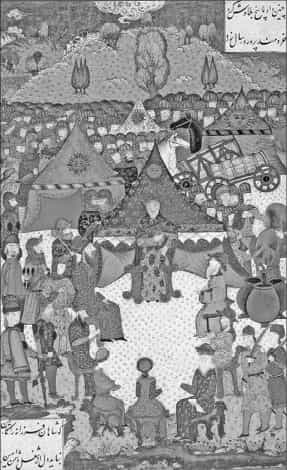
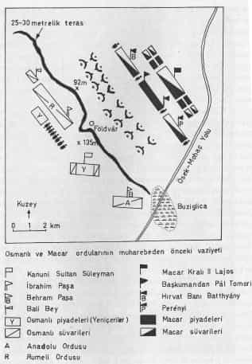
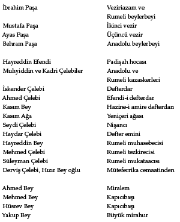

RİDANİYE SAVAŞI 1517
Osmanlılarla Memlükler arasında Mercidabık Savaşı’ndan sonra yapılan ikinci meydan muharebesidir. Memlük Sultanlığı’nın sonunu hazırlamış, Mısır’ın Osmanlıların eline geçmesine yol açmıştır. Kahire önlerinde el-Matariyye ile el-Cebelü’l-Ahmer arasında Ridaniye/Reydaniye denilen mevkide meydana geldiği için bu adla anılır. Mercidabık’taki ağır yenilginin ardından Memlüklerin ikinci direnişinin kırıldığı Ridaniye Savaşı, Osmanlıların Kahire’ye girip Mısır üzerinde hâkimiyet kurmalarını sağlamıştır.
Mercidabık Savaşı’ndan sonra sağ kurtulan Memlük emirleri, Kansu/Kanısav Gavri’nin ölümü dolayısıyla Memlük Sultanlığı’na, onun Kahire’de kendi yerine nâib bıraktığı Tumanbay’ı seçtiler. Yeni sultan, bir süre Halep’te kalıp ardından Şam’a giden (27 Eylül 1516/29 Şaban 922) Osmanlı padişahı I. Selim’in Kahire’ye yürüme ihtimaline karşı süratle asker toplamaya ve şehir önlerinde müdafaa hattı oluşturmaya çalıştı. Bu arada Canbirdi Gazali komutasındaki 5 bin kişilik bir kuvveti Osmanlı harekâtı hakkında bilgi almak için Gazze’ye gönderdi. Gazali, Kahire üzerine yürüme konusunda tereddüt içinde bulunan I. Selim’in muhtemel harekâtını önlemek maksadıyla da Gazze dolayına geldiğinde, veziriazam Hadım Sinan Paşa’nın 4 bin kişilik kuvveti onu karşılamak için harekete geçmiş, Han Yunus mevkiine yönelmişti. Burada yapılan çatışmada Gazali mağlubiyete uğrayıp Kahire’ye döndü (21 Aralık 1516/26 Zilkade 922). I. Selim de Memlük direnişinin kırılması sonucu Kahire’nin yolunun açıldığı kanaatine sahip olmuş ve buraya yürüme konusundaki kararsızlığını bir tarafa bırakmıştı. Bununla beraber bazı devlet adamları Gazze’den itibaren Kahire’ye uzanan yolun tehlikelerinden, özellikle çölde kumluk arazide çeşitli sıkıntılar çekileceğinden ve susuzluktan söz ederek Kahire’ye gidilmesi fikrine karşı çıkıyordu. Fakat bu sırada yağan yağmurlar susuzluk tehlikesini bertaraf ettiği gibi çöl yolunda rahatça hareket etme imkanı sağladı.
2 Ocak 1517’de (8 Zilhicce 922) Gazze’ye gelen padişah, buradan itibaren girilecek olan Katya Çölü’nden geçilirken Kahire’ye kadar olan güzergâhtaki konaklama yerlerini önceden tespit ettirerek, kılavuzlar göndermişti. Gazze’den Salihiyye’ye kadar çölde sekiz konakta durulacaktı. Sinan Paşa yanında Hayır Bey olduğu halde 8 Ocak’ta 6 bin askerle önceden hareket etti. Padişah da ertesi günü buradan ayrılıp 11 Ocak’ta Ariş’e ulaştı. Buradan Salihiyye’ye doğru gidilirken zaman zaman Arap aşiretlerinin baskını ve yağmalama olayları cereyan etti. Bu arada Tumanbay’a bir elçi heyeti gönderilerek, Osmanlı hâkimiyetini kabul etmesi halinde, Mısır’ın idaresinin kendisine bırakılacağı ve seferden vazgeçileceği bildirildiyse de Memlük emirleri buna karşı çıktıkları gibi, Osmanlı elçilerini de katlettiler.
Osmanlı ordusu 20 Ocak’ta Hankin, ertesi günü Birketü’l-Hac mevkiine geldi ve bu son menzilde, yapılan yoklamada ordudaki asker mevcudu 20 bin olarak tespit edildi. Ordunun yarısı daha önce doğu sınırlarının müdafaası için bırakılmıştı. Osmanlı ordusunun Kahire üzerine yürüdüğünü haber alan Tumanbay ise, 20 bin askerle Kahire yakınlarında Adiliye mevkiinde kazdırdığı siperlerle oluşturduğu müdafaa hattına gelmişti. Yanında Osmanlı tipi üzerlerine top yerleştirilmiş 100 araba ve 200 kadar Türkmen ve Mağribîlerden tedarik ettiği topçu ve tüfekçi de bulunuyordu. Aslında Tumanbay Osmanlıları zorlu çöl yolculuğunun yorgunluğu henüz üzerlerinde iken Salihiye mevkiinde karşılamak istiyordu. Fakat emirler sağlam bir müdafaa hattı kurup Osmanlı saldırısına karşı koymanın daha uygun olacağı konusunda ısrarlı olunca, bu düşüncesinden vazgeçmişti. Bu siperlere ayrıca İskenderiye ve Kahire kalesindeki bazı toplar da getirilmiş; bir kısım ağır toplar kumlara gömülerek gizlenmişti. Kazılan hendek, el-Mukattam dağından itibaren Nil Nehri’ne kadar uzanıyordu. Bazı Osmanlı kaynakları hendeğin dört mil uzunluğunda olduğunu, top sayısının iki yüzü bulduğunu belirtirlerse de bu sonuncu rakam doğru değildir. Memlüklerin amacı topları Osmanlılara göstermeyerek onları sürpriz bir salvo ateşi ile karşılamak ve bunun yarattığı muhtemel bir karışıklıktan istifade ile sert bir süvari saldırısı sonucu onları tamamen dağıtmak idi. Böylece Osmanlı ordusu tanımadığı bu topraklarda tuzağa düşürülmüş olacaktı.
Osmanlı tarafı Memlüklerin bu planlarını esirlerden ve casuslardan alınan haberlerden öğrendi. Özellikle Osmanlıların yanında yer alan ve daha sonra Mısır Beylerbeyiliğine getirilecek olan Memlüklerin eski Halep emiri Hayır Bey’in adamları ayrıntılı bilgiler ulaştırmıştı. Bunun üzerine Osmanlı ordusu doğrudan bir müdafaa hattına saldırmayıp yandan dolaşarak Memlükleri şaşırtma planı yaptı. Ertesi sabah, Mustafa Paşa Anadolu askeri ile sağ kolda, Küçük Sinan Paşa Rumeli ordusu ile sol kolda, padişah ve kapıkullarının tamamı merkezde olmak üzere saflar bağlayan Osmanlı ordusu 22 Ocak sabahı harekete geçti. Veziriazam Hadım Sinan Paşa ise merkez de padişahın sağ tarafında, Yeniçeri Ağası Ayas Ağa Yeniçerilerle sol tarafında bulunuyordu. Memlükler öncü atlı birliklerini ortaya çıkararak Osmanlı ordusunu topları bulunduğu müdafaa hattına çekmeye çalıştı. Osmanlılar da saflarını bozmadan buraya doğru ilerlemeye başladı. Fakat top menziline girmeden önce birden yön değiştirip el-Mukattem dağı tarafına yürüyünce, Memlük ordugâhı karıştı. Hemen asker saflarını buna göre düzenlemeye ve topları yan tarafa çevirmeye çalıştılar. Fakat bunu tam olarak sağlamaya fırsat bulamadan yandan dolaşan Osmanlı piyade birlikleri getirdikleri hafif top ve tüfek atışı ile Memlük cephesini ateş altına aldılar. Toplarını kullanamayan Memlük kuvvetleri dağ tarafından gelen ve savaş düzeni alan Osmanlı alayları karşısında mecburen hendekten çıkıp saflarını yeniden düzenlediler.
Ridaniye denilen bu düzlükte, Osmanlı topçu ve tüfekçileri yeniden yoğun bir ateş başlattılar. Piyade yeniçeri tüfekçileri ateş açarak ilerledi. Memlük sol kanadı bu sebeple dağıldı. Memlükler develeri top ve tüfek ateşine karşı sürmek ve ardına gizlenerek saldırmak istedilerse de, ürken develerin geri kaçması yüzünden bir kısım süvarileri ezildiği için bunu gerçekleştiremediler. Bu defa Tumanbay ve yanındaki emirler, bütün güçleri ile Osmanlıların sağ kanadına yüklenip buradan padişahın bulunduğu yeri hedeflediler. Bir rivayete göre Canberdi Gazali idaresindeki Memlük süvarisi hızlı bir atakla Osmanlı hattını yarıp buraya yardıma gelen Veziriazam Sinan Paşa’nın üzerine saldırdı. Çatışmada yaralanan Sinan Paşa aldığı üç mızrak darbesi ile attan düşmüş ve derhal çadırına götürülmüş; az sonra da hayatını kaybetmişti. Bir Memlük kaynağında ise, Tumanbay yanındaki Emir Allan ve Kertbay/Kurtbay ile birlikte, I. Selim’in bulunduğu yeri gözleyip yanlarındaki usta binicilerle saldırıya geçtiği, hatta Tumanbay’ın Sultan Selim sandığı Sinan Paşa ile teke tek çarpışıp onu atından yıktığı gibi epik bir olay yer alır. Bu hadisenin doğru olma ihtimali zayıftır.
Sabahleyin başlayıp fasılalarla ve askeri manevralarla 7-8 saat sürdüğü anlaşılan savaş sonucu, Memlükler tamamen dağıtıldı. Çaresizlik içinde kalan Tumanbay cesaretle savaşmasına rağmen yanında kalan 5-10 emirle Kahire’ye doğru çekilmekten başka çare bulamadı. Daha sonra kaçan Memlüklerin bir bölümü onun yanında toplandı. Bu 7 bin kişilik kuvvetle Tumanbay ısrarla Osmanlılara karşı direnişini yakalanana kadar sürdürdü. Savaşta Memlük kaybı 4 bin dolayında idi. Osmanlı kaybının bundan biraz daha az olduğu anlaşılmaktadır. Savaşın ardından ertesi günü, Osmanlı ordularının Kahire’ye girişine izin verildi. I. Selim ise Bulak tarafına geçti. Fakat 27-28 Ocak gecesi Tumanbay yanındaki 7 bin kişi ile ansızın Kahire’ye girip şehir içinde direniş başlattı. Üç gün boyunca sokaklarda Osmanlı askerleriyle halkın da destek verdiği Tumanbay’ın kuvvetleri arasında kanlı çarpışmalar meydana geldi. Kahramanca direnen Tumanbay Osmanlı kuvvetlerinin baskısı karşısında daha fazla dayanamayıp şehirden kaçtı. Böylece Kahire’de tam anlamıyla Osmanlı kontrolü kurulmuş oldu. Yavuz Sultan Selim de asayiş sağlandıktan sonra 15 Şubat’ta Kahire’ye girdi. Tumanbay’ın yakalanıp 13 Nisan’da idamıyla Mısır’da tam anlamıyla Osmanlı idaresi kurulmuş oldu.
Ridaniye savaşı, Osmanlı taktik gücünün ani değişikliklere karşı farklı taktik uygulayabilme kabiliyetini göstermesi yanında ateşli silahların etkili kullanımını da göz önüne serer. Memlükler toplarının mevcudiyetine rağmen bunu kullanma becerisine sahip değillerdi. Hepsinden önemlisi topu etkili şekilde askeri harekâtlarının bir parçası olarak görmüyorlardı. Son derece mahir ve savaşçı atlı birliklerine rağmen, onların yenilgilerini hazırlayan temel faktör de artık devri sona ermiş bu savaş anlayışları olmuştur.
Kaynaklar
Marino Sanuto, I Diarri, Venezia 1887, XXIV, s. 162, 165-166, 170-172.
Haydar Çelebi, “Ruznâme” (Feridun Bey, Münşeatü’s-selâtin içinde), I, 484-485; “Rıdaniye Fetihnâmesi”, (Feridun Bey, Münşeatü’s-selâtin içinde), I, 427.
“Silahşor’un Fetihname-i Diyar-ı Arab Adlı Eseri”, haz. S. Tansel, TV. İçinde) sy. 18 (1961), s. 431-435.
İdris-i Bitlisi, Selimşahnâme, haz. H. Kırlangıç, Ankara 2001, s. 322-337.
İbn Iyas, Bedâ’i’u’z-zuhûr, V, 145-149.
Şükri-i Bitlisi, Selimnâme, hz. M. Argunşah, Kayseri 1997, s. 258-280.
G.M. Angielello, Seyahatnâme (Seyyahların Gözüyle Sultanlar ve Savaşlar içinde, trc. T. Gündüz), İstanbul 2007, s. 111-121.
Keşfi Mehmed, Selimnâme, Süleymaniye Ktb., Esad Efendi, nr. 2147, vr. 94a-104b.
İbn Zünbül, Vâkı’âtü’s-Sultan el-Gavri ma’a Selim el-Osmani, nşr. A, Âmir, Kahire 1962, s. 34-58.
Sucudi, Selimnâme, haz. İ.H. Çukadar, Yüksek Lisans Tezi, 1988, s. 82-89.
Celalzâde, Selimnâme, nşr. A. Uğur-M. Çuhadar, Ankara 1990, s. 195-201.
Sa’d b. Abdülmüteal, Selimnâme, TSMK, Revan kısmı, nr. 1277, vr. 88a-92b.
Ada’î-yi Şirazi ve Selim-nâmesi, haz. A. Bilgen, Ankara 2007, s. 184-188.
Çerkezler Kâtibi Yusuf, Selimnâme, TSMK, Hazine, nr. 1422, vr. 36b-41a.
Hammer (Ata Bey), IV, 212-214.
S. Tansel, Yavuz Sultan Selim, Ankara 1969, s. 146-168.
MOHAÇ 1526 Osmanlılara Orta Avrupa’nın Kapılarını Açan SavaşI
Osmanlılar ile Macarlar arasında yapılan Mohaç Savaşı, Macar tarihinin en trajik dönüm noktası olarak mütalaa edilir. Esas itibarıyla savaşın bizatihi kendisi dönemindeki diğer meydan savaşları arasında pek önemli bir yer tutmaz, ama sonuçları itibarıyla Avrupa’da başlayan yeni bir mücadele ortamı, son derece karmaşık siyasi meselelerin ortaya çıkışına zemin hazırlamıştır. Savaş, Orta Avrupa’da türlü zorluklara karşı tutunmayı başaran ve müstakil bir krallık halinde ortaya çıkan tarihî Macar Devleti’ni parçalanmaya götürdüğü gibi bugüne uzanan çizgide önemli sonuçları da beraberinde getirmiştir. Ortaçağ Macar Krallığı’nın dağılması, üstelik önemli bir parçasının başkent Buda/Budin dahil doğudan gelen ayrı din ve kültüre mensup bir fâtih kavmin idaresi altına girmesi, millî mensubiyet duyguları ön plana alan siyasî tarihçilik ekolü için şüphesiz menfi bir söylemi ortaya koyabilecek unsurları sağlamıştır. Nitekim Macar tarihçiliği açısından kendi devletleri için bir dönüm noktası olarak görülen ve pek çok araştırmaya konu olan Mohaç Savaşı, genellikle millî tonları ağır basan bir çerçevede ele alınmıştır. Buna karşılık muzaffer taraf için ise büyük-şanlı bir zafer, hatta birinde “...yüce tarihimizin Avrupa’daki son büyük zaferi...” tanımlamaları191 ile ifade edilmiştir. Savaşın askerî ciheti ve harekât planları konusunda bile iki taraf tarihçileri arasında farklı argümanlara rastlanır. Macar ve ona bağlı olarak Batılı tarihçiler, daha çok kendi kaynakları, 19. yüzyılın geniş kapsamlı Osmanlı tarihleri ve bir bölümü de bazı Osmanlı kroniklerinin 19. yüzyılda yapılmış çevirileri temelinde olayı değerlendirirken, genellikle Osmanlı tarafının kaynaklarını yetersiz, teferruatsız ve çoğu defa abartılı bulurlar. Türk tarihçiliğinde ise seferin ve savaşın seyri konusundaki tartışmalardan bî-haber, zafer havası içerisinde rutin bilgilere yer verilir, nakilci bir anlatım benimsenir, çoğunlukla da aslî kaynaklara inilmeksizin, ikinci-üçüncü elden aktarmalar esas alınır. Şüphesiz savaşın mahiyet, cereyan tarzı ve askerî yönü üzerinde durmak, “uzun soluklu toplumsal yapıyı ele alma veya bunlara önem verme iddiasındaki ekoller” için tamamen anlamsız görülebilir. Ancak Osmanlıların Batı macerası içerisinde bir kırılma noktası olması yanında oldukça merak uyandıran bir tartışma ortamının mevcudiyeti, bizatihi savaşın kendisinin ele alınması zaruretini gündeme getirir. Macar tarihçiliği açısından siyasi sonuçları itibarıyla dikkat çeken tartışma ortamı, Türk tarihçiliğinde herhangi bir akis bulmamıştır. Bunda son yarım asırdır Türk akademik tarihçiliğinin “nakilci, askeri ve siyasi tarihe önem verme” dolayısıyla küçümsenmesinin ağır baskısı altında “moda” konular olan sosyal ve iktisat tarihine ağırlık vermesinin etkisi büyüktür. Oysa Osmanlı askerî tarihi akademisyenler için boş ve verimli bir saha olarak işlenmeyi beklemektedir. Burada, Mohaç savaşının askerî tarih açısından safhaları yanında seyri konusundaki tartışma noktaları, çağdaş Osmanlı kronikleri temelinde ele alınarak, Macar yahut Batı menşeli kaynak külliyatına Osmanlı tarafının ne gibi yeni katkılar sağlayabileceğine dikkat çekilmeye çalışılacaktır.
Savaşın safahatına girmeden önce Türk tarihçiliğindeki genel kanaat açısından bir husus belirlemekte fayda vardır. Her şeyden önce Mohaç Savaşı, Macar topraklarının tamamı değil bir bölümünün ilhakına yol açacak gelişmelerin başlangıcını oluşturur. 1350’li yıllardan itibaren Balkanlar’da yayılmaya başlayan Osmanlıların 150 yılı aşkın bir süre sonunda artık kendisine sınırdaş yaptığı ve son elli yılında da sürekli mücadele ettiği Macar Krallığı’na karşı ilgisiz kalması beklenemezdi. Sonunda Belgrad (1521) gibi önemli bir “kilidi” açıp verimli Pannonia ovalarına yönelen bu büyük güç, 1526’daki meydan muharebesi ile hem Orta Avrupa’daki geleceğinin kapılarını aralıyor, hem de paradoksal şekilde kendi ana coğrafyası haline getirdiği Rumeli’nin yani Balkanların kaybına kadar gidecek olan uzun bir süreci de başlatmış oluyordu. Anlaşılacağı üzere Osmanlılar Macar düzlüklerine ilk adımlarını 1521’de Belgrad’ın ele geçirilmesi sonucu atmışlardı ve Mohaç Savaşı neticesi bu kesimde Sirem adı verilen bölgede bir sancak kurmuşlardı. Mohaç Savaşı’ndan sonra krallığın başkenti Buda/Budin’e girildi ise de burası terk edildi. 1529’da ikinci defa Budin’e ayak basıldı192 ve burası daha önceden irtibat kurulan ve Macar soylularının bir bölümü tarafından kral seçilen Transilvanya/Erdel voyvodası I. János Szapolyai’ya (1526-1540) “metbuluk” şartlarıyla bırakıldı. Bu durum Osmanlıların hukukî açıdan Budin’in tasarruf hakkını elinde bulundurdukları, ancak anlaşma şartlarıyla tâbi bir idareciye bıraktıkları anlamına geliyordu. Bir kısım Macar asilzadesi ise, savaşta hayatını kaybeden II. Lajos’un hanımı dolayısıyla veraset bağını öne çıkaran ayrıca 1515’teki anlaşmaya dayanan Habsburg hanedanından Avusturya arşidükü I. Ferdinand’ı kral olarak seçmişti. Aslında Szapolyai ile Ferdinand’ın çekişmesi, dengesiz güçlerin karşı karşıya gelişi anlamına geliyordu. Szapolyai Budin’e hakim olma oyununu dengelemek için Osmanlı kartına başvurdu. Batı kaynaklarında “Muhteşem” veya “Büyük Türk” sıfatlarıyla anılan Osmanlı hükümdarı I. Süleyman ise, Macaristan’da doğrudan hâkimiyet kurmak yerine öteden beri başvurulan “tedrici fetih politikasının” bir gereği olarak, burayı bir tampon bölge halinde amansız rakibi Habsburglara karşı kullanmayı, kesin hâkimiyet için zamanın ve şartların oluşmasını beklemeyi tercih etti. 1540’da Szapolyai’nın ölümü ile durum değişti, I. Süleyman Budin merkezli yeni bir Beylerbeyilik oluşturdu (1541 Eylül’ü)193ve bu sınır eyaleti, Ferdinand’ın hâkimiyetindeki Macar topraklarına karşı girişilen askeri harekât için bir üs haline getirildi. Zamanla da eyaletin sınırları genişledi ve 1568 Edirne Anlaşması Macaristan’ın durumunu siyasi olarak resmen belirledi: Osmanlıların hâkimiyetindeki kısım, Habsburgların idaresindeki bölüm ve Osmanlılara tâbi yarı bağımsız Erdel Prensliği194. Yani Mohaç Savaşı, Kanuni Sultan Süleyman çağında, kademe kademe Macaristan üzerindeki Osmanlı idaresinin ve siyasetinin çerçevesini belirleyen ve sıklıkla atıf yapılan bir başlangıç olmuştur. Burada unutulmaması gereken nokta, savaşın direkt sonucunun “müstakil kadim Macar Krallığı”nın doğrudan Osmanlı hâkimiyetine girmesi değil, sonunu teşkil etmiş olması keyfiyetidir.
Savaşa Doğru: Sebepler
Osmanlıların Mohaç Savaşı’yla sonuçlanan sefere çıkma sebepleri, Mohaç Savaşı’nın askerî safhaları ve Budin’e girildiği halde buranın niçin terk edildiği, I. Süleyman’ın Macaristan üzerindeki gerçek niyetlerinin ne olduğu konuları önemli bir tartışma ortamı oluşturmuş gözükmektedir. Bilhassa fikirleri akademik çevrelerde tenkit edilen hatta özet halinde olsa bile kitabının Türkçeye tercümesiyle Türk okuyucunun yanlış yönlendirildiği eleştiri konusu olan G. Perjés, I. Süleyman’ın Macar seferini bir cezalandırma harekâtı olarak tanımlar ve aslında onun niyetinin Belgrad’ı aldıktan sonra güçlerini kırdığına inandığı Macarlara yaptığı barış teklifiyle onları tıpkı Lehistan gibi kendi yanına çekmek olduğunu, fakat Macarların bu teklifi reddetmeleri üzerine onların üzerine yürüdüğünü yazar195. Ona göre Süleyman, tıpkı 1520-21’de olduğu gibi Macaristan’dan serbestçe geçiş hakkı196 istemiştir. Zira 1524’te yapılan görüşmelerden anlaşıldığı kadarıyla Osmanlılar Avusturya’ya karşı sefer düşünmekteydiler. Fakat Macarlar hem 1524’te hem de daha sonra 1525’te geçiş talebini reddetmişlerdir. Macar tarihçi Kubinyi’nin bulduğu bir belgeden anlaşıldığına nazaran bu reddin sebebi, Türklerin vergi isteği ile birlikte bu teklifi yapmış olmalarıdır. Ancak vergi önemsizdir, reddi gerektirecek kadar mühim bir yük getirmemektedir. Hülasa I. Süleyman bir barış teklifinde bulunmuş ve kabul edilmemiştir, bu ise Macarların o sıradaki vaziyeti düşünüldüğünde, yanlış bir davranış olmuştur197.
Kanuni Sultan Süleyman
Savaşın sebepleri hakkında genel Macar görüşünü eleştiren ve istifade ettiği araştırmalara dayalı olarak yeni bir yaklaşım sunan bu fikirler, akademisyenler tarafından tenkide uğradı. Özellikle Türk kaynaklarını da inceleyebilecek donanıma sahip P. Fodor, hem onun ileri sürdüğü fikirlerin hem de diğer bazı Macar akademisyenlerin görüşlerinin yeniden kritiğini yaptı198. Öncelikle I. Süleyman’ın asıl hedefinin Macaristan’ı doğrudan doğruya ele geçirmek olduğu temel düşüncesinden yola çıkarak, her şeyin bu çerçevede ele alınması gerektiğine değindiği uzun makalesinde, bu konuda akademisyenlerin fikirlerini iki kolda toplayarak, bir kısmının Osmanlı sultanın başlangıçta Macaristan’ı fethetmeyi değil, ona Eflak ve Boğdan gibi vasal bir statü vermeyi istediği, ancak daha sonra gelişen olayların onu bu telakkiden vazgeçirdiği, Süleyman’ın Macarlara boyun eğdirerek topraklarını ele geçirmek niyetinde olmayıp, burayı bir geçiş hattı halinde kullanmak istediği düşüncesinde olduklarını belirtir. Böyle kanaate sahip olanların Osmanlıların Macaristan’da doğrudan bir idare kurmak istemedikleri, bunun sebebinin de bu uzak topraklarda yeterli sayıda Türk göçmen ve yerli nüfusun islamiyeti kabul etme istekliliği gibi bazı temel koşulların bulunmadığı ve Macaristan’a Balkan topraklarını korumak vazifesi verildiği gibi argümanları ileri sürdüklerini yazar. Bazılarının buna Osmanlıların Macaristan’ı bütünüyle fethetmeye güçlerinin yetmeyeceğini bildikleri için Habsburglara karşı bir tampon olarak kalmasını tercih eden bir siyaset izledikleri fikrini eklediklerine de temas eder. Bunların dışında ikinci kesim, Macaristan’ın adım adım/tedrici bir fetih siyaseti ile ele geçirilmesi politikasını temel almaktadır. Ferenc Szakály Mohaç Seferi’nin sebepleri bahsinde bu tedrici fetih politikasının ilk safhasını, yumuşatma dönemi olarak nitelemiş ve bunun 1526’da sona erdiğini söylemiştir, ikinci safhayı ise Macar Krallığı’nın mukavemetini kırma teşkil etmiştir. Sonuncu safha bütün Macar topraklarında denetim ve hâkimiyet sağlama teşebbüsüdür199. Yani her şey bir bakıma daha baştan Macaristan’ın doğrudan ele geçirilmesi üzerinde planlanmıştır. Bu görüşleri ele alan Fodor da sonuç olarak “tedrici yöntemlerin yardımıyla Macaristan’ın ilhak edilmek istendiğini savunan grubu desteklediğini” belirtir200.
Bu görüşler aslında Osmanlıların Macaristan üzerindeki uzun soluklu politikalarına geniş bir zaviyeden ve döneminin şartları muvacehesinde değil sonradan oluşan olayların yardımıyla şekillenmiş bir bakışı yansıtır. Yani döneminin güncel koşul ve politikalarını göz ardı eder201. Bu bakımdan doğrudan o yıllara tekaddüm eden vâkıa/olgulardan hareket etmek daha uygun bir yaklaşım olabilir. Zira uzun periyotlu politikalar içerisinde ani gelişen güncel olguların belirleyiciliği bazen belirlenen yolda önemli sapmalara yol açabilir. I. Süleyman’ı 1521’de Belgrad’ı almaya iten sebeplerle onun 1526’da Macaristan’a yönelmesini belirleyen faktörlerdeki değişkenlikler bu meyanda önem kazanmaktadır. Şüphesiz Osmanlılar Avrupa’ya doğru bir yayılma siyaseti izliyorlardı, ama bunu sadece onların “savaşçı tabakalarının ganimete, kölelere yönelik hevesi” veya “halkın toplumsal ihtiyaçlarını tatmin eden yağmacı akınlar” temelinde görmek çok bilinen, ancak o ölçüde de zayıf bir argümandır. I. Süleyman da tıpkı çağdaşı Habsburg İmparatoru V. Karl gibi cihanşümul bir hâkimiyet kaynağından besleniyordu, fakat bu ideallerle, gerçekçi politikalar birbirinden farklıydı. Bu cümleden olarak 1521’den itibaren Osmanlıların Macar siyasetlerini bu kaba ve genel çerçeveden çıkararak vâkıalar esasına indirmek, dönemin -geçici olarak görülse de- siyasi gündemini belirlemek açısından daha uygun olacaktır.
1521’de Belgrad’ın fethiyle sonuçlanan ilk Macar Seferi, tahta yeni cülus etmiş I. Süleyman için meşru hükümdar olarak tebaası ve idarecileri nezdindeki imajını da desteklemeye yönelikti. Bu seferdeki amaç öyle ilan edilmiş olsa bile doğrudan Budin’e ilerlemek değildi. Böyle bir harekât baştan planlanmış ve duyurulmuştu, fakat Belgrad gibi önemli bir stratejik hedefe ulaşma, ilk adım olarak yeterliydi ve bu da uzun süreçli Macar siyasetinin ilk aleni tezahürünü oluşturmuştu202. Budin ikinci planda kalmaya zaten baştan mahkûmdu. Burada planın “Sultan’ın kişiliğinden kaynaklanan belirsizliğin ve hatalı kurguladığı tasarılarının, Osmanlıları hedeflerinden uzaklaştıran şartların doğması nedeniyle başarısızlığa uğradığını” iddia etmek203 pek gerçekçi bir yaklaşım değildir. Burada sefer sırasındaki strateji değişiklikleri öne çıkmıştır ve bunun da padişahın şahsi tasavvurlarıyla herhangi bir ilgisi yoktur. Esasen öncelikli hedef, doğu meselesi kendisine halledilmiş bir miras olarak kalan padişaha, büyük atası İstanbul’un fâtihinin sonuçsuz iki kuşatmasından (Belgrad ve Rodos) intikal etmişti. Belgrad’ın alınışının ardından ertesi yıl hayli zor bir deniz seferine ve meşakkatli coğrafyaya rağmen Rodos’a yönelmenin ardından yatan düşünce, ancak böyle bir konsept içinde mütalaa edilebilir. Bununla şüphesiz burada I. Süleyman’ın doğrudan Macaristan’ı hedeflemediği gibi bir sonuca ulaşmak istememekteyim. Esasen eninde sonunda Macar Krallığı ile nihaî bir hesaplaşma olacaktı. Zira daha II. Murad döneminden bu yana Osmanlıların Balkanlar’da rakibi olan tek ana güç Macarlar idi. Bundan dolayı konunun Osmanlıların yağma ve ganimet peşinde koşma anlayışlarının çok daha fevkinde tarihî kökleri olan bir mücâdeleye dayanmakta olduğu gerçeği gözden kaçırılmamalıdır. Ancak böyle bir seferin siyasi şartlarının oluşması için müsait bir fırsatın beklenmekte olduğu açıktır. 1524-1525 yılları bu fırsatın oluşumunu sağlayacak gelişmeleri beraberinde getirmekte gecikmemiştir.
Bu yıllarda doğuda durum sakindi, Şah İsmail ölmüş, İran’dan herhangi bir tehdit yakın gelecekte beklenmiyordu. Rodos alınarak denizden gelebilecek tehlikelere de set çekilmişti. Mısır meselesi ve Suriye’deki isyanlar fazla zahmet çekilmeksizin yatıştırılmıştı204. Üstelik Batı Avrupa’da Fransa ile İmparatorluğun çatışması, İmparatorluğa bağlı topraklardaki iç buhran müsait bir vasat sağlamakta idi. Azmettirici sebepler de bu ortam içerisinde ortaya çıkmakta gecikmedi. Macar Krallığı’nın kaderini etkileyecek gelişmelerin adımını oluşturdu. Esasen I. Süleyman’ın Macaristan’a yürümesi konusunda Türk tarihçiliğinde öne sürülen temel sebep olan Fransa Kralı’nın talebi meselesi, gerek Macar ve gerekse Batı tarihçiliğinde çok zayıf tonlarla dile getirilmekte, çoğu defa da üzerinde durulmamaktadır. Şüphesiz Osmanlılar böyle bir sebep olmadan da Belgrad’dan sonra önlerinde açılan Macaristan düzlüklerine doğru ilerleyeceklerdi. Fakat bu olay sefer için önemli bir dayanak noktası oluşturdu. İmparatorluk yolunda V. Karl’a karşı mücadeleye girişen ve bir süre sonra Pavia’de yenilerek (25 Şubat 1525) esir düşen I. François’nın annesi oğlunun kurtarılması için padişaha başvurmuştu. İmparator ile yaptığı barış sonucu I. François serbest kalmasına (14 Ocak 1526) rağmen Osmanlılar hazırlıklarına başlamışlardı. Fransız elçisi Johann Frangepan’ı (Hırvat asıllı Macar asilzade, Fransa Kralı’nın hizmetinde idi) kabul eden I. Süleyman krala hitaben yazdığı 15-25 Ocak 1526 (evâil-i Rebiülahır 932) tarihli mektupta açık bir ifade ile Fransızlara denizden ve karadan Habsburglar üzerine sefere çıkma teklifini uygun bulduğunu bildiriyordu205. Ortak hedef, İmparatorun Fransa’yı da ele geçirerek Avrupa’da tek güç haline gelmesini engellemekti.
Öte yandan seferin sebebi hakkında geç tarihli olmakla birlikte genellikle gözden kaçırılan önemli bir kayda daha dikkat çekmek gerekir. 1533’te Alman/Habsburg elçileriyle görüşen veziriazam İbrahim Paşa’nın, siyasi konjonktür gereği gibi düşünülebilirse de konu hakkında bazı ipuçları veren beyanı ilginçtir. Buna göre padişah tahta çıktığında Macarlar ile iyi münasebet kurmak için babasının vefatı ve kendisinin tahta cülusunu bildirmek ve böylece karşı taraftan bir tebrik alarak mevcut anlaşmayı (1519) teyid etmek maksadıyla Macar Kralı’na bir elçi yollamış, fakat kral bu elçiyi ve onun ardından gelen bir diğerini hapse atınca bu durum padişah tarafından düşmanlık belirtisi sayılmıştı. Daha sonra Fransız Kralı’nın annesi yardım talebinde bulununca Kralın esaretine üzülmüş olmasının etkisiyle buna bir cevap olmak ve İmparator V. Karl’a darbe vurmak için onun kız kardeşiyle evli Macar Kralı üzerine sefer yaparak hem imparatoru zor duruma düşürmeyi hem de barış çağrılarına düşmanca davranan II. Lajos’tan intikam almayı planlamıştı206. Bu ifadelerden Macar Kralı’nın Osmanlı elçisine niçin böyle bir muamelede bulunduğuna dair işaret olmamakla birlikte, bunda padişah tarafından iletilen mesajın etkisi olduğu açıktır. İbrahim Paşa’nın bu sözleri 1532 seferinin ardından gelen elçiler Hieronymus von Zara ve Cornelius Duplicius Scepper’i yönlendirmek, gözdağı vermek maksatlı ifadeler olarak düşünülebilir ve olaylar cereyan ettikten sonraki bir değerlendirme olarak da nitelendirilebilir ise de bütünü ile göz ardı edilmemesi gereken unsurlar taşır. Döneminin kaynaklarıyla da uyum sağlar.
Sefer ile çağdaş en önemli Osmanlı kaynağı olan Kemalpaşazâde’nin eserinde sebepler şöyle sıralanır: a) Macar Kralı “kâfir” hükümdarların ulularındandır, Osmanlıların sınır boylarındaki önde gelen düşmanıdır; b) Vilayetinin eşkıyası sınır boylarında sürekli savaşır, boyun eğmezler, bu yüzden padişah onları ceng ile yola getirmek diler; c) Sirem denilen bölge stratejik öneme sahiptir, daha önce de buraya çeşitli defalar Osmanlı askeri girmiştir, hatta Fâtih Sultan Mehmed burayı almak istemiş fakat başaramamıştır; d) Fransa Kralı Osmanlılara başvurarak İspanya beyinin pençesi altında olduğunu memleketinin işgal edildiğini bildirmiştir. İspanya beyine yenildiğinde vezirlerine danışmış ve onların da mutabakatı ile padişaha müracaat etme kararı almışlardır. Onların isteği Macar Kralı’nın desteğiyle İspanya beyi galip ve üstün geldiğinden onun bu başta gelen yardımcısının (yani Macarlar) ortadan kaldırılmasıdır. Eğer böyle olursa kendileri İspanya ile daha rahat mücadele edebileceklerdir. Padişah bu istekleri uygun görmüş ve Macaristan’a yönelmiştir207.
Kemalpaşazâde’nin öne sürdüğü argümanlar, yukarıda anlatılanlarla birlikte değerlendirildiğinde belirli bir alt yapıyı teşhise imkan verir ve Osmanlıların zihnindeki probleme açıklık getirir. Onun dışında Fransa meselesine temas eden diğer tarihçi Matrakçı Nasuh’tur. Nasuh Kemalpaşazâde’nin ifadelerini benimser, Fransa Kralı’ndan gelen elçinin padişahı “Üngürüs kralı def’ine sevketmek” istediğini ve onun bunu kabul ettiğini yazarken Macar Kralı’nın “küffârın” en başta gelen krallarından biri olduğunu, gazilerin akınlarını sürekli önlediğini de belirtir208. Diğer çağdaş müverrih Bostan ise “kâfire karşı gaza” konusunu öne çıkarır, hedefi “Üngürüs melâinin tahtgâhı olan şehr-i Budin” diye açıklar209. Savaşa Aydın ili Sancakbeyi olarak katılan 210 Lütfi Paşa tehdit unsuruna vurgu yaparak Belgrad ve Rodos alınınca “Frengistan Beylerinin ahitleşip” üç yıl mühlet istediklerini, Macar Kralı’na haber gönderip onun başbuğluğunda birleştiklerini, bunu önlemek için de padişahın sefere çıktığını yazar211. Daha geç tarihte eserini kaleme alan, ancak Divan kâtiblerinden biri olarak seferde bulunduğu anlaşılan Celâlzade Mustafa Çelebi de Macaristan’ı fetih maksadını beyan eder212. Sefer Ruznâmesi’nde bu konuda bilgi yoktur, Fetihnâme’de ise umuma mesaj verme amaçlı olarak diğer bazı Osmanlı kronikleri gibi gaza ve cihad kavramları formülasyonuyla izahat yapılır. Macarlar islamı inkâr etmektedirler, halbuki ülkeleri “memâlik-i islâmiye ile mülâsık”tır, bu sebeple savaş açılmıştır213. Şüphesiz Fetihnâme kamuya yönelik şekilde zaferin islamî unsurlarla bezenerek öne çıkarılması amacına matuf olduğundan haliyle burada Fransa Kralı’na yardım konusu gündeme getirilemezdi. Bunu bir kısım tarihçiler de benimsemiş olmalıdır. Ancak Kemalpaşazâde ve ondan büyük ölçüde yararlandığı anlaşılan Matrakçı Nasuh böyle bir endişe taşımazlar.
Osmanlı sarayında Macar seferi kararlaştırıldığında bunun en çok farkında olanlar muhtemelen Osmanlı-Macar-Habsburg sınırındaki güçlerdi. 1523 ve 1524’te sınır hattı karışıktı, en küçük bir hareketlilik bile takip ediliyordu. Dalmaçya ve Hırvat sınırlarında benzeri faaliyetler görülüyordu. Tuna hattında Sirem’de daha yoğunlaşan bir hareketlilik yaşanıyordu. Belgrad havalisinde Bali Bey Macar sınırlarına müteveccih akınlarla mücadeleyi canlı tutuyor ve bölge hakkında sürekli olarak merkeze haber iletiyordu214. Macarlar 1523’te Sirem bölgesinde Szávaszentdemeter’e (Sremska Mitrovica) yakın bir yerde Osmanlı kuvvetlerini bozmuşlardı215. 1523’te Macar Kralı Lajos, Arşidük Ferdinand ve Lehistan temsilcisi Türklere karşı savaş durumunu uzun uzadıya konuşmuşlardı216. Fakat sonra Lehistan Kralı 1525’te Osmanlılar ile anlaşma yenilemişti217. Macarlar iyice yalnız kalmışlardı. Tehlike belirdiğinde II. Lajos kendisine yardımcı olabilecek müttefikler bulamadı. Alman prensleri Macarlar için para harcamak ve asker kaybetmek istemedikleri için gönülsüz davranıyorlardı. Katolik Batılı hükümdarlar yardım isteklerini sessizlikle karşılıyorlardı. Bu konuya temas eden N. Iorga, aslında Tuna ülkeleri (Eflak, Boğdan ve Erdel) arasında bir ittifak kurmanın tam sırası iken kralın Erdel tarafındaki Romen komşusunu hakir gördüğü için yardım talebinde bulunmadığını yazar218. Fakat bu kesimlerin Osmanlılarla olan bağını gözardı eder219. Üstelik Erdel’in bu konuda fikir beyan etmesi de beklenemezdi. Zira burası Macaristan’ın bir bölgesiydi. Ayrıca 1519’a kadar Osmanlı-Macar ahitnamelerine göre Eflak ve Boğdan, hem Macaristan hem de Osmanlılara vergi bağıyla bağlıydı. Hatta 1526’da da Macaristan’a karşı bağı sürüyordu. II. Lajos Szapolyai’ye gönderdiği emirde, onun Eflak voyvodasının askerleriyle birlikte Eflak’a gidip, oradan Osmanlı Rumeli’sine akınlar yapmasını ve padişahın ordusunu zor durumda bırakmasını istemişti. Ancak Erdel voyvodası Szapolyai hemen sonra Osmanlı ordusunu karşılamak üzere toplanan Macar ordusuna katılmak için çağrıldı220.
Öte yandan II. Lajos’un idaresinden Macar asilzadelerinin bir bölümünün memnuniyetsizlik duyduklarından söz edilir. Savaş meclisinde bile asilzadelerin istekleri kralın yanındaki Almanların uzaklaştırılması, devlet gelirlerinin doğru kullanılması gibi iç meselelere yönelmişti. Macar beylerinden Szapolyai ve Werböczy taraftarları ile Báthory yandaşları arasında çekişme sürüyordu. Kimin başkumandan olacağı ve Macar ordusunun bir mi yoksa iki komutan tarafından mı idare edileceği hakkında derin görüş ayrılıkları bulunuyordu221. Osmanlıların çıktıkları yeni seferin hedefinin Budin mi, Erdel mi yoksa Hırvatistan mı olacağı konusunda bir fikir birliği yoktu ve bir belirsizlik hakimdi. Hatta Erdel voyvodası Szapolyai ve devrin meşhur komutanlarından Hırvat banı Kristóf Frangepan bulundukları bölgelere yönelik bir tehdit beklediklerinden asıl orduya katılmakta gecikmişlerdi. Öte yandan Çek yardımcı kuvvetler feodal alışkanlıkları yüzünden güçlükle toplanmışlardı, üstelik Macarlar da maddi durumu göz önüne alıp askere uzun süre para ödeyerek bir arada tutma konusunda büyük sıkıntılar yaşıyorlardı. Bunların çoğu savaşa çok az bir zaman kala alelacele toplanabilmişti222.
Savaş öncesi Macar sarayındaki duruma vakıf olan Papanın temsilcisi Burgio’nun lakaytlıkla suçladığı Macar Kralı II. Lajos223, Türklerin durumunu en iyi bilen kişi olduğu gerekçesiyle Kalocsa baş piskoposu ve Sirem komutanı Pál Tomori’yi Vişegrad’a çağırdı. 23 Nisan 1526’da yapılan toplantıda Osmanlıların sefer hazırlıkları ve karşı tedbirler konuşuldu. Köylü ve çete gruplarından oluşan piyadelerin 1 Temmuz’da Tolna’da toplanması karalaştırılmıştı. 9 Mayıs’ta sona eren müzakerelerde yaşananlara şahit olan elçilerden biri, “Papanın şimdiden Macaristan’ı kaybedilmiş Hıristiyan ülkeler listesine ekleyebileceğini” ifade etmişti224. Kralın durumun ciddiyetinden habersiz rahat davranışları, muhtemelen olayın gerçek boyutlarını anlayamamaktan değil, etrafına psikolojik açıdan güven aşılama çabalarının bir yansıması olmalıdır. Heyecanlı ve mağrur Macar asilzadeleri Türkleri geri püskürteceklerinden oldukça emindiler.
Bu arada Pál Tomori’nin mevcut üç mektubu konu hakkında bazı dikkat çekici unsurlar taşır. 25 Haziran 1526 tarihli olan mektup Osmanlı planları ve Macar sulh talepleri konusunda ilginç bilgiler sağlar. Buna göre, Macar Kralı’nın adamları İstanbul’a gitmişler ve Ocak 1526’da Tomori kralın yanında iken Türkler tarafından geri gönderilmemişlerdi225. Türkler onları yanlarında Filibe’ye kadar getirdiler, sonra da serbest bırakıp Macaristan’a dönmelerine izin verdiler. Bunlar 25 Haziran’da Tomori’nin yanına Pétervárad’a ulaştılar. Oradan da Budin’e gönderildiler. Yine aynı mektuba göre, 1523’te Szávaszentdemeter yakınlarındaki savaş sırasında bazı Macar askerleri esir alınmış, sonra da bunlar yeniçeri olarak Osmanlı hizmetine girmişlerdi. Mohaç Seferi sırasında Osmanlı ordusu Alacahisar menzilinde iken bunlar kaçıp Macar tarafına iltica ettiler. Onların getirdikleri habere göre, padişahın amacı Budin’i ele geçirmek idi. Osmanlı ordusu Alacahisar’da dört gün beklemişti, bunun sebebi askerlerin karşı karşıya kaldıkları zor şartlar idi. Osmanlı ordusundaki paşalara göre Macarlar barış talep edip 10 bin Mark ödemeyi önermişler, ancak padişah bu teklifi geri çevirmişti226. Tomori’nin 5 Temmuz tarihli krala gönderdiği mektup ise Osmanlı ordusunun durumu hakkındaki geniş bilgisini gösterir. Burada ayrıca kendisinin yetersiz kuvvetleri bulunduğu için Osmanlıları Sava ve Tuna geçitlerinde durduramadığını anlatır227.
Mohaç Ovasına Hareket
Osmanlı ordusunun harekât safhaları ve savaşın cereyanı konusunda çağdaş Osmanlı kronikleri nispeten detaylı bilgi sunarlar. Özellikle seferin Ruznâmesi resmî ordu jurnali niteliği taşısa da detaylar eksiktir, olayların günlük kısa tasvirleri verilir228. Onun dışında çağdaş kaynaklar eskiden beri bilinen ve kullanılan Kemalpaşazâde’nin eseri, Matrakçı Nasuh ve Bostan Çelebi’nin Süleymannâmeleri, savaşta hazır bulunan Lütfi Paşa ile Celalzâde Mustafa Çelebi’nin Tarih’leridir. Savaşın Osmanlı tarafının yegâne kaynakları olarak bu eserlerdeki bilgiler, esas alınması gereken bir temel sağlarlar229. Osmanlı arşiv malzemesi ise pek kıttır. Özellikle sefer sırasında tutulan gelir-giderlerin günlük işlendiği muhasebe ruznamçe defterine ait bazı parçalar bugüne ulaşmıştır. Bunlardan savaşın kendisi hakkında olmasa bile, hazır bulunanlar, elçi gelişleri ve kronoloji bakımından faydalı bilgiler elde edilebilmektedir230. Ayrıca sefere katılan Kapıkuluna/Yeniçerilere verilmek üzere götürülen silah ve malzemelerin bir listesi de mevcuttur231. Macar tarafı için ise savaşa şahit olan Brodarics’in yazdıkları, Batılı tarihçilerin en önemli kaynağını teşkil etmiş gözükmektedir. Savaşın tasviri bu bilinen kaynaklara dayalı olarak yapılmış, bu konuda önemli sayılabilecek bir literatür oluşmuştur. Burada bu gibi araştırmaların yönlendirici etkisi dışında kalınarak, doğrudan söz konusu kaynaklar temelinde bunları yeniden gözden geçirmek suretiyle tartışma noktaları üzerinde durulacaktır. Genellikle Batı ve Macar tarihçiliğinde Türk kroniklerinin 19. yüzyılda yapılan çevirileri ve bunlara yaslanan mufassal karakterdeki Osmanlı Tarihleri esas alınır yahut belirli bir ideolojik çizgide yazıldıklarından bunların durumu aydınlatmaya yetmeyeceği belirtilir. Ancak dikkatle yapılacak bir tetkik, esasen Osmanlı tarafının savaş düzeni, hareket planları hakkında önemli bir bilgi birikimi sağlar.

Macar Kralı II. Layoş’un ordugâhında toplanan savaş meclisini gösteren minyatür.
Kaynaklara göre gerekli hazırlıkları tamamlayan padişah yanında veziriazam ve aynı zamanda Rumeli Beylerbeyi İbrahim Paşa olduğu halde 23 Nisan 1526’da (11 Receb 932) hareket etti. Edirne’den Filibe’ye gelindiğinde İbrahim Paşa, Rumeli askeri ve emrine verilen 2 bin tüfekli Yeniçeri, 150 top ile bir konak ileri sevkedildi. Padişahın bulunduğu ana ordu, ikinci vezir Mustafa Paşa, üçüncü vezir Ayas Paşa, Anadolu beylerbeyi Behram Paşa yönetiminde onu takip ediyordu. Ancak ilkbahar mevsiminde sürekli yağan Nisan yağmurları araziyi yumuşatmıştı. Kabaran derelerle ve sellerle boğuşan ordu, güçlükle ve çok yavaş hareket edebiliyordu. Hatta bu durum ordunun istikametinin, daha önceden kararlaştırılan güzergâhının değişmesine yol açtı. Belirlenmiş olan Semendire yolu taşkın sebebiyle geçilemez durumda olduğundan Alacahisar yönüne gidildi. İbrahim Paşa’nın öncü kuvvetleri de aynı şekilde zorlukla ilerliyordu. Hatta yağmurlar Temmuz ayı başında bile yağmıştı. Ana ordu Alacahisar’ı geçtikten sonra 18 Haziran’da (8 Ramazan) burada İbrahim Paşa’nın kuvvetleri ile buluştu. Toplanan harp meclisinde Varadin/Pétervárad üzerine yürünmesi kararı alındı. O sırada Bali Bey’den gelen haberci Sava üzerindeki köprülerin tamamlandığı haberini getirdi.
İbrahim Paşa’nın öncü kuvvetleri 29 Haziran’da (19 Ramazan) Belgrad’a ulaştı. Oradan Sava’yı geçip Sirem arazisine girdi. Sava Nehri bu sırada taşmış durumdaydı. İbrahim Paşa 3 Temmuz’da (23 Ramazan) Zemin’de, 7 Temmuz’da (27 Ramazan) Salankamen’de idi. Bu sonuncu yer harap halde bulunduğu için derhal tamiri emredildi. O sırada gelen bir haberde, Macar kumandanı Pál Tomori’nin 2 bin askerle Varadin yakınlarında olduğu, Kralın ise henüz Budin’den ayrılmadığı bildirildi. Ayrıca alınan istihbarata göre Budin’de kale içinde 10 binden fazla asker toplanmıştı232. 7 Temmuz’da (27 Ramazan) Belgrad’a gelen Padişah Ramazan bayramını burada geçirdi. Bayramdan bir gün önce 9 Temmuz’da (29 Ramazan) 800 kadar çoğu ufak tipte ve köprü yapımında kullanılacak gemiler Belgrad’a ulaştı233. Bunların bir kısmına top ve tüfekli asker yerleştirildi ve Varadin üzerine sevkedildi. İbrahim Paşa’nın kuvvetleri 14 Temmuz’da (4 Şevval) kaleyi kuşatma altına almıştı. Macar Kralı Lajos 15 Temmuz’da Ferdinand’a gönderdiği mektupta yardım talebini yenilerken Türklerin Pétervárad’ı hedeflediklerini, eğer burası düşerse hem Macar hem de bütün İmparatorluk topraklarının tehlike altında kalacağını bildirmişti234. Padişah ise bayram günü 11 Temmuz’da Sava üzerinde kurulan köprüden geçti, Zemin yakınına kondu. Varadin Kalesi’nin dışarısında bir miktar yaya ve tüfekli asker bulunduğu haberi üzerine yeniçeri ve Rumeli askerinden bir bölük gidip onları dağıttı, bunların top arabalarını yerleştirmelerini önledi. İkindi vakti kale içerisinden bir miktar asker çıktı ve Osmanlı kuvvetlerinin durumunu görüp tekrar içeri girdi. Bu manevra Tomori’nin kaleye gireceği şeklinde algılandığından hemen teyakkuza geçildi, bütün beyler atlarına binip hazırlandılar. Kale tam anlamıyla ertesi günü kuşatıldı. Padişah da kuşatma sürerken 22 Temmuz’da (12 Şevval) yakın bir mahalle gelip savaşı bir süre yerinde seyretti. Bu arada ordugâha Sirem bölgesindeki irili ufaklı kalelerin düştüğü haberi ulaşıyordu. 23 Temmuz’daki (13 Şevval) büyük hücumda 60 Yeniçeri, 600 asker hayatını kaybetmişti. 27 Temmuz’da (17 Şevval) son hücum yapıldı, kale teslim bayrağını çekti235. Toplam Osmanlı asker kaybı 1000 kadardı. Osmanlı tarihçisi Bostan Çelebi bu sırada Pál Tomori’nin askerleriyle nehrin öte yakasına kale karşısına, içeridekilere yardım için geldiğini, alay bağlayıp dururken gemiler içerisindeki Osmanlı tüfekli askeriyle çatıştığını, bunların top ve tüfek atışları karşısında duramayıp geri çekildiğini bildirir. Sefer Ruznâmesi’nde bu konu bir rivayet tarzında açıklanırken Kemalpaşazâde de benzeri şekilde Tomori’nin nehrin öteki tarafında beklediğini yazar.
Varadin alındıktan iki gün sonra 29 Temmuz’da (19 Şevval) padişah seferin hedefinin Budin olduğunu açık şekilde ilan etti. 30 Temmuz’da (20 Şevval) Varadin fethinde başarı gösterenlere çeşitli in’amlar dağıtıldı236. 1 Ağustos’da (22 Şevval) Ilok/Újlak Kalesi önüne konuldu. Burada iken akıncılara ve askerlere çevre köylere zarar vermemeleri için emir yollandı. O sırada civarda saklanan köylüler ordugâha gelip aman dilediler, bunların talebleri kabul edildi ve akıncılara tekrar köylere saldırıp yakmamaları sıkı sıkıya tenbih olundu237. Padişah ve İbrahim Paşa birlikte kaleyi “temaşa” ettiler. 7 Ağustos’ta (28 Şevval) kale içindekiler aman diledi. Ertesi günü aman gereği kale teslim alındı, padişah bizzat kaleye girdi. 10-12 Ağustos’ta (2-4 Zilkade) burada kaldı238. Bu sırada yine Sirem bölgesindeki irili ufaklı kalelerin ele geçirildiğine dair haberler ulaşmakta idi. Erdőd ve Ezsék (Osijek) kaleleri halkının kaçtığı haberleri alındı. 13 Ağustos’ta (5 Zilkade) Osijek Kalesi’ne konuldu. Ertesi gün Drava üzerinde köprü yapılması işi başlatıldı. İbrahim Paşa sürekli olarak bununla meşgul oldu. Bu köprü yapılırken karşı yakaya sürekli olarak Macar süvarileri gelip hazırlıkları izliyordu. Padişah 15 Ağustos’ta (7 Zilkade) buraya geldi. Köprünün yapımını seyretti. Köprü seyyar olarak ve gemilerin birbirine bağlanmasıyla oluşturuluyordu. 18 Ağustos’ta (10 Zilkade) biten köprünün uzunluğu 284 zira (yaklaşık 22-25 metre) kadardı. Köprüden geçiş 20 Ağustos’ta (12 Zilkade) başladı. Bu sırada ordugâha Macar ordusu hakkında abartılı ve zihin karıştırıcı haberler geliyordu. Kalabalık Macar ordusunun taburlar şeklinde olup uzun süre savaşabilecek durumda olduğu şayiaları asker arasında yayıldı ve endişeyi mucib oldu. Gerçekle ilgisi olmayan bu haberler, muhtemelen kasıtlı olarak bir karşı propaganda, psikolojik bir yıpratma taktiği idi. Ancak asker teyakkuzda tutularak muhtemel bir baskına karşı tedbir alındı. Ertesi günü 21 Ağustos’ta (13 Zilkade) padişah köprüden geçti. Tomori Osmanlı kuvvetlerini bu geçiş sırasında durdurmak istiyordu. Onun bu bölgedeki hareketi, ulaşan propaganda amaçlı haberlerin de etkisi ile köprü yapımı ve geçiş sırasında ordunun neredeyse altı gün (6-13 Zilkade arası) kadar oyalanmasına yol açtı. Saflar halinde geçiş gerçekleşirken çok sıkı emniyet tedbirleri alınıyor ve kuvvetler dikkatli şekilde yavaş yavaş kademeli olarak hareket ediyordu.
Ruznâme’de burada beklenirken 18 Ağustos’ta (10 Zilkade) Budin’den bir Macar beyinin gelip Macar ordusu hakkında haber getirdiği belirtilir239. Ancak bu şahsın kim olduğu ve hangi amaçla geldiği, ne gibi bir mesaj getirdiği konusunda bilgi verilmez. Gelen habercinin Macar savaş meclisinde barış taraftarı olarak görüş beyan eden gurubun adamı olma ihtimali yüksektir. Hatta onun getirdiği haber üzerine ertesi gün padişah ile sadrazamın baş başa uzun uzadıya görüştükleri bildirildiğine göre240, bunun önemli bir mesajla gelme ihtimali ortaya çıkar. Muhtemelen bu şahsın getirdiği haberler ve Macarların nasıl hareket edeceklerinin anlaşılma isteği, köprü yapımı ve geçiş sırasında bir süre beklenmesine yol açmıştır. Tomori’nin ise arkadan herhangi bir destek almaması üzerine geri dönüp durumu bildirmek için Kralın ordugâhına gittiği bilinmektedir. Bu hareketinde Osmanlı ordugâhına gelen habercinin rolü olup olmadığı, onunla herhangi bir bağının bulunup bulunmadığı hakkında bir karine yoktur.
Mohaç Savaşı’nın yapıldığı alanın planı.
II. Lajos, Osmanlı kuvvetlerinin Varadin (Pétervárad) kuşatması sürerken, 20 Temmuz’da Budin’den ayrıldı241. 24 Temmuz’da Tolna’ya gelmiş bulunuyordu. Bir süre burada toplanması kararlaştırılan askerleri bekledi. Yarısı köylülerden oluşan diğer yarısını ise Estergon (Esztergom), İstolni Belgrad (Székesfehérvár) ve diğer Macar bölgelerinden gelen süvariler yanında Leh, Bohemya, Alman askerlerinin teşkil ettiği 20 bin askerle 15 Ağustos’ta Osmanlı ordusunun karşılanması için belirlenen Mohaç sahrasına hareket etti. 19 Ağustos’ta buraya ulaştı ve ordusunu savunma sistemine göre yerleştirdi. Bu arada gelen takviye güçlerle birlikte asker sayısı sürekli artıyordu. Savaş sırasında bu sayı 40-50.000 dolayına ulaşmıştı242. Osmanlı ordusu Drava üzerindeki köprüden geçiş hazırlıkları yaparken Kral 19 ve 20 Ağustos’ta savaş meclisini toplayarak ne gibi bir plan izleneceği konusunu gündeme getirdi. Mecliste kumandanlar, öncelikle Mohaç ovasında Osmanlı ordusunun karşılanması kararını tartıştılar. Bu sırada bir kısmı henüz orduya katılmamış olan Szapolyai ve Frangepan’ın askerlerinin beklenmesini, bir kısmı beklemeye gerek olmaksızın derhal saldırıya geçilmesini, bir kısmı da padişahtan barış istenip haraç verilmeye razı olunmasını ileri sürdüler. Yukarıda sözü edilen Macar habercinin o sırada Osmanlı ordugâhında bulunması, bu sonuncu teklifin ciddi bir şekilde göz önüne alındığını gösterir. Fakat ya Osmanlıların barış teklifini olumsuz karşılamaları yahut daha kuvvetli bir ihtimal olarak hararetle savaş taraftarı olan grubun görüşlerinin ağır basması ve savaş meclisinde havanın değişmesi, bu diplomatik girişimi sonuçsuz bırakmıştır. Zira pek çok asilzade parlak bir süvari hücumuyla zor arazi şartlarıyla boğuşan ve safları arasındaki denge bozulan Osmanlı ordusunun dağıtılabileceği inancını taşıyordu. Kendilerinden daha kalabalık (tahminen 80.000 kişi)243olan Osmanlı ordusunun bu durumundan istifadeyle yapılacak bir ani saldırı sonucu merkeze ilerlenerek padişahın bulunduğu yere ulaşılabileceği, böylece savaşın kazanılabileceği kanaati pekişmişti. Üstelik Macar ordugâhı stratejik mevki açısından en müsait yerde bulunuyordu ve askerler düzenli bir şekilde mevzi almışlardı. Macarların savaş taktiklerinin stratejik gerekçeleri oldukça isabetliydi ve -sayıca dengesiz gibi görünen orduların karşı karşıya geleceği düşünüldüğünde- çok iyi planlanmıştı.
Mohaç Meydan Savaşı
Bugün savaşın cereyan ettiği yerin tam bir tesbiti yapılamamaktadır. Macar ordusunun nerede yerleştiği konusu da tartışmalıdır. Meseleyi ele alanlar savaşta bulunan episkop ve kançılar Brodarics’in tavsifleriyle ovanın şimdiki durumu arasında tutarsızlıklar görürler. Onun sözünü ettiği ve Macar ordugâhının bulunduğu Földvar’ın neresi olduğunun belirlenmesindeki problemlere temas ederler. Brodarics Földvar’ın yerini coğrafi olarak tarif ederse de bugüne ulaşan herhangi bir kalıntının olmaması, buranın tesbitinde müşkilata yol açmıştır. Bu yerin tesbitiyle savaşın nerede cereyan ettiğinin kesin şekilde ortaya çıkacağını öne süren araştırmacılar, 17. yüzyıl Osmanlı tarihçisi Peçuylu’nun da ifadelerine dayanarak Türk kuvvetlerinin Macarları çember içerisine almak maksadıyla hareket etmeleri sırasında Nyárád ve Bács köylerinin adından söz etmesinden hareketle yaptıkları arazi çalışmasında, Buziglica ve Csele dereleri arasında uzanan tepeler ve her birini kesen, içinde asker gizlenebilecek vadiler görmüşler ve Osmanlı ordusunun bu tepe ve vadiler boyuna inerek çarpıştıklarını belirtmişlerdir. Savaş alanında sözü edilen 20-30 m. yüksekliğindeki terasların mevcudiyetini vurgulayarak, arazinin kuzey kısmında Lánycsók ve Mohaç arasında Jenyei deresinin, Nyárád’ın kuzeyini Kölked’e bağlayan orta kısımda Babarc deresinin ve nihayet güney kısmında Nyárád ve Dályok arasında Borza deresinin geçtiğini tesbit etmişlerdir244.
Bunun yanı sıra topoğrafyanın Macarlara yardımcı olduğu, meydanı doğuda Tuna bataklıkları, batıda ve güneyde 20-25 metrelik yüksekçe teraslar ve kuzeyde Borza deresinin sınırladığı, böylece Osmanlı ordusunun Drava’yı geçtikten sonra savaş alanına gelişine kadar nehrin kuzey sahiline uzanan bataklık araziyi aşması gerekeceği üzerinde de durulmaktadır245. Gerçekten Osmanlı kaynakları da arazinin çamur halde, bataklık olduğunu vurgularlar. Fakat taraça şeklindeki bir arazi yapısından söz etmezler. Yalnız Lütfi Paşa, Macar ordusunun büyük bir hendek kazdığını belirtir ve bunun bir ucunun Tuna’ya, diğer ucunun dağa kadar uzandığını yazar246. Bu ifadeler böyle bir coğrafi formasyona dair ipucu niteliği taşır. Arazinin bu durumunun ordunun safları arasının açılmasına ve düzeninin bozulmasına yol açtığı anlaşılmaktadır. Hatta ordu yükseltilere geldiğinde batak ve kaygan zeminden aşağı inmek zorunda kalacaktı. Bu da atlarla hemen hemen imkânsız gibi görünüyordu. Aslında Osmanlı kronikleri savaş mahallinin tam bir tavsifini vermezler. Drava ile Mohaç arasında bir “..azmak ve bir batak..” olduğunu, buradan geçildiğini belirtirler. Bu bataktan sonra dördüncü merhalede Mohaç sahrasına ulaşılır. Matrakçı bu bataklığı “Papas Bataklığı” adıyla anar247. İlginç şekilde 16. yüzyılın ilk yarısına ait bir Anonim Osmanlı Tarihi’nde, Drava’dan geçilip iki gün ikametten sonra askerin Baranovar (Baranyavár/Banjin Vrh) önüne geldiği, kale önündeki Papas’ın tutunamayıp Kralın yanına kaçtığı, Baranovar kalesinin Ösek/ Osijek (Eszék) “..cânibinden yana bir menzil mikdâr yerde..” olup etrafında azim bir göl (muhtemelen Buziglica) ve yol üzerinde de bir “..azmak..” bulunduğu kaydedilir248. Geç tarihli bir kaynak olmakla birlikte Peçuylu da bazı dikkat çekici müşahedelerini aktarır. Drava’dan sonra ordunun şöyle yol aldığını bildirir:
...Baranovar (Baranyavár) kurbünde bi’l-fi’il köprü vaz’ olunan mahallin alt yanından Krayişçe (Krasica) gölü ayakdan geçilüp... Baranovar yolu üzerinde ma’hud olan Pusu Kilisesi kurbünde Bali Bey cânib-i yesâra azm edüp intiha-i sahrada Baçifalopa (Bácsfalu) nâm mahalle doğru dağ eteğini kesdirüp revân oldu... sa’adetlü pâdişâh dahi sahra-yı Mohaç’ta vâki’ Hünkar Tepesi dedikleri tell-i refî’a vâsıl oluncaya [dek] piyâde olup dahi püşteye çıkup bir kürsi üzerine kaim oldu...
Batılı bir ressamın fırçasıyla Mohaç Savaşı tasviri, 16. yüzyıl.
Ayrıca bu bölgeyi iyi tanıdığını 1591-92 yıllarında burayı dolaştığında iki üç defa bu tepeye çıktığını, ancak daha sonra Budin beylerbeyi Hasan Paşa’nın burada ahşaptan bir köşk ve yanında su kuyusu açtırdığını, kendisinin tekrar bölgeyi gezdiğinde padişahın güçlükle çıktığı, kendisinin de yine zorlukla tırmandığı tepenin neredeyse sahrayla eşit hale gelmiş bulunduğunu gördüğünü, bundan da zaman içerisinde coğrafyanın nasıl değiştiğinin anlaşıldığını şaşkınlıkla belirtir249. Bu bakımdan bugünkü Mohaç Ovası’nın savaşın yapıldığı dönemdeki topoğrafik özelliklerini, muhtemelen daha sonraki devirlerde meydana gelen taşkınlar dolayısıyla kaybetmiş olduğu söylenebilir250.
Zikredilen coğrafi şartlar muvacehesinde gerek Kemalpaşazâde, gerekse Matrakçı Nasuh ilginç şekilde Baranovar’dan sonra Mohaç’a uzanan yolda Macarların beklemek yerine bataklık araziden güçlükle ilerleyen Osmanlı ordusuna saldırmış ve onları bu geçit yeri yakınlarında karşılamış olsalardı, durumu kendi lehlerine çevirebileceklerini, Osmanlı ordusunu çok müşkil bir vaziyete düşürebileceklerini açık bir dille belirtirler251. Öyle anlaşılıyor ki savaşın kaderini etkileyen husus işte bu geçiş sırasında yaşanmış, ancak uygun durumda olan Macar kuvvetleri bu kesimde bir önlem almak yerine tepelerden Osmanlı ordusunun bayraklarını görene kadar beklemiş, sonunda da kendilerinden daha kalabalık olan bir orduya karşı büyük bir cesaretle neticesi önceden belli, ümitsiz bir hücuma teşebbüs etmişlerdir.
Dönemin çağdaş Osmanlı tarihçilerinin anlattıklarına göre, son askerî grubu 22 Ağustos/14 Zilkade’de karşıya geçtikten sonra seyyar köprü bozulmuş ve gemiler çekilmiş, Osijek Kalesi de tamamıyla tahrip edilmiş, yağmur altında bataklıkta ilerleyen Osmanlı ordusu 25 Ağustos/17 Zilkade’de göl kenarına konmuş, asker sabahleyin hazır vaziyette bir süre ilerlediğinde sis bastırmış ve kimse nereye gideceğini bilememiş; öğle vaktine kadar herkes at üstünde beklemiş, İbrahim Paşa ikindi vaktinde, padişah ise ancak yatsı zamanında buraya ulaşabilmişti252. 27 Ağustos/19 Zilkade’de Baranovar’da ordugâh kurulmuş ve derhal muharebe hazırlıklarına başlanmıştı. Ertesi günü muharebe olacağı, borular çalındığında herkesin hazır olması gerektiği duyurulmuştur. Bu sırada da padişah birkaç defa İbrahim Paşa ile durumu müzakere etmişti. O gece askerin moralini yüksek tutmak için çeşitli eğlenceler tertip edildi, “Oğuz gazaları” hikâye edildi, türküler söylenip şenlikler yapıldı, neyler, zurnalar, kopuzlar, tanburlar çalındı, her taraf mumlarla ve meşalelerle süslendi253. 28 Ağustos/20 Zilkade’de (doğrusu 29 Ağustos Çarşamba günü)254sabahleyin önde İbrahim Paşa’nın Rumeli sipahileri ve tüfekçi yeniçerilerinin bulunduğu ordu, ikindi vaktinden biraz önce ovaya hakim yükseltilere ulaşabildi. Buradan Macar kuvvetlerinin karaltısı görülüyordu. Ordunun arkasındaki asıl kuvvetler ise geride kalmıştı. Akşamın yaklaşması ve ordu hatları arasındaki kopma yüzünden savaşın ertesi günü yapılması kararlaştırıldı. Derhal ağırlıklar indirildi, çadırların kurulma emri verildi. Bunlar yapılırken bir taraftan da Macar ordusunun hareketleri dikkatle takip ediliyordu. Tam bu sırada Macar alaylarında bir hareketlenme müşahede edildi ve Macarların hücuma geçtikleri anlaşıldı. Sefer Ruznâmesi’nde, ordunun Mohaç ovasına ilerlerken Macar kuvvetlerinin birkaç top atışında bulunduğu, birinin sağ kola düştüğü bilgisi yer alır. Alaylar kat kat durup vaktin geç olması, arazi ile boğuşan askerin ve atların yorgunluğu sebebiyle savaşa sabahleyin başlanır denilirken, hemen ikindi namazı vakti Macar kuvvetlerinin hareket edip bir kanada yöneldiği ve bu sırada top arabalarından toplar atıldığı, fakat menzil tutturamadığı, hücum eden kuvvetlerin ise birkaç kola ayrılarak üzerlerine atılan top ve tüfeğe aldırmaksızın Rumeli askerine saldırdıkları belirtilir255. Burada Ruznâme yazarı gördüklerini yalın bir dille anlatmayı tercih ederken Osmanlı kuvvetlerinin savaş planları hakkında ayrıntıya girmez. Ancak gerek Kemalpaşazâde gerekse Matrakçı Nasuh, Bostan Çelebi ve Celalzâde, askerî taktik bakımından dikkat çekici bilgiler verirler.

Anlaşıldığına göre Osmanlı planları aslında saldırı mantığına göre yapılmıştı ve ani hücumu beklemiyorlardı. Bu bakımdan kısa bir şaşkınlık yaşandı, fakat tecrübeli serhad beyleri Macar kuvvetlerinin ani saldırıda bulunma ihtimalini göz önüne alarak böyle bir durumda nasıl davranılması gerektiği konusunda görüşlerini ordugâhta dile getirmişlerdi. Bazı Macar tarihçileri, Osmanlı tarafının savaş planları hakkında bir şey bilinmediğini ileri sürerlerse de bu bilgi doğru değildir. Esasen kroniklerden çıkarılabildiği kadarıyla biri taarruz, diğeri ise ani olarak hazırlıksız karşı saldırıya yakalanma durumuna göre iki plan yapılmıştı. Ancak bu ikincisine pek ihtimal verilmiyordu. Zira Ruznâme’deki kayıtlar esasen taarruz hareketine yönelik hazırlıkların tamamlandığına işaret eder. Macarların ansızın hareketlenmeleri karşısında Osmanlı ordusu bir hücum savaşı yapacakken bir müdafaa muharebesi yapmak mecburiyetinde kalarak, pek ihtimal verilmeyen ikinci planı devreye sokmuş olmalıdır. Nitekim Kemalpaşazâde, sabahleyin savaşın nasıl yapılacağının kararlaştırıldığı bir toplantıdan söz eder. Semendire beyi olan Bali Bey, Macar süvarilerinin çok cesur olduğunu, tahfifle karşılanmamaları gerektiğini, bunların baştan aşağı zırhlı olduklarını, birbirlerine zincirlerle bağlanarak bir arada hücuma kalktıklarını, böyle bir durumda bu hücuma karşı durulmayıp iki yana açılarak onlara yol verilmesi, sonra da yanlardan çevrilip bunların üzerine saldırılarak imha edilmeleri görüşünü ileri sürmüştü. Hâlbuki daha önceden kararlaştırılan husus, kanatlara ve pusuya akıncı ve asker gönderilmesi hücum sırasında bunların çevirme harekâtına girişmeleri idi. Hatta buna yönelik hazırlıklar da başlamış vadi içlerine askerler yollanmıştı. Ancak ani saldırı durumu bu planın değişmesine ve Bali Bey’in taktiğinin benimsenmesine yol açmış olmalıdır. İbrahim Paşa bu görüşler karşısında önce biraz tereddüt etti, çünkü ordu tam anlamıyla savaş nizamı içerisinde değildi ve önce bunu sağlamak gerekiyordu. Derhal ordunun ön tarafındaki ağırlıkların ve malzemenin çekilmesi, bunların arkaya yığılması, hızlı hareket eden piyade ve süvarilerin savaşa girmesi planlandı. Ordunun ağırlık ve mühimmatı geride bırakıldı, padişahın otağı kuruldu, komutanlara safları bozmayıp savaşa hazır halde beklemeleri emredildi. Uç beyleri akıncılarla birlikte ilk plan gereği kanatlarda ihtiyat mahallinde durup savaşı izleyecek duruma göre alaylar yürüyüşe geçip saldırdıklarında derhal gizlendikleri yerden çıkıp Macar ordusunun arkasına sarkacaklardı256. Görülüyor ki çok fazla teferruat bulunmasa da Osmanlı savaş taktiği belli idi. Ayrıca saldırıya karşılık verecek planlar da hazırdı. Ordu ikindi vaktinden evvel Macar ordusunun karşısında dizilmiş, İbrahim Paşa Rumeli askerleri ile ileride; padişah, Anadolu askerleri, kapı halkı ve Yeniçeriler onun ardında dizilmişti. İkindi vakti geldiğinde, daha önce de belirtildiği gibi düzen almaya başlayan orduya Macar tarafından top atışı yapılmış, fakat menzil kısa kalmıştı. Bu durum Macar topçularının saldıran süvarilere göre oldukça geride kaldığının bir delilidir.
Macar savaş planı da aslında Osmanlı taarruz harekâtına karşı hazırlanmıştı. Episkop ve kançılar Brodarics, Osmanlı ordusu Macar kuvvetlerini çembere almasın diye olabildiğince geniş bir alana yayıldıklarını, safın sağ kanadına Hırvat banı Battyany, sol kanada Péter Perényi’nin kumanda ettiğini, ikisi arasında yayaların bulunduğunu, ikinci safta ise Kral ve önde gelen şahıslar ile 10 bin kadar seçme zırhlı süvarinin yer aldığını, topların birinci sıranın arkasına yerleştirildiğini belirtir. Kralın bulunduğu saf ile ilk saf arasında bir taş atımı mesafe vardı. Kralın önünde önemli komutanlar, Çekler ve Moravyalılar ile Istvan Schlik bulunuyordu. Üç saflı bu kesimde kral ortaya alınmıştı. Kralın bayrağını Janos Dragffi tutuyordu. Bu saflar her taraftan süvarilerle çevrilmiş durumdaydı. Saldırı kararı Osmanlı ordusunun tepelerden inmeleri durumuna göre yapılmıştı. Brodarics karşısında Osmanlı birliklerini görüyordu. Sahne gibi uzanan tepenin ardında padişahın ordugâhı vardı. Tepenin eteğinde kilise ile bir küçük köy (Földvar) mevcuttu. Bütün ümitler, bu ağır arazi şartlarında Osmanlı kuvvetlerinin safları arasındaki kopukluğa, balçık halde olan meyilli sahadaki hareket kabiliyetinin yavaşlamasına, böyle zor bir durumda yapılacak ani bir hücumla kolayca dağıtılıp panik halde birbiri üzerine yığılıp savaşamayacak hale gelmelerine bağlanmıştı. Brodarics Macarların şafak söktüğünden beri öylece durup Osmanlı ordusunu seyrettiklerini, onların hâlâ tepenin arkasından çıkmadıklarını da belirtir. Ön çarpışma için bir kısım süvariler ortaya çıkmıştı, fakat onların bir tuzak kurduğu düşünüldüğünden üzerlerine gitmekte tereddüt geçiriliyordu. Hatta bu uzun bekleyişle kendilerini yormaya çalıştıkları da düşünülüyordu. Fakat sonunda bu gergin bekleyişe fazla dayanılamadı, öğleden sonra Osmanlı ordusunun bir kısım birliklerinin sağ taraftaki tepelerin altında uzanan dereden sessizce hareket ettikleri görüldü. Uzaktan mızraklarının uçları seçiliyordu. Macarlar bunun etraflarını çevirmek isteyen süvariler olduğunu anladılar. Tomori ilk sıradan ayrılıp derhal Gaspar Raskay’ı durumu araştırması için yolladı. Uzun bekleyişten yorulanlar artık muharebe olmayacağını vaktin geçtiğini ve çekilme borusunun çalınma vaktinin geldiğini düşünüyorlardı. Fakat Tomori yanındaki bazı komutanlarla savaşın ertelenmemesi için Krala baskı yapmaya başladı, zira Osmanlı ordusu da hazırlıksız yakalanabilirdi, onlara yapılacak ani saldırı dışında Macarların başka şansları olmayabilirdi. Bunun üzerine derhal savaş boruları çalındı, tepelerde artık Osmanlı askerleri görünüyordu. Beti benzi atmış Krala miğferi giydirilmişti. İşaret verildiğinde birinci sıradakiler hızla saldırıya geçti257.
Hafif yükseltili, yağmur sebebiyle iyice yumuşamış taraçaları yaran vadilerden ve taraça üzerinden aşağı inmeye hazırlanan Rumeli kuvvetlerine yapılan ilk Macar saldırısı başladığında saat 3,5-4 civarında idi. Osmanlı kaynakları sadece Osmanlı ordusunun değil, saldıran Macar kuvvetlerinin durumuna dair de bazı bilgiler verirler. Mesela Bostan Çelebi, Macar ordusunun sayısını 80 bin olarak verir ve sağ, orta ve sol olmak üzere üç kısım halinde hücuma kalktıklarını, Kralın top ve tüfek serpintisine bakmayıp doğruca Osmanlı ordusunun merkezine yürüdüğünü, sağ kanattakilerin ise Rumeli askerine saldırdığını, soldakilerin Anadolu askerine yöneldiğini, buna karşılık da bütün Osmanlı kuvvetlerinin her yönden karşı koyduğunu belirtir258. Matrakçı Nasuh ve Kemalpaşazâde, birbirinden biraz farklı şekilde padişahın otağı kurulduğu sırada Macarların bunu fırsat telakki ederek ilkin Rumeli koluna yöneldiğini, Kralın sağ kolda olan kuvvetleri akıncıların üzerine sevkettiğini, solundakileri yerinde bıraktığını kendisinin de İbrahim Paşa üzerine hareket ettiğini yazarlar259.
Macar saldırısı karşısında plan gereği Rumeli askeri iki yana açıldı, hızla ilerleyen Macar süvarileri birden karşılarında arkadaki top arabaları ve bunları siper almış Yeniçeri tüfekçilerini buldu. Toplar pek etkili olmadıysa260 da yerlerinde disiplin içerisinde duran ve atış için sabırla uygun bir zamanı bekleyebilen yeniçeri tüfekçileri birkaç grup, muhtemelen üç saf halinde kademeli ve seri atışla süvarileri dağıttı. Ekte neşrettiğimiz listeye göre bu sırada yeniçeri tüfekçilerinin elindeki tüfek adedi 4 bin olup bunun 3 bini’nin normal, diğer 1000’i ise iyi kalitedeydi. Bunun yanısıra 60 kadar da uzun menzilli tüfek daha vardı. Ayrıca tüfekler için 3 milyon adet misket/ mermi (tüfek fındığı) hazırlanmış, ihtiyaç halinde fındık/ misket dökmek için 200 kalıp da götürülmüştü. Tüfek malzemesi olarak 4 bin tüfek veznesi (barut tevzii için), 430 kese tüfek otu (muhtemelen barut), fitil yapmak için de 56 kantar pamuk ipliği mevcuttu261.
Yukarıda temas edilen Osmanlı kroniklerine göre, önce öncü askerler (çarhacılar) çarpışmış, sonra Macar ordusunun sağ kolundaki kuvvetler akıncılar üzerine yollanmış, Kral yanındaki süvarilerle İbrahim Paşa üzerine saldırınca ikiye ayrılan asker arasından geçip tüfek ateşi yemiş ve sola dönmek zorunda kalmış, bu kesimdeki Osmanlı sipahileriyle çarpışmış ve onların safını yarmış, ancak yetişen kuvvetlerle etrafı çevrilip askerleri dağıtılmış, sol kolda duran Macarlar ise Anadolu sipahileri üstüne hareket etmiş, fakat bunlar da kalabalık içerisinde erimiş, Yeniçeriler yetişip bunları püskürtmüş, padişahın bulunduğu yöne gidenler ise tamamıyla imha edilmişlerdi.
Mohaç’ta Osmanlı ve Macar öncülerinin ilk çarpışmalarını tasvir eden minyatür.
Kemalpaşazâde Kralın yanındaki zırhlı süvarilerin savaşa girdiğini, bunların Osmanlı ordusunun ortasına saldırdıklarını, atılan tüfek ateşine rağmen hücumu sürdürdüklerini, Yeniçerilerin üzerine hamle yapıp top arabalarının olduğu yere kadar ulaştıklarını, fakat top ve tüfek ateşi ile dağıtıldıklarını, oradan ayrılıp sol taraftaki sipahiler üzerine vardıklarını, oradaki safları yardıklarını, ancak savaşın şiddetle sürdüğünü ve bunların artık savaşacak mecallerinin kalmadığını, birden padişahın yanındaki kuvvetlerin gelişi üzerine kralın çekildiğini, sol koldaki Macarların ise Anadolu askerine saldırdığını, bu asker içinde eriyip gittiğini, yeniçeri tüfekçilerin o cihete yönelip bunların bir çoğunu kırdığını yazar262. Dönemin tarihini kaleme alan ve savaşta bulunan Lütfi Paşa ise, farklı bilgileriyle dikkati çeker. Ona göre padişah sabahleyin Mohaç ovasına hareket edip Macar kuvvetlerinin karaltısını görür yere gelmiş, burada Macarların büyük bir hendek kazdıklarını görmüş, bunun üzerine yapılan müşaverede Macar ordusu üzerine doğrudan saldırılmayıp tedbirli davranmak gerektiği, önce konup hendeğin nasıl aşılacağının düşünülmesi, ondan sonra savaşa girilmesi konuları görüşülmüş, ağırlıkların indirilmesi kararlaştırılmış, bu sıradaki duraklama Macarlara cesaret vermiş, üç bölük halinde askerini ayırmış, bir bölüğünü önden Rumeli askeri üstüne yollamış, diğeri Anadolu askerine saldırırken, Kral da padişahın bulunduğu orta cenaha yönelmiştir. Rumeli kolu ikiye ayrılıp saldıranlara yol vermiş, Macarlar önlerindeki ordunun ağırlıkları ve mühimmatının bulunduğu yere kadar ilerlemiş ve buradaki malları yağmalamaya başlamış, hizmetkarlardan da epeyi adam öldürmüşlerdir. Anadolu askerine taarruz eden Macarlar ise yenilgiye uğratılmış, buradan kaçanlar Kralın yanına gelmiş, bunlar hep birlikte padişahın bulunduğu yöne ilerlemiş, ancak top arabalarını geçememiş, burada durdurularak savaşılmış, Kral top arabalarını sıyırarak Anadolu askerine yönelmiş ve burada bozguna uğratılmıştır263. Savaşa Anadolu beylerbeyliği kuvvetleri içinde katılmış olan Lütfi Paşa’nın, açık şekilde Rumeli askerinin başarısızlığını belirtip Anadolu kolunu öne çıkarma gibi bir ifade tarzını tercih etmiş olması tabiidir. Eserini de görevden alındıktan sonra kaleme aldığından genellikle muhalif havada olayları aktarma yolunu izlemiştir. Bu bakımdan onun ifadeleri her zaman ihtiyatla karşılanmalıdır.
Öte yandan Celalzâde Mustafa Çelebi, eserinde bu konuda daha fazla ayrıntıya yer verir. Aslında savaşa katılmış olmakla birlikte Kemalpaşazâde’den de etkilenmiş olduğu anlaşılan Celalzâde, savaşı tasvir ederken Rumeli askerine 150 kadar top arabası verildiğini ve bunların yanında –ilgili belge ile de doğrulanabilen- 4 bin kadar tüfekli Yeniçerinin bulunduğunu, top arabalarının “tabur cengi”ne uygun bir şekilde zincirlerle birbirine bağlandığı, tüfekli yeniçerilerin dokuz saf oluşturduklarını, yani seri atış yapabilecek bir tarzda arka arkaya sıralandıklarını, ağırlıkların ayrılmasıyla açılan meydana yönelen Macarların üç bölük halinde saldırdıklarını, sağ tarafta “barata” denilen papazın (Tomori’yi kast ediyor) Bali Bey’in bulunduğu yöne yürüdüğünü, sol yanda Tuna yalısı cihetindeki Macar askerinin (ona göre 60-70 bin miktarı, tamamı zırhlı, atlı süvari idi) yerinde durduğunu, ilk saftaki Macar askerinin sağında ve solunda tüfekçi yayaların bulunduğunu, Osmanlı kuvvetleri üzerine hücum edildiğini, bozulup kaçanların bayraklarını yukarı tutup tekrar bir araya geldiklerinde aşağı indirdiklerini ve yeniden hücuma yöneldiklerini, ortalığın duman içinde kaldığını, saldıranların Osmanlı top arabaları ve tüfekli askeri karşısına ulaştıklarında bir duvara çarpmış gibi olduklarını kaydeder. Rumeli sancağının sol cihetinden, altıncı sancak yanına (Yanya Sancağının konuşlandığı yer) kadar arabaların uzanmış olduğunu, buraya kadar hattı parelel olarak geçip bulduğu bir aralıktan içeri dalan Macar süvarilerine yol verildiğini, bunların daha önceden indirilmiş olan ağırlıklar ve yükler arasında kaldığını, ardını alan Osmanlı askerlerinin de onları çevirdiğini, hemen geriye dönüp Tuna yalısında bekleyen diğer askerlerin yanına kaçtıklarını, padişahın da askerle bunların üzerine yürüdüğünü, kralın karşı koymaya mecali kalmadığını ve kaçmaya çalıştığını, önünde olan zırhlı fırkaların top arabalarını sıyırıp sağ taraftaki Anadolu askeri içine düştüğünü ve tamamıyla imha edildiklerini, Semendire Beyinin de üzerine hücum eden papazı ve askerlerini kılıçtan geçirdiğini, bu sırada vaktin guruba gelmiş olduğunu yazar264. Kemalpaşazâde ve Matrakçı Nasuh’a nispetle biraz daha farklı olmakla birlikte, genel hatlarıyla onların yazdıklarına uyan bu pasaj, savaş sahnesini göz önüne sermek bakımından dikkat çekicidir.
Kanuni Sultan Süleyman ve önünde toplar ile tüfekli Yeniçerilerden oluşan hattı tasvir eden, özellikle Yeniçerilerin tüfek kullanımındaki saf düzenini gösteren minyatür.
Bu anlatılanlar bazı önemsiz farklılıklarla Brodarics’in Macar tarafından savaşı anlatışıyla paralellik arzeder. O da yukarıda bahsedildiği gibi Osmanlı akıncılarının harekâtından haberdar olunduğunu, onların faaliyetlerinin farkedilmesi üzerine Raskay’ın komutasında 400 süvari yollandığını, top atışlarıyla yapılan saldırıda Osmanlı birliklerinin geriye doğru çekildiklerini, bunun sebebinin gerçekten bozguna uğramalarından mı yoksa özellikle kendilerini top ve tüfeklerin önüne çekmek için mi olduğunu anlayamadıklarını yazar. Ona göre durumu gören Andras Bathory krala düşmanın kaçmakta olduğunu, galibiyetin yakın bulunduğunu hemen kendilerinin de hücuma geçmesinin gerektiğini söyledi. Bunun üzerine ölüler arasından hızla ilerleyen içinde Kralın da bulunduğu Macar birlikleri, topların önüne kadar geldi, gülle ve tüfek kurşunu yüzünden Kralın birliğinde büyük bir panik başladı, o anda Kral gözden kaybedildi. Zira Kral önündeki sıranın da ilerisine geçmiş ve korunamamıştı. Top ve tüfek ateşi ile Macarların sağ kanadı çöktüğünde Kral belirlenen yerinde değildi. Saldırı sırasında Macar birlikleri topların önünde durdurulmuş ve burada çarpışmaya mecbur kalınmıştı, oradan da dere tarafına bataklıkların olduğu yere doğru sürüklenmişlerdi, bunlar tekrar toparlanmak istedilerse de top ve tüfek ateşine dayanılamadığından bozgun artık umumileşmişti. Ayrıca Macar ordugâhına sokulan bir Osmanlı kuvveti burayı yağmalayıp tahrip etmişti. Osmanlı birlikleri kaçan Macarları kovalamadı. Çatışma bir buçuk saat sürmüştü, bilhassa bataklıkta çok asker boğulmuştu, hatta kralın da orada öldüğü söylentileri yayılmıştı. Fakat cesedi bir su birikintisinde Mohaç’ın kuzeyinde Csele adlı köyden güneye yarım mil mesafede bir yerde tespit edilmişti. Tuna’nın taşkını yüzünden burası her zaman bol sulu bir yerdi. Tomori de saldırıda öldürülmüş, başı kesilerek bir mızrağa dikilmişti265.
Savaşın safhaları ve buradaki başarısızlığın sebepleri, modern Macar tarihçiliğinde hayli verimli bir tartışma ortamının husule gelmesine yol açmıştır. Genellikle ulaşılan sonuç, Osmanlılara saldıran sol kanadın Rumeli askerlerini bozduğu ve kaçırdığı, bu sırada yağmaya daldığı için zaman kaybettiği, yetişen tüfekçi yeniçerilerin bunları dağıttığıdır266. Bu tarz yaklaşım, önceden yapılan planları ve Osmanlı kuvvetlerinin belirlenen taktiğe uygun hareket ettikleri gerçeğini göz önüne almaz. Ani hücumla saldıran Macar kuvvetlerinin aslında başarı şansları pek yoktu, üstelik saldırı sırasında arkadaki güçlerle olan bağları da kopmuştu. Mesela gerideki yayalar bunlara yetişememişti. Bunda biraz da yandan çevirme harekâtı etkili olmuştu. Modern Türk tarihçiliğinde ise Macarların çember içine alındıkları noktası öne çıkarılır. Ancak bu da tam olarak doğru değildir. Klasik bir geri çekilme ve çember içine alma taktiği burada bütün unsurlarıyla uygulanmamıştır. Çekilip iki yana ayrılanlar Rumeli kolundaki askerlerdir, diğerleri kendilerine saldıran süvarileri doğrudan karşılamıştır. Yan kanatlara sevkedilen ve vadilerden indirilen toplar ve tüfekli askerler, Macar kuvvetlerinin yanlamasına olarak top arabaları boyunca çekilmesi sırasında etkili olmuşlar ve bunları dağıtmışlardır. Üstelik pusuya yollanan akıncıların farkına varan Macarlar, buraya önceden müfreze yollamışlar, fakat bu az sayıdaki grup geri püskürtüldüğü gibi, bunları bozan kuvvetler, Macar ordugâhına yönelerek burayı ateşe vermiş, arka tarafta kontrolü sağlamıştır. Macarlara nispetle oldukça zor arazi şartlarıyla boğuşan ve yavaş hareket eden Osmanlı ordusunun ani saldırı karşısında tam olarak savaş düzenine geçemediği, hatta bir bölümünün hiç savaşa girmediği hesaba katılırsa, sonucu bütün bu olumsuz faktörlere rağmen, asker sayısı bakımından üstünlükten ziyade, taktik, düzen ve ani değişime hazır bir savaş disiplini içerisinde bulunmanın tayin ettiği söylenebilir.
Osmanlılar tarafından gömülen Macar askerlerine ait olduğu sanılan kemikler. Mohaç Ovası’nda yapılan kazıda ortaya çıkartılmıştır.
Sıcak çatışmanın yaklaşık iki saat sürdüğü Mohaç Meydan Savaşı sonunda Macar kumandanı Tomori, Borza Deresi yakınlarında hayatını kaybetti. Kral II. Lajos kaçarken akşam karanlığının da tesiriyle Csele deresinde boğuldu. Osmanlı tarihçilerinden Bostan Çelebi, iki yerinden yaralanan Macar Kralı’nın kaçarken geceleyin Şarviz (Sárvíz= Bataklık) suyuna atıyla dalıp boğulduğunu yazar267. Diğer muasır kaynaklardan Ruznâme’de kralın ölümü hakkında herhangi bir bilgi yoktur. Yalnız Fetihname’de Kralın firar ettiği, başında bulunduğu kuvvetlerin Tuna’ya “gark olduğu”, onun da hayat-mematının belirsiz olduğu belirtilir268. Kemalpaşazâde iki yerinden yaralanan Kralın gece bataklığa saplananlar arasında olduğunu, onun atıyla birlikte kendini suya attığını yazar269. Savaşta iki başkumandan, altı baş rahip ve Macar ileri gelenlerinden 300 kişi hayatını kaybetti, Ruznâme’ye göre meydanda kalan Macar ölüleri ortada bırakılmayarak toplandı ve gömüldü270. Bu sırada 20 bin piyade, 4000 süvarinin cesedi sayıldı. Esir alınanların sayısı ise 10 bini ulaşıyordu. Bunların tamamının idam edildikleri bilgisi doğru değildir. Ruznâme’de Osmanlı kaybı, bir istinsah hatası değilse, 50-60 kişi olarak gösterilir271. Celalzâde Mustafa Çelebi bu rakamı 150’ye çıkarır272. Ancak sayının bu verilen rakamların epeyce üstünde olduğu açıktır. Savaşın sona ermesinden sonra padişah bir gün Mohaç ovasında kalmış ve ardından hiçbir mukavemetle karşılaşmaksızın Budin’e doğru hareket edip şehre girmiştir (4 Zilhicce/ 11 Eylül). İki hafta sonra da ordu burayı boşaltıp geri dönmüştür.
Sonuç olarak Mohaç, neticesini bir bakıma ateşli silah gücünün belirlediği bir meydan savaşı olarak öne çıkar. Kuvvet dengesizliğine rağmen coğrafyanın sağladığı avantajların etkili olduğu bu çarpışma saldıran güçlere karşı hususiyle tüfekli piyade askerinin düzenli ve disiplinli mukavemetiyle dikkati çeker. Savaşın cereyan tarzı sebebiyle Avrupa’da modern savaş sanatının bir mübeşşiri niteliği taşıyıp taşımadığı ayrıca tartışılabilir. Özellikle düzenli piyade askerinin tüfeklerini etkili şekilde kullanarak sonucu belirlemede katkı sağladıkları düşünülecek olursa, Avrupa’daki askeri devrim (military revolution) tartışmaları içinde ileri sürülen görüşlere yeni bir zemin kazandırabilir273. Bir bakıma buradaki meydan savaşı klasik anlamdaki çarpışma taktiklerinden farklı yeni bir savunma anlayışını gündeme getirmiş olmakla, modern taktiklere doğru bir geçiş dönemini oluşturur. Cazibesini 19. yüzyılda bile sürdüren “parlak süvari hücumu”na karşı intizamlı, taşınabilir tüfeklerle mücehhez Osmanlı piyadesinin belirli bir taktik anlayışla karşı koyması ve sonuç üzerindeki etkisi, bu açıdan önem kazanır. Mohaç Savaşı sırasında yeniçerilerin kullandıkları tüfeklerin yere diz çökülerek, ya da ayakta ateşlenebildiği ve sehpaya gerek duyulmadığı274, bu bakımdan piyadelerin seri şekilde hareket edebildiği ve etkili atışlar yapılabildiği söylenebilir. Yeniçerilerin saflar halinde arka arkaya sıralanarak atış sürekliliğini sağladıkları, ayrıca süvari hücumlarına karşı son ana kadar yerlerinde bekleyerek hep birden ateş düzenine geçtikleri kaynaklardan anlaşılmaktadır. Nitekim Ârifî’nin (ö.1561) Süleymannâme’sinde toplar ardındaki yeniçerilerin arka arkaya sıralı şekilde ayakta ateş ettiklerini gösteren bir minyatür detayı son derece ilgi çekicidir. Burada öndeki grup diz çökerek tüfek doldururken, çapraz arka boşluktaki sırada duranların ayakta ateş ettikleri resm edilmiştir275. Savaşın askeri açıdan bu özelliği yanı sıra siyasi açıdan Macaristan’ı doğrudan ilgilendiren yönü de bulunmaktadır. Macaristan’ın tedricen Osmanlı idaresine girmesinde temel kırılma noktası olması yanında Orta Avrupa’ya yönelik Osmanlı macerasının da başlangıcını teşkil eder. Mohaç sonrası, Osmanlıların ana hedefi olarak daha 1521’den beri gösterilen Budin’e girilmişken buranın boşaltılması ile başlayan ve 1529’a kadar süren belirsizlik süreci ve bunun sebepleri ile ilgili tartışmalar ise başka bir yazının konusudur.
EK I
BA, D.BRZ, nr.20611’deki Kayıtlara Göre Savaşa
Katılan Osmanlı Vezirleri, Ricali ve Sancak Beyleri Listesi


EK II
TSMA, nr. D.9633: Kapıkulu/Yeniçerilere ait Silah ve Malzeme Listesi
Sûret-i defter oldur ki, sefer-i hümâyûn içün götürülmek emr olan yarakların tafsîlidir ki zikr olunur, an-gurre-i Receb sene 932
IRAKEYN SEFERİ 1533-1535 Bağdad’ı Osmanlılara Kazandıran Sefer
Kanûnî Sultan Süleyman’ın 1533-1535 yılları arasında yaptığı ilk İran seferi olup Osmanlı ordusunun doğuya yönelik en büyük ve en uzun süreli askerî harekâtlarından biridir. Sefer sırasında Kuzeybatı İran kesimiyle (Irâk-ı Acem) Bağdat ve yöresine (Irâk-ı Arap) girilmesi sebebiyle kaynaklarda Irakeyn (iki Irak) Seferi olarak adlandırılır. Bu sefer, Çaldıran Savaşı’nın (1514) ardından geçen on dokuz-yirmi yıllık bir aradan sonra Osmanlı-Safevî mücadelesini yeniden başlatmıştır. Ayrıca bu sefer ilginç şekilde küçük çarpışmalar hariç iki ordunun hiç karşı karşıya gelmediği ve ciddi bir savaşın olmadığı bir askeri harekât olarak da Osmanlı tarihindeki yerini almıştır. Kanuni’nin bu zor ve uzun süreli seferi açmasındaki temel sebep, sadece doğu sınırlarının muhafaza altına alınması için değil, aynı zamanda Osmanlıların devralmış oldukları Sünnî dünyasının temsilcisi olma misyonlarını dinî zeminde sarsmaya ve kendileriyle üstünlük yarışına girişmeye kararlı Safevîleri tamamen bertaraf etmek ve ortadan kaldırmaktır. Bu büyük askerî harekâta yol açtığı kaynaklarda ifade edilen olaylar ise sadece seferin birer bahaneleridir.
Yavuz Sultan Selim’in vefatından (1520) sonra yeni ümitlere kapılan Şah İsmâil, Kanûnî Sultan Süleyman’ın Belgrad ve Rodos seferleriyle meşgul olmasından istifade ederek Anadolu üzerindeki propaganda faaliyetlerine hız verdiği gibi Doğu Anadolu’da Osmanlı sınırlarına yönelik akınlarda bulunmakta, bölgedeki aşiretler üzerinde nüfuz kurmaya çalışmaktaydı. Kanûnî ise Şah İsmâil’in ölümü (1524) ve yerine çocuk yaştaki oğlu I. Tahmasb’ın geçmesi sonucu, İran meselesine son vermek ve doğu sınırlarının güvenliğini sağlamak için Safevîler üzerine yürümeyi kararlaştırmış, ancak Avrupa’daki gelişmeler yüzünden bu niyetini ertelemek zorunda kalmıştı. Mohaç seferi sırasında Anadolu’nun orta ve doğu kısımlarında, Safevî propagandasının ve bu maksatla gönderilen casusların bir ölçüde etkisiyle geniş çaplı isyanların çıkması, ciddi bir tehlike ile karşı karşıya kalan Anadolu’nun güvenliği açısından İran’a sefer açmayı gerekli hale getirdi. İsyanların bastırılmasından sonra doğu sınırlarında meydana gelen bazı olaylar ve karşılıklı ilticalar İran’a karşı açılacak seferin görünür sebeplerini teşkil etti. Bunlardan ilki, Bağdat’ı ele geçirdikten sonra Osmanlılara müracaat edip bağlılık bildiren Zülfikar Han’a karşı harekete geçen Tahmasb’ın zımnen Osmanlı toprağı haline gelmiş olan Bağdat’ı yeniden zaptetmesi, Zülfikar Han’ı öldürtmesi ve buraya kendisine bağlı Şerefüddin oğlu Muhammed Han’ı tayin etmesidir (1529). Diğerleri ise ileri gelen Safevî ümerâsından olup iktidar çekişmesi sonucu oymağı olan Tekelülerin takibata uğraması üzerine başkaldıran Tekelü Ulama Han’ın Osmanlılara, Bitlis hâkimi Şeref Han’ın ise Safevîlere sığınması idi. Bu sonuncu olay, Osmanlı Safevî sınır boylarında karşılıklı tecavüzlere yol açarak seferi çabuklaştırırken ilki, çıkılacak seferin hedefleri arasına Bağdat’ın da alınıp askerî harekâtın yönünü belirlemişti.
1533’te Habsburglarla yapılan barışla Avrupa’daki meseleleri halleden Kanûnî bunun hemen ardından İran seferi için hazırlıkları başlattı ve kendisine geniş yetkiler verdiği vezîriâzamı İbrâhim Paşa’yı önden gönderdi 21 Ekim 1533 (2 Rebîülâhir 940). 1533 yılı Aralık ayında Halep’e varan ve kışı burada geçiren İbrâhim Paşa daha önce kararlaştırıldığı üzere Bağdat’a yürümek istedi; fakat Mayıs 1534’te Diyarbekir’e gelerek buradan Ulama Han’ın tesiriyle ve Şah Tahmasb’ın Horasan’da olmasından da faydalanarak Tebriz’e yöneldi. 6 Ağustos 1534’te (25 Muharrem 941) küçük bir çarpışmanın ardından boşaltılmış olan Tebriz’e kolayca girdi. Padişaha gönderdiği raporlara göre ertesi günü otuz yıldır ‘’muattal’’ (terk edilmiş, kullanılmaz) durumda bulunan Uzun Hasan Camii’nde cuma namazı kılınmış ve şehre hâkim olunup çeşitli tayinler yapılmış, Tebriz beylerbeyiliği Ulama’ya verilmişti. İbrâhim Paşa Ulama’yı Erdebil’e akına gönderdi, Hüsrev Paşa ise Alıncak Kalesi’ni kuşatma altına aldı.
Bu arada Üsküdar’dan hareket eden (14 Haziran 1534) padişah da Erzurum’a ulaşmış bulunuyordu. İbrâhim Paşa, Tebriz’in Osmanlı askerlerince zaptedildiğini öğrenen Şah Tahmasb’ın Tebriz’e doğru harekete geçtiğini haber alınca ordu ile bir an önce yetişmesi için padişaha haberci yolladı. Bunun üzerine süratle hareket eden padişah 28 Eylül’de Tebriz’e girdi. İki ordu Ucân’da birleşti ve Şah Tahmasb’ın vâki olabilecek saldırılarına karşı tedbir aldı. Fakat Tahmasb böyle bir hücuma kalkışmayarak geri çekildi. Bu arada Gîlân Hanı Muzaffer Sultan Ucân’da padişahın huzuruna çıkmış ve bağlılık bildirmişti. Tebriz muhafızlığı Şirvanşah oğlu Mehmed Mirza’ya havale edildi; ayrıca Şenbi Gazân mevkiinde bir kale inşasına girişildi. Yeteri kadar top ve tüfekli yeniçeriyle üç sancak beyi burada bırakıldı. Tahmasb’ın Sultâniye’de olduğu öğrenilince Kanûnî Tebriz’den hareket ederek onun üzerine yürüdü. Daha önce Çaldıran’da uğranılan yenilginin de tesiriyle Osmanlı ordusunun üstün ateşli silâh gücünü göz önüne alan ve onların karşısına çıkmaktan çekinen Tahmasb, yıpratma taktiğini tercih edip âni baskınlar yaptırmak ve Osmanlı ordusunun geçeceği yerleri tahrip ettirmek gibi pasif fakat akıllı bir direniş gösterdi.
Osmanlı ordusu Irâk-ı Acem denilen halkı göç ettirilmiş, ıssız, harap ve aynı zamanda oldukça sarp arazide çok güç şartlar altında Sultâniye’ye ulaştıysa da Tahmasb’ın izine rastlanamadı. Burada şahın yanında bulunan Dulkadıroğulları’ndan Şâhruh Bey oğlu Mehmed, diğer iki beyle birlikte gelip itaat arz etti ve kendisine Erzurum beylerbeyliği verildi (14 Ekim 1534/5 Rebîülâhir 941). Osmanlı ordusu buradan hareketle ağır arazi ve iklim şartlarıyla boğuşarak 29 Ekim’de Hemedan önlerine, oradan Kasrışîrin’e ulaşıp Bağdat’a yöneldi. Büyük zorluklarla yapılan bu yürüyüş sırasında epey kayıp veren Osmanlı kuvvetleri Bağdat önlerine geldiğinde kaledeki Safevî muhafızı Tekelü Şerefüddinoğlu Muhammed Han burayı terkederek Basra tarafına kaçtı. Şehirde kalan Tekelü oymağı mensupları Osmanlıları itaat arzetti ve şehir kolayca ele geçirildi (28 Kasım 1534 / 21 Cemâziyelevvel 941). Dört ay burada kalan ve yörede imar hareketlerinde bulunan, bu arada İmâmı Âzam’ın kabrini buldurup buraya bir türbe ve cami yapılmasını emreden Kanûnî Bağdat’ta iken Basra hâkimi Râşid İbn Megamis itaat arzettiği gibi, Safevîlerin Horasan Beylerbeyi Kadı Han da bağlılık bildirmiş ve kendisine Irâk-ı Arap sınırında yer alan Şehrübân, Kerkük, Mendeli, Harûniye bölgesi sancak olarak verilmişti. Bir süre sonra Diyarbekir Beylerbeyi Mehmed Paşa’dan gelen haberler üzerine Osmanlı ordusu yeniden Tebriz’e yürümek üzere hazırlıklara başladı. Zira bu arada, asıl hasmının Kanûnî değil Ulama Paşa olduğunu söyleyen Tahmasb’ın gönderdiği kuvvetler Tebriz’i geri almış (9 Aralık/2 Cemâziyelâhir), ardından Ulama’yı takip ederek Van Kalesi’nde sıkıştırmış, fakat bütün kışı Van’ı muhasara ile geçirmelerine rağmen buraya girememişlerdi. Ulama’dan gelen yardım istekleri üzerine Kanûnî 1 Nisan 1535’te (27 Ramazan 941) yeniden Azerbaycan’a doğru harekete geçti.
Bunu haber alan Tahmasb ise Van kuşatmasını kaldırıp geri çekildi. Şehrizol bölgesinde ilerleyen Osmanlı ordusu bu bölgedeki birçok kaleyi ele geçirdi; yöredeki bazı namlı aşiret beyleri de Osmanlı hâkimiyetini kabul etti. Buradaki önemli kalelerden Gülgûn zaptedildi. Kal‘a-i Sârım yakınlarına gelindiğinde Şah Tahmasb’ın barış yapmak üzere gönderdiği elçileri geldi. Bunlara olumlu bir cevap verilmedi. Ucân yaylasında bulunan Şah Tahmasb bu haberi alınca İsfahan taraflarına çekildi. Osmanlı ordusu harekâta devam ederek Merâga ve Ucân üzerinden Tebriz yakınlarındaki Sâdâbâd’a ulaştı (30 Haziran/28 Zilhicce). Burada iken şahın bir başka elçisi daha geldiyse de kendisine ilgi gösterilmedi. Hemen ardından Kanûnî, Diyarbekir Beylerbeyi Mehmed Paşa ile birlikte 3 Temmuz’da ikinci defa Tebriz’e girdi. On beş gün kadar burada kaldıktan sonra İsfahan’dan Sultâniye’ye geldiği haber alınan Tahmasb’ın üzerine yürümek için 20 Temmuz’da harekete geçti. Başsız Kümbet adlı mevkide Şah Tahmasb’ın kardeşi Sâm Mirza’nın itaat arzettiği ve Kızılözen nehrinden ötesinin ona verildiği duyuruldu. Osmanlı kuvvetleri Dergezîn’e kadar ilerlediyse de Tahmasb’ın izine rastlanmadı ve Tebriz’e dönüldü (20 Ağustos). Yedi gün burada kalındıktan sonra geri dönüş emri verildi. Bu sırada muhtemelen Tebriz ve yöresinin bir kısım Sünnî halkı, Safevî zulmüne uğramamaları için Osmanlı topraklarına nakledilip Erzurum ve civarına yerleştirildi. Kanûnî ise Tebriz’den Ahlat’a gelip 23 Eylül 1535 (25 Rebîülevvel 942) bir süre burada kaldı.
Şah Tahmasb, Osmanlı elçisini kabul ederken.
Osmanlı ordusunun Tebriz’i boşaltıp Ahlat’a döndüğünü haber alan Tahmasb süratle hareket ederek Tebriz’e girmiş, ardından Van’a kadar ilerlemiş, kardeşi Elkas Mirza’yı Erciş üzerine göndermişti. Bunun üzerine Kanûnî, Diyarbekir Beylerbeyi Mehmed Paşa’yı 2500 yeniçeri, Diyarbekir sipahileri ve Ulama’nın askerleriyle birlikte şahın ordusuna karşı gönderdi. Erciş’i kuşatan Safevî kuvvetleri geri çekildi. Şah Tahmasb’ın eline geçen Van’ı kurtarmak üzere gönderilen Osmanlı kuvvetleri ise başarılı olamadı. Kanûnî de kış mevsiminin iyice ilerlemesi ve Şah Tahmasb’ın Van’a asker koyup buradan ayrıldığını haber alması üzerine yeniden Van bölgesine yürümeyerek Safevîleri belirli bir sınır içinde tutmak amacıyla Adilcevaz’ı tahkim ettirmiş ve buraya Gazze Sancak Beyi Hacı Bey’i göndermiş, Diyarbekir’e kadar uzanan sınırların kontrolünü sağlamaya çalışmış, bu arada Van civarını ele geçiren Tahmasb da Tebriz’e dönmüştü. Kanûnî Ahlat’tan Bitlis’e, oradan Diyarbekir’e gelip Halep, Antakya, Gülek Boğazı, Konya güzergâhını takip ederek İstanbul’a ulaştı (8 Ocak 1536).
Osmanlı tarihinin bu en uzun ve büyük askerî harekâtının neticeleri bakımından tek faydası, Bağdat ve civarında Osmanlı hâkimiyetinin başlaması ve doğu sınırında Erzurum, Kemah, Bayburt ve yöresini içine alan yeni bir beylerbeyiliğin kurulup sınır boylarının takviye edilmesidir. Bu harekât sonucu İran topraklarındaki hâkimiyetin geçici olacağı, Safevîlerin ortadan kaldırılamayacağı anlaşılmış ve bundan sonraki Osmanlı seferlerinin asıl hedefi onları belirli bir sınır bölgesinin dışında tutmak olmuştur.
Doğrudan bu seferi konu alan bazı eserler bulunmaktadır. Bunlardan Matrakçı Nasuh’un Menzilnâme’si (Beyân-ı Menâzil-i Sefer-i Irakeyn-i Sultan Süleyman Han [nşr. Hüseyin G. Yurdaydın], Ankara 1976), sefer sırasında geçilen konaklar ve şehirlerin son derece kıymetli minyatürlerini de ihtiva eder. Ayrıca yine bu sefere ait bir başka rûznâme Feridun Bey’in Münşeât’ında yer almaktadır (I, 589-598).
Kaynaklar
Bostan Çelebi, Süleymannâme, Süleymaniye Ktp., Ayasofya, nr. 3317, vr. 128b vd., 170b-171a.
Gaffârî, Cihânârâ (nşr. Hasan-ı Nerâkı), Tahran 1342 hş., s. 286-291.
Matrakçı Nasuh, Seferi Irâkeyn, tür. yer..
Lutfî Paşa, Tevârihi Âl-i Osman (nşr. Âlî Bey), İstanbul 1341, s. 344-355.
Celâlzâde, Tabakatü’l-memâlik, vr. 244b-276a.
Hasanı Rumlu, Ahsenü’t-tevârîh: A Chronicle of the Early Safawis (trc. ve nşr. C. N. Seddon), Baroda 1931, I, 239-240, 246-252, 256-260.
Anonim Târîh-i Âl-i Osman, (haz. Mustafa Karazeybek, Yüksek Lisans Tezi, 1994, İÜ Sosyal Bilimler Enstitüsü), s. 330, 333-339.
Feridun Bey, Münşeât, I, 584-598.
Şeref Han, Şerefnâme (trc. Mehmet Emin Bozarslan), İstanbul 1971, s. 483-508.
Şah Tahmasb-ı Safevi, Tezkire, trc. H. Kırlangıç, İstanbul 2001, s. 28-52.
Danişmend, Kronoloji, II, 158-159, 163-181.
Fahrettin Kırzıoğlu, Osmanlıların Kafkas-Elleri’ni Fethi: 1451-1590, Ankara 1976, s. 129-159.
Faruk Sümer, Safevî Devletinin Kuruluş ve Gelişmesinde Anadolu Türklerinin Rolü, Ankara 1976, s. 61-65.
Feridun Emecen, ‘’Kanûnî Sultan Süleyman Devri’’, Doğuştan Günümüze Büyük İslâm Tarihi, İstanbul 1989, X, 330-333.
Jean-Louis Bacqué-Grammont, ‘’XVI. Yüzyılın İlk Yarısında Osmanlılar ve Safevîler’’, Prof. Dr. Bekir Kütükoğlu’na Armağan, İstanbul 1991, s. 214-219.
a.mlf., ‘’Recherches sur la campagne d’Iran de 1533-1535, I: Etudes turco-safavides, XVI. Quinze lettres d’Uzun Suleymân Paşa, beyler-bey du Diyâr Bekir (1533-1534)’’, Anatolia Moderna: Yeni Anadolu, I, Paris 1991, s. 143-145, 167 vd..
Tayyib Gökbilgin, ‘’Arz ve Raporlarına Göre İbrahim Paşa’nın Irakeyn Seferindeki İlk Tedbirleri ve Fütuhatı’’, TTK Belleten, XXI/83 (1957), s. 449-482.
İsmet Parmaksızoğlu, ‘’Kuzey Irak’ta Osmanlı Hakimiyetinin Kuruluşu ve Memun Bey’in Hatıraları’’, TTK Belleten, XXXVII/146 (1973), s. 199-201.
Bekir Kütükoğlu, ‘’Tahmasp’’, İA, XI, 642-643.
HAÇOVASI SAVAŞI 1596
Osmanlı padişahı III. Mehmed’in bizzat başında bulunduğu Osmanlı ordusu ile Arşidük Maximilien kumandasındaki Avusturya ordusu arasında 1596’da Macaristan’da Türklerin Haçovası dedikleri Mezőkeresztes’te yapılan bu meydan muharebesi, Uzun Savaşlar veya Onbeş Yıl Savaşı adı verilen mücadele döneminin (1592-1606) en önemli çarpışmasıdır. Bu uzun mücadelenin başlamasının sebebi tamamıyla iki tarafın çatışmaya isteklililiğinin bir sonucudur. Özellikle Avusturya tarafında imparator II. Rudolf’un kararlılığı ortamın sıcak bir mücadeleye dönüşmesinde önemli bir faktör olmuştur. Onun 1576’da Habsburg imparatoru oluşuyla doğu siyasetinde yeni gelişmelerin yaşanacağı aşikardı. Zira onun başlıca amacı Avrupa’daki dini ihtilafa son vermek ve Batı’yı Türk tehdidinden kurtarmaktı. Kendisi Prag’ı payitaht ittihaz ederek burada hüküm sürerken Yukarı ve Aşağı Avusturya’yı kardeşi Arşidük Ernst (ö. 1595) idare etti. Bu dönemde sınır hatlarında hareketlilik artmış, akıncılar ve Uskok denilen askeri gruplar karşılıklı sert akınlara, yağma ve tahribata başlamışlardı. Özellikle Uskokların durumu ve Avusturya’nın sınır hattında oluşturduğu askeri bölge, Bosna-Hırvatistan hududunda savaşı kaçınılmaz kılacak gelişmelerin ana merkezi haline gelecekti.
Osmanlı himayesindeki Eflak, Boğdan ve Erdel’de meydana gelen karışıklıklar ve 1591’den bu yana süregelen Bosna sınır boylarındaki hadiseler, Vezîriâzam Koca Sinan Paşa’nm isteği doğrultusunda Osmanlı-Avusturya mücadelesini (Onbeş Yıl Savaşı, Uzun Savaş) yeniden başlatmıştı. 1592’de resmen ilan edilen ve ertesi yılın Temmuz’unda Sinan Paşa’nın Macaristan’a yürümesiyle başlayan savaşın ilk yıllarında Osmanlılar Avusturya kuvvetleri karşısında kayda değer bir başarı sağlayamadıkları gibi stratejik öneme sahip Estergon’u da kaybetmişlerdi (Eylül 1595). Öte yandan Eflak’ta karışıklıklar iyice artmış, bu bölgedeki Osmanlı kontrolü tamamıyla sarsılmıştı. Bu arada III. Murad’ın ölümüyle onun yerine geçen oğlu III. Mehmed (16 Ocak 1595), devlet ileri gelenleri ve özellikle yeniçeriler, Veziriazam Sinan Paşa ve hocası Sâdeddin Efendi’nin tesiriyle sefere gitme kararı aldı. O sırada Sinan Paşa’nın âni ölümü üzerine yerine getirilen Damad İbrahim Paşa’nın muhalefetine rağmen Yeniçerilerin baskısı ile III. Mehmed ordunun başında sefere çıkmaya mecbur kaldı. Böylece Kanunî Sultan Süleyman’dan sonra bir Osmanlı padişahı eski gaza geleneğini yeniden canlandırarak bizzat ordunun başına geçmiş oluyordu.
Hedefini Beç yani Viyana olarak ilan eden III. Mehmed 23 Şevval 1004’te (20 Haziran 1596) ordunun başında İstanbul’dan hareket etti. Salankamen’e varıldığında seferin yönü ve harp stratejisi hakkında bir toplantı yapıldı ve burada Eflak, Komorn ve Eğri hedefleri tartışıldı, sonunda doğrudan Eğri üzerine yürünmesi kararlaştırıldı. Bu kale stratejik önemi bulunan bir mevkide yer alıyordu. Kuşatma altına alınan son derece müstahkem ve yeni tipte modernleştirilmiş olan Eğri Kalesi’nin müdafileri 12 Ekim’de teslim oldular. Eğri’nin alınmasından sonra Osmanlı ordusu ileri harekâtını sürdürmek zorunda kaldı. Çünkü Eğri kuşatması sırasında, Avusturya Arşidükü Maximilien ve âsi Erdel Voyvodası Sigismund Bathory idaresindeki müttefik kuvvetler Eğri’yi kurtarmak için harekete geçmişler, fakat Bathory’nin gecikmesi bu niyetlerini önlemişti. Eğri’nin düştüğü haberi üzerine de Osmanlı ordusuna karşı durmak için hazırlıklarını hızlandırmışlardı.
Arşidük Hatvan’ı ele geçirip burada büyük bir katliam yaptıktan sonra hareket halindeki Osmanlı ordusunun nereye yöneleceğini bilmediği için Vac’a (Waitzen) çekilmişti. Genel kanaat Osmanlıların doğrudan Viyana üzerine yürüyeceği yolundaydı. Fakat Osmanlıların Eğri’ye geldiği ve burayı kuşattığı haberleri ulaşınca yeni planlar devreye girdi. Tuna ötesi ve Aşağı Macaristan ordusu kumandanı Pálffy’nin 4 bin süvari, 6 bin yayadan 1000 kadar da hayduk ve çete güçlerinden oluşan birliği Eğri’ye doğru ilerledi. Diğer iki Hıristiyan ordusu da harekete geçmişti. Bunlar Yukarı Macaristan ordu kumandanı Kristof Teuffenbach ile Erdel ordusuna prens/voyvoda adına vekalet eden Albert Király idaresindeydi. Bu ordular 18 Ekim’de Sajóvámos’ta birleşerek Haçova’ya doğru ilerleme kararı aldılar. 20 Ekim’de Miskolc’ta duran ordu, 21 Ekim’i 22 Ekim’e bağlayan gece kısa bir dinlemeden sonra harp nizamına geçerek yürüdü. Arşidük Maximilien Lüneburg ve Anhalt prenslerinin ağır süvarileriyle birlikte ortada yer almıştı. Birbirine parelel yürüyen üç kolu iki yandan toplar, arkada 4 bin Macar “hayduk”unun (Macar çete güçleri, kelime Türkçe ‘haydut’tur.) sürdüğü arabalar koruyordu. 50 bin asker (Bazı kaynaklarda 32 bin zırhlı süvari, 28 bin piyade olmak üzere 60 bin olarak da sayı verilir.), 97 top, 8 bin at arabası ve 10-15 bin kişilik hizmet kıt’ası, bir türlü istenilen nizamda hareket edememekteydi. Sonunda Keresztes köyüne ulaştılar ve burasıyla yanmış ve tahribata uğramış bir başka köy arasında ordugâh kurdular.
Öte yandan Osmanlı tarafında ise kalenin fethinden sonra Habsburg ordusunun durumu hakkında seri toplantılar yapılıyordu. Zira gelen haberler Alman, Macar, Hırvat, Çek, Frenk, İspanyol vb. gibi türlü milletlerden oluşan muazzam sayıdaki Hıristiyan ordusunun üç mil kadar uzakta bulunduğu şeklindeydi. Osmanlı komuta heyeti gerçek durumu araştırmak ve icab ederse de savaşa girmek üzere bir keşif kolu göndermeye karar verdi. Bunun için dördüncü vezir Hadım Cafer Paşa idaresindeki öncü kuvvetler müttefiklerin bulunduğu Haçova (Mezökeresztes) mevkiine kadar ilerlediler. Cafer Paşa Habsburg ordusunun kalabalık güçlerini görüp kendi yanındaki küçük birliğin (2 bin kişi) bunlarla baş edemeyeceğini bildiren bir mektubu ordugâha yolladı. Bunun üzerine Cafer Paşa’nın buradan ayrılmaması ve birliğinin takviye edilmesi kararlaştırıldı. Rumeli Beylerbeyi Veli Paşa 30 top ve 30 bin kişiyle derhal Cafer Paşa’nın yanına sevkedildi. Fakat Cafer Paşa arasında çıkan anlaşmazlık sebebiyle bunlar geri döndü. Cafer Paşa 2-3 bin askerle kaldı. Burada oldukça kalabalık müttefik kuvvetleriyle çarpışmaya giriştiyse de biraz zayiat vererek çekildi (22 Ekim). Bu direniş aslında gerideki Osmanlı güçlerine zaman kazandırdığı gibi, Habsburg ordusunun da duraklamasına yol açmıştı. Zira Osmanlı tarafı Eğri Kalesi altındaki düzlükte Hıristiyan müttefik güçlere karşı hazırlıksız yakalanabilirdi. Kazanılan bu zaman hayati bir önemi haizdi. Bazı paşaların müttefiklerin umulandan daha kalabalık olduğunu, hatta kış mevsiminin yaklaştığını öne sürerek geri çekilme talepleri ise böyle bir ortamda anlamsız kalacaktı. Özellikle Hoca Sâdeddin Efendi’nin teşvikiyle bizzat padişahın kumandasında Haçova’ya doğru harekete geçme kararı alındı. 24 Ekim’de Eğri’den Haçova’ya hareket edildi ve 25 Ekim 1596 tarihinde iki taraf karşı karşıya geldi. Osmanlı ordusunun mevcudu 70 bin dolayındaydı ve top sayısı da 150 kadardı.
Sultan III. Mehmed Haçovası Savaşı’nda.
İlk çarpışmalar 25 Ekim’de ikindi vakti küçük gruplar arasında başladı; asıl savaş ise ertesi gün 26 Ekim’de cereyan edecekti. Osmanlı ordusu klasik savaş düzeni almıştı; merkezde padişah ve vezirler bulunuyordu, Rumeli Beylerbeyi Hasan Paşa, Timişvar ve Bosna Beylerbeyiliği kuvvetleri dahil eyaleti askerleriyle sağ ve Anadolu Beylerbeyi Lala Mehmed Paşa, Karaman, Halep, Sivas, Maraş Beylerbeyleriyle sol kanattaydı. Öncülük görevi Cigalazâde Sinan Paşa’ya ve Kırım kuvvetlerine verilmiş, toplar zincirlerle birbirine bağlanarak kuvvetli bir müdafaa hattı oluşturulmuştu. Tüfekli Yeniçeriler saflar halinde padişahın önünde dizilmişti. İlk çatışmalar çarhacı/öncü birliklerin Habsburg taburlarına doğru bir yol açtıkları kilise harabeleri civarında meydana geldi. İki tarafı ayıran küçük çayın etrafında karşılıklı top atışları başladı. Teuffenbach kiliseye saldırarak buradaki Osmanlı birliğini dağıttı ve kendi taburlarına doğru açılan bu geçit yerinde kontrolü ele geçirdi. Daha sonra Hıristiyan güçler yarım daire şeklinde duran Osmanlı saflarını dik açıdan kırmak için düzene geçmeye başladı. Diğer yöndeki geçitte de önemli ölçüde tahkimat yapılmıştı. Osmanlı birlikleri bu geçitleri zorladılarsa da başarılı olamadılar ve diğer yerlerden geçmeye çalıştılar. Ancak isabetli top atışları yüzünden harekâtı devam ettirmekte zorlanıyorlardı. İkindi vakti 2-3 bin atlı ve tüfekli piyade Osmanlı piyadelerinin bulunduğu tarafa yöneldi. Fakat pusuya yatmış olan Ciğalazade ve Veli Paşa bunları yandan çevirerek geriye püskürttü. Mücadele geçit yerlerinde tamamen çıkmaza girmiş durumdaydı, başlayan yağmur da araziyi ağırlaştırmıştı. Akşam olduğunda iki taraf çarpışmayı durdurdu. Böylece her iki tarafın da birkaç yüz kişilik cüz’i kayıplarıyla bu ilk gün savaşı sona ermişti.

1596 Haçovası Savaşı’nı gösteren gravür.
İkinci gün asıl çarpışmaların başlayacağı yine her iki tarafca biliniyordu. Osmanlı birlikleri Habsburglar gibi durup dinlenme şansı bulamadıkları için yorgun düşmüştü. İlk gün çatışmaları da Habsburg merkezini değil daha çok Osmanlı ordugâhını rahatsız etmişti. Gece asker teyakkuzda beklediği için ertesi günkü çatışmada yorgunluk had safhaya çıkacaktı. Habsburg ordugâhında ise o gece yapılacak savaşın stratejisi konuşuldu. Burada özellikle ordunun bir arada tutulması ve asla dağınık halde saldırılmaması benimsendi. Hatta birbirinden uzakta bulunan ve ilk savaşlarının cereyan ettiği geçit yerlerinden biri de ordunun ikiye bölünmemesi yüzünden boş bırakılmıştı. Osmanlı saldırısını sadece önden karşılayacak bir düzen benimsenmişti. Müdafaada kalınarak Osmanlı saldırısı beklenecek ve onları yorduktan sonra toplu hücuma geçilecekti. Osmanlı tarafı ise geçit yerlerini zorlayıp karşı tarafa ulaşarak müttefik güçlerin düzenini bozmak amaçlı saldırılarda bulunmayı düşünmekteydi. Saldırı ve geri çekilmelerle müttefiklerin saflarını birbirinden ayırdıktan sonra onları topların ve tüfekli askerin bulunduğu ana karargâha çekmek amaçlanmıştı.
Sabahleyin Osmanlı birlikleri çok az askerin bırakıldığını gördükleri geçitlere doğru hareket etti. Arşidük de buradaki küçük kuvvetleri geri çekti ve geçitleri boşalttı. Böylece bütün bataklık ve çayın geçilebilir yerlerinin kontrolü Osmanlılara geçti. Tüfekli Yeniçeri ve topların bir bölümü de çaydan karşıya intikal ettirildi. Osmanlı ordusu yıkık kilise civarında savaş düzeni için yerini almaya başlamıştı. Osmanlılar yerleşinceye kadar Hıristiyan taburlar, önceki plan gereği hareketsiz kalıp bekledi. Bu durum neredeyse öğle vaktine kadar sürdü ve yerinden hareket etmeyen müttefik güçler Osmanlıların yaptıkları taciz akınlarına bulundukları yerden cevap vermekle yetinmekteydiler. Sonra öğle vakti bütün halinde saldırıya geçtiler. İlk hattaki süvariler Osmanlı ordusunun ortasına doğru ilerleyerek yeniçeri alayını top ve tüfek ateşiyle zor durumda bıraktılar. Saldırıya 3-4 bin kişilik bir Osmanlı birliği karşı koymaya çalıştı. Tam bu sırada Osmanlı öncü kuvvetleri bunları ana taburdan uzak düşürmek için saldırır gibi yapıp geri çekildi. Böylece derenin kenarındaki müttefiklerin düzenini bozmayı başardılar. Aniden geri dönüp taburdan ayrılanların etrafını çevirip imha ettiler. Bu taktik birbiri ardınca birkaç defa daha yapıldıysa da müttefikler kıtaları arasındaki irtibatı bozmadılar. Ancak daha sonra Hıristiyan birlikleri hücuma geçerek Osmanlı atlı birliklerini derenin öte tarafına doğru sürdüler. Bu birlikler dağınık şekilde geri çekilerek geçit yerlerini boşalttılar. Bu yerlerde direnmeye çalışan küçük yeniçeri birlikleri ise tamamen ezildiler. Fakat bütün bu durum sahte çekilme yapacak olan diğer atlı birlikleri de etkiledi. Onlar geri çekilme vaktinin geldiğini sanarak ordugâha doğru yöneldiler. Müttefik güçler ise dereyi geçip Osmanlı ana ordugâhını tehdit etmeye başladılar. Sağa sola dağılan Osmanlı atlıları tekrar toplanmaya çalışırken artık zaferi kazandıklarından emin olan Arşidük Maximilien bütün güçlerine saldırı emrini vermişti. Geçiti geçen müttefikleri Osmanlı süvarileri karşıladıysa da bunlar sert hücuma dayanamadı. Osmanlı ordugâhının karşısına gelen müttefikler, dağılmış olan Osmanlı süvarilerinin tekrar toparlanacağına ihtimal vermemekte idiler. Bu bakımdan üç kol halinde saldırıya geçtiler. Sağ kolda Anadolu ordusunu ve Sinan Paşa’nın otaklarının bulunduğu yeri kuşatan Almanlar, buraya girmeyi başaramadılar. Ancak sol koldan gelenler padişahın otağının bulunduğu yerde karşılarına çıkan bir grup askerle çarpışmaya başladılar. Tam bu sırada Yeniçeri tüfekçileri yandan etkili şekilde ateş açarak müttefiklere karşılık verdiler. Bunun üzerine atlı ve tüfekli bir birlik bunlara doğru hızlı şekilde hücuma geçti ve 2000 yeniçeriyi geri çekilmeye zorladı. Bunlar padişahın otağının yanında yeniden toplanıp mevzilendiler. Artık Hıristiyan birlikleri paduşahın durduğu yere ana ordugâha bir ok atımı mesafeye ulaşmış bulunuyorlardı. Bunların bir bölümü etraftaki çadırlara girerek buradaki malları yağmalamaya ve hizmetlileri kırmaya başladı.
Bu durum karşısında veziriâzam İbrahim Paşa geri çekilme, hatta padişahı kıyafet değiştirerek kaçırma planları yaptıysa da Hoca Sâdeddin Efendi, padişahın savaş meydanından çekilmesinin kesin bir yenilgiye ve askerin dağılmasına yol açacağını, bu sebeple yeniden toparlanmak için gayret gösterilmesi gerektiğini söyleyerek padişahı ikna edip savaş meydanında kalmasını sağladı. Bu arada merkeze saldıran ve yağmaya dalan Habsburg kuvvetlerinin karargâhtaki hizmetli sınıf tarafından kolayca geri püskürtülmesi, padişahın savaş meydanından ayrılmaması, büyük bir bölümü savaşı sürdürmekte olan ve bir kısmı bozulup geri çekilen askerin maneviyatını yükselttiği gibi savaşın kaderini de değiştirdi. Yeniçerilerin yeniden etkili ateşi saldıranları dağıtmaya yetti. Toparlanıp hücuma geçen Osmanlı kuvvetleri karşısında müttefikler panik halinde kaçmaya başladılar; büyük bir kısmı da bataklığa sürülerek imha edildi ve böylece kesin bir zafer kazanılmış oldu.
Tarafların kayıpları konusunda kesin bir bilgi bulunmamakla birlikte Hıristiyanların 10 bin askerinin savaş meydanında kaldığı tahmin edilmektedir. Osmanlı tarafında ise hareketli ve oynak süvari birliklerinin kendilerini ezdirmedikleri, fakat piyade kaybının daha fazla olduğu ileri sürülmektedir. Bu şekilde 5 bini geçen bir kaybın olduğu düşünülebilir. Osmanlı ordusunun zaferle biten en büyük meydan savaşlarından birini teşkil eden Haçova mücadelesi, dönemin tarihçileri tarafından Çaldıran ve Mohaç savaşlarından bile daha üstün tutulmuş olmakla birlikte askerî ve siyasî yönden, 1606’da sona erecek Osmanlı-Habsburg savaşlarının kaderi üzerinde hiçbir olumlu rol oynamamıştır. Savaşın ertesi günü veziriazamlık makamına getirilen Cigalazâde Sinan Paşa’nın yaptırdığı yoklama sonucu Haçova’dan kaçtıkları veya savaşa katılmadıkları tesbit edilip timarları ve ulufeleri ellerinden alınan askerler Anadolu’da Celâli gruplarına katılarak karışıklıkların artmasına yol açmışlardır. Ancak yapılan tespitlere göre kaçan asker sayısının abartıldığı gibi (30 bin rakamı verilir) çok yüksek rakamlara ulaşmadığı, ancak 2 bin dolayında olduğu anlaşılmaktadır (BA, KK, nr. 254 ve nr. 347). Bu savaşın kabaca yapılmış bir planı bugün Topkapı Sarayı Müzesi Arşivi’nde bulunmaktadır (TSMA, nr. E 5539).
Kaynaklar
BA, Mühime Defteri, nr. 74 (muhtelif hükümler).
BA, KK, nr. 254, nr. 347.
TSMA, nr. E 5539.
“Miksa föherczeg jelentése Rudolf császár és magyar királyhoz a mezökeresztesi csatáról”, Hadtörténelmi Közlemenyek, V (1892), s. 294-399.
“Egykoru német tudósitás a mezökeresztesi csatáról”, Hadtörténelmi Közlemenyek, V (1892), s. 552-558.
Kelenik József, “A mezőkeresztesi csata”, Fegyvert s vitézt. A Magyar hadtörténet nagy csatái, ed. Róbert Hermann, Budapest 2003, s. III-128.
Andelib, Târih-i Feth-i Üngürüs, Süleymaniye- Halet Efendi Ktp, nr. 623, vr. 34a-48b.
Talikizade, Şehnâme, TSMK, Hazine, nr. 1609, vr. 32a-52b.
Âlî, “Künhü’l-ahbâr, III. Mehmed Bölümü 1003-1005 (Ocak 1595-Ekim 1596)”, sad. Atsız (Âlî Bibliyografyası içinde), İstanbul 1968, s. 99-106.
Mehmed b. Mehmed er-Rûmî (Edirneli)’nin Nuhbetü’t-tevârih ve’l-ahbârı ve Târih-i Âl-i Osman’ı, haz. Abdurrahman Sağırlı, İ.Ü Sosyal bilimler Enstitüsü (Basılmamış Doktora Tezi). İstanbul 2000, s. 515-523.
Hieronymus Ortelius Augustanus, Chronologia oder Historischen Beschreibung aller Kriegsempörungen und Belagerungen in Ungarn auch in Sibenbürgen von 1395, Nürnberg 1602 (reprint: Budapest 2002), s. 114-120.
Burton, Purchas his Pilgrimes, I (London 1625), s. 1358-1360.
Topçular Kâtibi Abdulkadir Efendi Târihi, haz. Z. Yılmazer, I (Ankara 2003), 155 -167.
Katib Çelebi, Fezleke, İstanbul 1286, I, 78-93 (Eserin dikkatli bir edisyonu, Z. Aycibin tarafından doktora tezi olarak hazırlanmıştır: Kâtib Çelebi, Fezleke, Tahlil ve Metin, Mimar Sinan Üniversitesi, Sosyal Bilimler Enstitüsü, İstanbul 2007, Basılmamış Doktora Tezi, s. 90-97).
Hasan Bey-zâde Târihi, haz. N. Aykut, II (Ankara 2003), 383-384, 388; III, 506 -541.
Selânikî, Târih (İpşirli), s. 609-614, 625, 635, 640-649.
Peçuylu İbrahim, Târih, II, 193-204.
Hammer (Atâ Bey), VII, 212-219.
Uzunçarşılı, Osmanlı Tarihi, 111/1, s. 74-79.
Danişmend, Kronoloji, III, 163-180.
Jan Schmidt, “The Eğri Campaign of 1596: Military His-tory and the Problem of Sources”, C1EPO, Habsburgisch-Osmanische Beziehungen, Vienne 1985, s. 125-144.
C. Finkel, The Administration of Warfare: The Ottoman Military Campaigns in Hungary: 1593-1606, Wien 1988, s. 7-18, ayrıca bk. tür. Yer.
Sándor László Tóth, A mezőkeresztesi csata és a tizenőt éves háború, Szeged 2000.
M. Tayyib Gökbilgin, “Mehmed III”, İA, VII, 537-538.
G. David, “Mezökeresztes”, EI2 (İng.). VI, 1030.
ONBEŞ YIL SAVAŞLARI TARİHİNDEN BİR SAFHA OSMANLI KAYNAKLARINA GÖRE l598 VARAD SEFERİ
Osmanlı - Habsburg mücâdelesini uzun bir aradan sonra yeniden başlatan Onbeş Yıl Savaşları276 her iki imparatorluğun tarihinde önemli bir yere sahiptir. Bu uzun savaş döneminde büyük askerî seferler, birçok kuşatma ve kanlı muharebeler meydana gelmiştir. Bunların bir kısmı neticeleri itibarıyla önemsiz iken bir kısmı oldukça mühim sonuçları da beraberinde getirmiştir. Her iki taraf için de büyük insan gücü kayıplarına, maddî zararlara, dolayısıyla büyük sosyal çalkantılara277 yol açan savaşlar hakkında Osmanlı kaynaklarının ayrı bir ehemmiyeti vardır. Alman, Macar, Romen, Çek v.s. kaynaklarıyla birlikte Onbeş Yıl Savaşları’nın safhaları açıklığa kavuşmuş görülmektedir. Fakat Osmanlı kaynakları açısından daha araştırılacak çok şey olduğu da bir gerçektir.
Arşiv kaynakları bir yana, kitabî kaynaklarının dahi henüz tenkitli neşirlerinin tamamlanmadığı Osmanlı tarihinin bu safhasının, Osmanlı cephesi yönünden aydınlatılmasında söz konusu kaynak külliyatının karşılaştırılmalı olarak incelenmesinin gerekliliği âşikârdır. Burada l598’de gerçekleştirilen ve sonuçları itibarıyla değilse bile askerî açıdan hemen hemen büyük bir öneme sahip olmayan bu seferin tarihi örneğinde, Osmanlı kronikleri ve arşiv kaynaklarının ehemmiyeti ile niteliği üzerinde durulmak istenmektedir. Bu Uzun Savaşlar tarihinin hâlâ pek bilindiğini zannetmediğimiz Osmanlı tarafı, bu örnek çerçevesinde tek yönüyle de olsa, ortaya konmaya çalışılacaktır. Dolayısıyla zemini sağlam oluşturmak için detay çalışmalar, kaynak neşirleri, mukayeseli incelemeler yapılmaksızın bol teorili yaklaşımlarla çeşitli spekülatif yorumlara girişilmesinin pek yerinde bir metod olmadığı anlaşılacaktır.
Bu fikir çerçevesinde, detay çalışma örneği olarak Varad (Nagyvárdad, Oradea, Gross Wardein) seferi seçilmiştir. l598’de Satırcı Mehmed Paşa tarafından gerçekleştirilen sefer hakkında Osmanlı kroniklerinde oldukça bol bilgi bulunmaktadır. Ancak bu bilgiler telife muhtaç bir mâhiyet göstermektedir. Söz konusu kronikler arasında Varad Seferi’ne bizzat katılan dört Osmanlı tarihçisinin eserleri özel bir önem taşımaktadır. Bu yazarların herbiri de bürokrasiden yetişme olup kâtiplik hizmetiyle sefere iştirak etmişlerdir. Bunlardan Peçuylu İbrahim278 ve Hasanbeyzâde Ahmed279 sefere katılan paşaların kâtiplik hizmetlerinde bulunduklarından harekâtın planlarını, askerî taktik heyeti ve paşaların fikir ve davranışlarını canlı bir şekilde aksettirirler. Topçular Kâtibi Abdülkadir Efendi280 ise görevi dolayısıyla daha ziyade askerin arasında bulunduğu için geri planı, çeşitli hazırlıkları, mühimmat temini, lojistik destek vasıtaları konusunda pek kıymetli bilgiler vermektedir. Onun eserinde savaşı idare eden ekibin faaliyet ve tutumları hakkında fazla bilgi bulunmamakla birlikte, hedefin ve planların orduya nasıl yansıtıldığı öğrenilmektedir. Seferde bulunup bulunmadığı pek anlaşılmayan Mehmed b. Mehmed’in eserinde de söz konusu harekât biraz daha farklı fakat sağlam bir kronolojik düzen içinde aktarılır, burada yer alan ifâdeler, müellifin sefere katıldığı izlenimini vermektedir281. Sefere katılmayan ama çağdaş diğer müellifler, Sâfî Mustafa Efendi282, Selanikî283 ve bu dönemin hemen sonrasında eserlerini yazan Kâtib Çelebi284 ve Solakzâde285 de tarihlerinde Varad seferine değinirler. Sâfî ve Selanikî, sefer sırasında sarayda bulunduklarından oraya ulaşan haberleri, merkezî hükümetin tavrını ortaya koymuşlar; diğerleri ise yukarıda zikredilen kaynaklardan ya aynen ya özetleyerek ya da bilgileri telif ederek yararlanmışlardır286. Anlaşılacağı üzre, seferin canlı şahidleri Peçuylu, Hasanbeyzâde, Topçular Kâtibi ve ifâdelerinden olaylara yakin hasıl ettiğini düşündüğümüz Mehmed b. Mehmed’in eserleri özel bir önem taşımaktadır.
Peçuylu, Hasanbeyzâde ve Topçular Kâtibi seferin sebebi ve nereye, hangi yoldan yapılacağı hususunda ilginç bilgiler verirler. Bunları geniş ölçüde Mehmed b.Mehmed’in eseri tamamlar. Muahhar tarihçilerden Kâtib Çelebi ve muhtemelen ondan naklen Naima, seferin gerçek sebebleri üzerinde çağdaş veya sefere iştirak etmiş müelliflerin bilgilerinin iyi bir telifini yapmışlardır. Bu bilgiler çerçevesinde Kâtib Çelebi seferin asıl hedefinin Erdel olmasının, Eflak ve Boğdan’ı elde tutma amacına yönelik olduğunu belirtir. Gerçekten Eflak ve Boğdan’ın emniyeti ve geri kazanılmasına Osmanlılar siyasî ve iktisadî gayelerle büyük önem vermekteydiler. Kâtib Çelebi, Osmanlıların bu iki ülkenin etrafında emniyet şeridi oluşturma çabalarının ve bölgenin emniyetinin Erdel’e hakim olmak ile mümkün olabileceğinin farkında gözükmektedir. Böylece Eflak ve Boğdan’ın Habsburglarla sınır irtibatı kesilmiş olacaktı. İstanbul’da alınan karar, Estergon ve Yanık (Györ, Raab) bölgelerindeki Habsburg ve Macar güçlerine karşı o tarafların muhafazasının ehemmiyetli olduğu, ancak Tımışvar’ın tehdit altında bulunması dolayısıyla ve Kırım Hanı’nın da isteği doğrultusunda ordunun Erdel’e girip etrafı yağmalaması ve Erdel voyvodasının bu şekilde bağlılığının temin edilmesi şeklinde idi287. Nitekim bu konuda Hoca Sâdeddin Efendi inşasıyla serdara gönderilen emirde Erdel vilayetinin “tahribi” ve voyvodasının “ta‘zîbi” istenmekteydi288.
Sefere şahid olan müellifler de seferin hedefi yanında asıl safhaları üzerinde ayrıntılı olarak dururlar. Özellikle Hasanbeyzâde detaylı bilgiler verir. Peçuylu da yer yer bunları tamamlar. Her iki tarihçinin önemle durdukları nokta, Erdel’e saldırı talimatı alan Satırcı Mehmed Paşa’nın harekât planı üzerinedir. Erdel’e hücum için hangi yolun tercih edileceği, bölgeyi yakından tanıyanlarla yapılan toplantıda tesbit edilmiştir. Bu toplantı ordunun Beçkerek’te Kırım Hanı Gazi Giray’ın iltihakı için 55 gün kadar bekledikten sonra, onun gelişinin ertesi günü gerçekleşmiştir. Toplantıda Satırcı Mehmed Paşa ve Gazi Giray289 yanında beylerbeyiler, beyler, kapıkulunun altı bölüğünün ve yeniçerilerin tecrübeli, “umur-dîde”leri, serhad boylarının ehl-i vukufları da vardır. Görüşmelerde Erdel’e gidebilmek için üç yol üzerinde durulur. Bunlar Yanova-Lipova yolu, Şebeş-Lugoş yolu ve nihayet Varad yoludur. Bunlar arasında ordunun geçeceği en iyi yolun Varad olduğuna karar verilir. Hasanbeyzâde, Varad’ın kuşatma kararının bu ilk toplantıda alındığını yazarken290, Peçuylu ve Mehmed b.Mehmed bunun Varad önlerine gelindiğinde kararlaştırıldığını belirtirler291. Nitekim Mehmed b. Mehmed, Gazi Giray Han’ın gelişinin ertesi günü yapılan toplantıda hangi yoldan gidileceğine dair karar alındığını, Varad Kalesi önlerine gelindiğinde de l Ekim l598’de (29 Safer l007) yapılan toplantıda “tahrib-i memleket”in mi yoksa “feth-i kal‘a”nın mı tercih edileceği konusunun konuşulduğunu, toplantıya katılanların Osmanlı memleketine yakın müstahkem ve Erdel ile Nemçe’nin kilidi sayılan bir kalenin fethedilmeyip geçilip gidilmesinin akıl işi olmayacağında birleştiklerini, bu kadar “cengî asker” ile dolu bir kalenin arkada bırakılıp gidilmesindeki mahzurların dile getirildiğini kaydeder292. Ancak kalenin muhasarası konusunda alınan kararın daha önceden belli olduğu Hasanbeyzâde’nin yazdıklarından anlaşılmaktadır. Ona göre Varad yolu seçildiği vakit Gazi Giray, Varad kalesinin durumunu sormuş, toplantıda bulunanlardan bazıları buranın iki-üç top atışı ile alınabileceğinden söz etmişlerdi293. Bunun üzerine seferin hedefi önce Varad’ın zabtı, ardından Erdel içlerine saldırı şeklinde belirlenmiştir.
Bu konuda Topçular Kâtibi biraz daha farklı ve ilginç bilgiler vermektedir. Burada, Tımışvar ve Göle ağalarının bu seneki sefer için Erdel’in hedef alınmasını arzuladıkları, bundan önce İstanbul’da yapılan ve veziriazam, şeyhülislam ve bazı devlet erkânının katıldıkları müşaverede Erdel Kralı üzerine sefer lazım olduğu, her an Tımışvar, Lipova, Yanova, Arad, Çanad, Lugoş’a saldırı ihtimali bulunduğu, Eflak ve Boğdan’a yardım edebilecekleri, bunun için Erdel’in tahribinin gerektiği, ayrıca bu sefer ile Leh ve Kazak eşkiyasının def’inin mümkün olabileceği gibi mütalaaların yapıldığı belirtilmektedir. Bu mütalaalar üzerine vezir Cerrah Mehmed Paşa, Erdel’in tahribinin makul, fakat Budin’in serhad durumunda olduğunu, Estergon’un ise kilit olup düşman zabtında bulunduğunu, Yanık’a Budin’den yardımın zor olması dolayısıyla önceliğin Estergon’a verilmesi gerektiğini belirtmiştir. Topçular Kâtibi ayrıca, Kırım Hanı’ndan bir habercinin gelip Erdel vilâyetinin vurulması teklifini getirdiğini, böylece Varad’ın kuşatma altına alındıktan sonra Kırım kuvvetlerinin “Alaman” dağlarına kadar akın yaparak etrafı yağmalayacağı ve bunun neticesi Estergon’un fethinin daha kolay olacağı, hatta Prag ve Viyana’nın dahi “garet” edileceği yolunda beyanda bulunduğunu da yazar294. Öyle anlaşılıyor ki, seferin Erdel’e yönelik olmasında Kırım Hanı’nın da rolü olmuştur. Osmanlılar yeniden ele geçirmeyi hedefledikleri Estergon için böyle bir harekâta yönelmiş görünmektedir. Fakat bu strateji baştan hatalı olmuş ve seferin bütün sevk ve idaresi tamamıyla Satırcı Mehmed Paşa’nın insiyatifine bırakılmıştır.
Seferin yönü tayin edildikten sonra Varad Kalesi’nin bırakılıp Erdel’e girilmesi aslında pek yerinde bir hareket olmayacaktı. Nitekim Selanikî ve Mehmed b. Mehmed ile muhtemelen onlardan naklen Kâtib Çelebi, son derece isâbetli bir görüşle, bu kalenin öneminin büyük olduğunu ve buranın hem Osmanlı sınırına yakın hem de Erdel ve Nemçe’nin kilidi durumunda bulunduğunu yazarlar295. Hattâ Mehmed b. Mehmed, Varad’ın Erdel ve Nemçe memleketleri arasında olduğundan Nemçeliler’in kalenin memleket hududlarının kilidi olduğu gerekçesiyle daha önce birkaç bin askerle burayı takviye ettiklerini, daha sağlam hale getirdiklerini belirtir296. Böylesine önemli ve müstahkem bir yerin kuşatma altına alınması, hiç şüphesiz asıl hedefi Erdel’e girip yağma ve tahrip harekâtı olan ordu için gerekli savaş aletlerinin bulunmaması ve bilhassa sefer mevsiminin geçmesi sebebiyle pek yerinde bir plan olmamıştır. Satırcı Paşa’nın en önemli hataları, Beçkerek’te iki aya yakın bir süre beklemek, dolayısıyla karşı tarafa hazırlanma fırsatı vermek ve tedbirsiz davranmak, yeterli lojistik destekten mahrum olmak, Osmanlı sınır boylarındaki karşı harekâttan haberdar olmamak veya bunları önemsememek, bu durumda iken oldukça fazla vakit kaybedildiği halde Varad gibi oldukça büyük ve sağlam kalenin “birkaç top atışı” ile alınabileceği yolundaki telkinlere kapılmak ve burayı kuşatma altına almakla oyalanmaktır.
Osmanlı kuvvetleri, kalenin kuşatmasından önce varoş kesimini ele geçirdi ve buradaki sağlam evler “meteris” yani siper haline getirildi. Muhasara altına alınan kalenin kolayca fethedilebileceği sanılırken iş uzamaya başladı. Peçuylu ve Hasanbeyzâde kuşatmanın üç topla yapıldığını ve bunların kifayet etmediğini yazarlar297, sonraki tarihçiler de bu bilgileri tekrar ederler. Hattâ kuşatma için Belgrad’dan on top daha istendiği kayıtlıdır. Fakat asker arasında bulunan ve harb safhalarını, cephenin durumunu iyi bildiği anlaşılan Topçular Kâtibi ise orduda üç badaloşka, yedi şahî darbuzen olduğunu, ayrıca Rumeli Beylerbeyi kolunda yine muhtelif çapta on top bulunduğunu belirtir298. O daha ziyade hava şartlarının son derece bozuk olduğu üzerinde durur. Yağmur yüzünden her taraf bataklık hâle gelmiş, siperleri su basmış, askerler soğuktan etkilenmişlerdir. Hemen bütün Osmanlı kronikleri, daha Varad’a yürünürken yağmurun dinmeksizin sürdüğünü ve kuşatmayı olumsuz yönde etkilediğini yazarlar. Hattâ ordunun geri dönüşü sırasında da bu yüzden büyük sıkıntılar çekilmiş, yol üzerindeki ırmakların geçilmesi çok zor olmuş ve pek çok insan sulara kapılarak hayatlarını kaybetmiştir. Buna yiyecek sıkıntısı da eklenince, ordudaki huzursuzluk had safhaya ulaşmıştır.
Bu arada kuşatmanın ilk günlerinde -Mehmed b.Mehmed ve Kâtib Çelebi’ye göre yedinci günü- İmparatorluk ordularının karşı saldırıya geçtiği ve Budin’i kuşattıkları haberi geldi. Gerçekten de Arşidük Mathias kumandasındaki 60-80 bin kişilik bir kuvvet 28 Eylül’de Budin’i muhasara altına almıştı. Bu Satırcı Paşa ve savaş erkânı arasında büyük telaşa yol açtı. Gazi Giray ile müşâverede bulunan Satırcı Paşa, bir kısım beylerbeyileri ve Kırım kuvvetlerinin bir bölümünü Budin’in imdadına gönderdi. Ancak Budin’den birbiri ardınca feryadcılar gelerek durumun nâzik bir safhaya ulaştığını, bir an önce imdada yetişmeleri gerektiğini bildirdiler. Bu sırada da Varad muhasarası bütün hızıyla sürmektedir. Atılan lağımlar ve birbiri ardınca yapılan hücumlar bir netice vermez, yağmurun daha da hızlanması, askerleri güç durumda bırakır. Kuşatmanın uzun süreceği ve kalenin alınmasının mümkün olmadığı anlaşılınca, sür’atle Budin üzerine yardım için gitme kararı alınır. 3 Ekim’de (3 Rebiülahır) kaldırılan kuşatma, bazı Osmanlı kaynaklarına göre 35-40 gün sürmüştür299. Bu arada kuşatma sürerken Gazi Giray’ın Erdel içlerine akın yapma isteği, Budin’in durumu da dikkate alınarak, Satırcı Paşa tarafından geri çevrilmişti300.
Bütün Osmanlı kaynakları, ordunun Budin’e yardıma gitmek için hareket ettiğinden; fakat yolların sellerle kaplı, bataklık olması, soğukların başlaması, yiyecek kıtlığı gibi sebeblerle askerin isyanı sonucu Belgrad’a geri döndüğünden bahs ederler. Bu arada Varad’daki muhasaranın kaldırılışından bir gün önce Budin’i kuşatan kuvvetler geri çekilmişlerdi. Onların da kuşatmayı kaldırış sebebleri, iklim şartlarının kötüleşmesiydi301. Budin kuşatmasının kaldırıldığı haberi Osmanlı ordusuna, Tissa Suyu kenarında, Solnok civarında bulunduğu sırada 20 Ekim’de (20 Rebiülahır) ulaşmıştı302. Osmanlı ordusunun Varad’dan Budin üzerine gidişi sırasında çekilen sıkıntıları özellikle Peçuylu ve Hasanbeyzâde çok canlı bir şekilde tasvir ederler. Her iki yazar da ordunun Budin’e yardım için çok zor tabiat şartları altında Göle’ye kadar geldiğini, bu sırada yiyecek de bulunmaması üzerine yeniçerilerin isyan ederek Satırcı Paşa’ya ellerindeki sopalarla vurduklarını, otağını yağmaladıklarını, serdarın bunların elinden güçlükle kurtulduğunu etraflıca anlatırlar. Hattâ Lala Mehmed Paşa’nın hizmetinde olan Peçuylu, Satırcı Paşa’nın uzun süre ordugâha gelmediğini, uzakta dolaştığını, ardından yapılan görüşmeler sonucu dönüş kararının alındığını belirtir303.
Osmanlı kroniklerinde seferdeki başarısızlık serdar Satırcı Mehmed Paşa’ya yüklenir. Peçuylu onun kendini beğenmiş, her şeyi bildiğini zanneden bir şahıs olduğunu bile belirtmekten çekinmez. Öte yandan çağdaş kaynaklarda yer almayan bir bilgi de 18. yüzyıl vak‘anüvislerinden Naima’da bulunur. Naima, Satırcı Paşa’ya Şeyhülislam Hoca Sâdeddin Efendi tarafından başarısızlık dolayısıyla çok sert ve suçlayıcı bir mektup yolladığından söz eder. Burada üzerinde durulan nokta, Satırcı Paşa’nın Erdel memleketini yağma ve tahrible görevli olduğu halde, “kal‘agirlik” sevdasına kapılması ve Budin, Eğri, İstolni Belgrad taraflarının muhafazasını boşlamasıdır304. Dolayısıyla başarısızlığın kurbanı Satırcı Paşa olmuştur. Nitekim bunu az sonra hayatı ile ödeyecektir305. Ancak onun katlinin başka bazı sebebleri daha var gözükmektedir. Zira bu sırada Uyvar seferine çıkmak üzere serdar tayin edilen yeni veziriazam İbrahim Paşa, Gazi Giray ile yakınlığı bulunan Satırcı’yı kendisine rakib olarak da görmekteydi. Onun katli ile Gazi Giray’ın hükümet nezdindeki kuvvetli bir taraftarını kaybetmiş olacak ve böylece onu daha sıkı kontrol altında tutma imkânı doğacaktı306.
Bu sefere dair Osmanlı arşiv kaynaklarına gelince, ne yazık ki bu devreye ait mühimme defterleri mevcut değildir. Yalnız sefer sırasında Satırcı Paşa’nın yaptığı tayinlerle ilgili bir ruus defteri vardır. Bu defterde, savaş ve sefer sırasında yararlılık gösterenlere verilen mükafatlar, terakkiler, tayinler yer almaktadır307. Buradaki kayıtlardan bazılarında, terakki alan şahsın ne gibi hizmet gördüğü de kısaca belirtilir308. Bu tip küçük kayıtlar bize savaşın cereyan tarzı, safhaları, bazı münferid kahramanlık olayları hakkında, kroniklerde bulunmayan detay bilgiler verirler. Mesela bu kabil kayıtlar arasında siper kazma, köprü yapma, düşman topunu berhava etme, sura bayrak dikme, esir getirme, surların altına barut yığma ve lağım açma gibi birtakım bilgi kırıntıları dikkati çekmektedir309. Ayrıca timar meseleleri ile ilgili sefer sırasında Satırcı Paşa’ya gönderilen birkaç hükme ise tahvil ve nişan defterleri, timar ruznamçe defterlerinin bazılarında rastlanmaktadır310. Sefere katılmayan sipahilerle ilgili kayıtları yine bu tip defterlerde bulmak mümkündür311. Öte yandan Satırcı Mehmed Paşa’nın bu seferi sırasındaki masrafları gösteren l6 Temmuz l597-l0 Nisan l599 devresini içine alan bir hazine ruznamçe defteri mevcuttur. Burada askere verilen mevacibler, Kırım hanına ve adamlarına verilen in‘amlar, yiyecek masrafları yer almaktadır312. Görüldüğü gibi arşiv kaynakları bu seferle alakalı bilgiler yönünden oldukça yetersiz kalmaktadır.
Sonuç olarak şunları söyleyebiliriz: Bütün Osmanlı kaynaklarının tetkikinden öncelikle sefer planlarının İstanbul’da yapıldığı anlaşılmaktadır. İstanbul’da hazırlanan plan, Eflak-Boğdan’ın Habsburglar’la irtibatını kesmek için Erdel’e saldırı ve bölgeyi tahrib etme, elde tutma idi. Bu arada çok önem verilen Estergon’un ele geçirilmesi de kuvvetle arzu ediliyordu. Fakat olayların seyrinden anlaşıldığına göre, Kırım Hanı’nın görüş ve istekleri doğrultusunda sadece yağma ve tahrib yapıp gözdağı vermek için Osmanlı ordusunu böyle tek yönlü bir harekâta bağlamak hatalı olmuştur. Habsburg kuvvetlerinin karşı harekâtı yeterince göz önüne alınmadığı gibi esaslı bir hedefin tayini de gerçekleşmemişti. Böyle bir durumda Satırcı Paşa kendisine verilen emirleri uygulamakta serbest kalmış ve yanlış bilgilendirme ile kendi insiyatifini kullanıp Varad’ın muhasarasına karar vermişti. Fakat şunu da hemen belirtmek icab eder ki, Varad yolunun tercihi Erdel’e yapılacak akın harekâtı için doğru bir düşünüş tarzı olmalıdır. Gerçekten Varad Osmanlı hükûmet merkezinin düşündüğü plan için ideal bir yer durumundaydı. Fakat Satırcı Paşa, yapılan toplantılarda yanlış yönlendirilmiş ve bilgilendirilmişti. Yaptığı en büyük hatalardan biri sür’atle hareket etmeyi gerektiren böyle bir seferde ağır davranması, Kırım Hanı Gazi Giray’ı beklerken vakit kaybetmesiydi. Ancak bu konuda inisiyatif kullanıp Gazi Giray’ı beklememesi halinde, ileride doğacak mahzurları da düşünmüş olması ihtimal dahilindedir. Zira bu harekât başlangıçta yağma ve tahrip seferi olarak ilan edildiği için böylesine bir işte tecrübeli Kırım kuvvetlerini beklemek mecburiyetini de hissetmiş olabilir.
Öte yandan Satırcı Paşa, enformasyon eksikliği dolayısıyla Habsburgların karşı taarruzlarını da hesaba katmamıştı ve gerekli sefer tedarikini görmemişti. Yanlış bilgilendirmenin de rolü ile kalenin kolayca alınabileceğini zannetmişti. Belki de muayyen ve müsbet bir sonuca ulaşmayacağı açık olan bir “çapul” seferi yerine, büyük bir kalenin fethinin daha yerinde olacağı ve böylece hem geçmişteki başarısız seferini telafi edeceği hem de büyük bir şan ve şeref kazanacağı zehabına kapılmıştı. Tabiat ve hava şartlarının zorluğu bu yanlışlara eklenince, bütün harcanan maddi ve manevi güç boşuna olmuş; sınır boyları, bu seferle meşguliyet yüzünden emniyetsiz kalmış, Estergon ve Yanık’ın ardından Balaton gölü bölgesinde Tata, Palota ve Vesprim gibi önemli sınır kaleleri elden çıkmış, bundan da önemlisi Budin büyük bir tehlike altına girmiş; ayrıca Budin’in savunma şeridinin ana noktaları çökmüş ve burası tahdite açık hale gelmişti.
Görüldüğü gibi Varad seferi örneğinde, Onbeş Yıl Savaşları’na dair Osmanlı kronikleri ve arşiv kaynakları, hâlâ nâşirlerini ve araştırıcılarını beklemektedir.
EKLER
I
Hasan Bey-zâde Tarihi, III, s. 559-560, 574-593:
“Azm-i Saturcı be-savb-ı Üngürüs
Çün Saturcı Mehemmed Paşa’ya asâkir-i islâm serdârlığı mukarrer oldu. Fakrını izhâr ve mühimmât tedârükünde aczini iş‘ar eylemekle vezîr-i a‘zam olan İbrâhim Paşa taraf-ı mîrîden otaklar ve sâyebânlar ve ba‘zı cebehâne alıverdüğinden mâ‘adâ on bin filori harçlık dahi in‘am etdirip ve cümle-i vüzerâya deve ve katar ve at saldırup ibtidâ kendüsi verüp, ba‘dehu anlardan dahi alıverüp teslîm etdirdi. Tamâm-ı levâzımı tekmîl olunup me’mûr olan asâkir dahi tefrîk ü ta‘yîn ve ne gün çıkacakları tebyîn olunduktan sonra ve beylerbeyilere ve beylere evâmir-i ekîde ile tenbîhât-ı şedîde kılındıkdan sonra bir rûz-ı fîrûz ki nevrûzdan sonra idi, alaylar tertîb ü tezyîn olunup serdâr-ı merkum-ı âlî makamı iclâl ü ikrâm birle cümle-i vüzerâ-i izâm ve şeyhülislâm ve sâ’ir erkân-ı bâ-ihtişâm teşyî‘ edüp hıyâm-ı gerdûn kıyâmlarına alup gitdiler. On beş gün mikdârı eyyâm Halkalupınar’ı nâm makam-ı meymenet nizâmda meks ü ârâm dahi ba‘zı levâzımı itmâmdan sonra mütevekkilen ale’l-allâm dârü’l-cihâd-ı Belgrad-ı sengîn bünyâd tarafına atf-ı zimâm eylediler....
Azm-i Saturcı be-teshîr-i Varat
Çün Saturcı Mehemmed Paşa’nın sene-i ûlâda ki sittîn ve elfin târîhidir, bir bellü başlu hizmeti nümâyân ve feth ü zafere müte‘allik umûru zuhûr u iyân olmayup fasl-ı şitâda dahi Yanık gibi ahsan-ı husûn tagallüb-i a‘dâdan masûn düşmeyüp içinde olanların kılleti ve beylerbeyisinin gafleti ile kefere-i fecere ağaç top peydâ eyleyüp anınla kal‘a-i mezbûre kapusın yıkup bir gecede aldılar. Sene-i saniyede ki seb‘în ve elfin târîhidir, alâ vefki’l-murâd asker ve hazîne ve sâ’ir mühimmât ile imdâd u incâddan mâ‘adâ Hân-ı Tatar’ı dahi mu‘âvenete gönderdiler ve ol senede Erdel vilâyetinin tahrîbi ve voyvodası Zikmond’un ele girerse ta‘zîbi hâce-i şâh-ı cihân olan müfti’l-enâm mevlânâ Sa‘düddin inşâsı ile gelen hatt-ı hümâyûn-ı sultân-ı zamân ile fermân olundu. Ol sâl-i acîbü’l-me’âlde bu râkımü’l-hurûf olan abd-i bî-mecâl asker-i zafer iştimâl ile Varat seferine bile irsâl olunmuş idi. Dârü’l-cihâd-ı Belgrad’a vusûl ve ol kal‘anın sahra-yı vesî‘asına nüzûl olundukdan sonra Tuna üzerinde Pançova nâm mahallin muhâzîsinde köprü kurulup asâkir-i deryâ-misâl ile ol ma‘berden ubûr olunup zikr olan Pançova’da konulup ol menzilde iken vizâretle Rumeli emîrü’l-ümerâsı olan Veli Paşa dâr-ı âhırete rıhlet eylemeğin eyâlet-i mezbûre Anadolu eyâletine mutasarrıf vezîr Lala Mehemmed Paşa’ya ve anın yeri Eğri beylerbeyisi vezîr Sofu Sinan Paşa’ya ve Eğri eyâleti, Solnok beyi Bektaş Bey’e tevcîh olundu. Andan bir menzil gidilüp Sürdek nâm mahalle ve andan kalkulup Koca Mehemmed Paşa evkafından olan Beçkerek nâm kasaba fezâsında konuldu va Hân-ı Tatar Gazi Giray’a intizâr nâmı ile elli beş gün mikdârı ol menzilde karâr olundu. Mûmâileyh Gazi Giray Hân asker-i garet-girân ile ol mekânda gelüp serdâr-ı âlîşâna mülâki olup ikrâm-ı bî-pâyân ile ol menzilde ziyâfet olundular. Ertesi gün meclis-i müşâvereye da‘vet olunup cümle beylerbeyiler ve beyler ve kapıkulundan altı bölüğün ve yeniçeri çerilerinin ihtiyâr ve umûr-dîdeleri ihzâr olunup Hân-ı kâmrân ile serdâr-ı refi‘ü’l-mekân huzurlarında cem‘ oldular ve serhad ehl-i vukufları dahi hâzır ve nâzır oldular ve Erdel vilâyeti garetine ve esbâb-ı emvâlleri hasâretine ne makule yoldan varmak gerek ve semtten girilmek gerektir deyü müşâvere olundu. Serhad ehl-i vukufları dediler ki: Erdel vilâyetine girilmeğe üç tarîk vardır, biri Yanova ve Lipova kal‘aları yolu ve biri Şebeş ve Lugoş yolu ve biri dahi Varat yoludur, Gazi Giray Han dedi ki: Bize bir yol gerekdir ki asker-i islâm top arabaları ile ve cimâl u bigal ve eskal u ahmâl ile vüs‘at üzre gidilmek mümkin ola. Farzâ düşman müstevlî olursa muhârebe kâbil ola dedikde ehl-i vukuflar dediler ki: Şebeş ve Lugoş ve Lipova yolları sa‘b u tengdir bî tevakkuf u direng geçilmez, ammâ Varat yolu arîz u vasî‘ ve mecmû‘-ı askeri câmi‘ olup murâd üzre harekete kabildir. Safâ-i bâl ile ve eskal u ahmâl ile gidilür. Ol mukabelede hân dedi ki: Varat kal‘ası içinde kefere askeri ziyâde olup gidilürken veyâhûd gelinürken içinde olan melâ‘în çıkup pîş u pesden herkese ulaşıp tazyîk ü ta‘cîze kadir midir ? Eğer ol ihtimâl varsa kal‘a mukaddem feth olunup ga’ileyi bertaraf etdikden sonra mı içerüye girilmek evlâdır? Ve kal‘ayı muhâsara etdiğimiz sûretde eğlenmek lâzım gelmez ola dedikde, dediler ki: Varat kal‘asına iki-üç top-ı kal‘a-kûb urulmağla alınması müyesserdir. Evlâ olan mukaddem kal‘ayı almak ve andan sonra Tatarı içerüye garete salmak ve der-akab külliyât ile Erdel’e gidilmektir dediler. Müşâvere bu güftâr üzre karâr edicek Varat yolundan revâne olmağı tahkîk ve cümle vâliyân-ı vilâyet bu bâbda kelâmların tevfîk eylediler ve Tımışvar ağalarından Yoğun Ağa’yı kulağuz ve râh-âmûz ta‘yîn eylediler. Cem‘iyyet perîşân olup herkes menziline revân oldukdan sonra ertesi gün ol menzilden hareket olunup nehr-i Muroş kenarında vâki‘ Çanat kal‘ası yanında konuldu. Zikr olan Çanat keferesi bu denlü asker-i bî-gerân ihâtasını gördükleri gibi kaçmağa can atup ol gece kal‘adan çıkup eşçâr-ı cibâl arasına vuhûş-ı beyâbân gibi perîşân olup kal‘ayı hâli‘ kodular. Asker-i İslâm husûsâ Tatar tâ’ifesi sayd-ı vuhûş eder gibi eşcâr-ı cibâl içinde ve muhtefî oldukları gar-ı teng ü târda birer ikişer cüyûş-ı kefere-i cevşen-pûşu avlayup esîr ve beste-i zencîr eyleyüp huzûr-ı serdâr-ı nâmdâr-ı bâ-vakara keşân keşân getirüp ihzâr eylediler. Ol gün Saturcı Paşa ele giren kefereden yüz elli nefer esîri otağ önünde tu‘me-i şîr-i şimşîr ve sagîr ü inâsı esîr ü giriftâr eyleyüp Çanat Sancağına Belgrad Nâzırı Şakşakî İbrâhim Bey’i emîr nasb eyledi. Merkum İbrâhim Bey kal‘a-i mezbûreye girüp zabt etdüğünde merhûm Nişanî Abdi Çelebi bu nazmı deyüp ordu-yı hümâyûn erbâbına işâ‘et eyledi. Nazm: Şimdi zamâne mansıbı ekser şakîdedir/ İnanmaz isen işte biri Şakşakîdedir. Andan sonra kat‘-ı menâzil ve tayy-ı merâhil ile Yanova kal‘ası kurbünden geçilüp bâlâ-yı kûbda vâki‘ Vlagoş nâmı ile meşhûr-ı enâm olan palankanın dâmeninde nüzûl olundu. Andan öte sekizinci menzilde Varat kal‘ası fezâsına vusûl ve nâf u eknâfına duhûl müyesser oldu. Kal‘a-i merkumenin urûş u fürûşu ile taşra varoşu bir mertebede vasi‘dir ki murâd olunursa yirmi bine karîb âdemi câmi‘ olur. Varoşundan hâriç ve bağları olan püşteye dâriç olan büyût-ı ma‘dûdesi İstanbul’da tahmînen Davud Paşa menzili denlü uzanup latîf bağları ve eşcâr-ı müsmire ile memlû bağçeleri mahmiyye-i Edirne bağ u bağçeleri gibi fezâyı tutmuşdur ve akarsuları firâvân idi. Hattâ bağları içinde deverân eden âsiyâb-ı felek-nişân yanında ılıcası dahi nümâyân olup zikr olan âb-ı germe asker-i bî-gerân-ı ehl-i îmân girerlerdi. Pîrâmen-i varoşunda mâşî olan devâbb u mevâşî ol denlü kesîr idi ki agnâm u abkar luhûmuna asker-i İslâm sîr olmuşlardı. Ordu içinde mevcûd üç aded top-ı ra‘d-âşûbu etrâf-ı kal‘aya kurup döğmeğe mübâşeret eylediklerinde meteris ittihâzına ihtiyâc olmayup varoş evlerinden kârgîr binâlu meskenlere beylerbeyiler ve beyler askerleriyle girüp oturup meteris edindiler. Lâkin kal‘a-i merkume kulağuzların i‘lâmları gibi olmayup ziyâde metîn ü rasîn kal‘a-i âhenîn olup hattâ bir târîhde bir kıral kırk beş gün döğüp alamayup andan sonra dahi ziyâde ta‘mîr ü ihkâm ve metîn olmasında ihtimâm etmişler iken bu def‘a bunlar yanlarında bulunan üç top ile döğmek ile gedik açmak asîr ve yürüyüş etmek gayr-ı yesîr olmağla Eğri beylerbeyisi iken Veli Paşa vefâtı silsilesinde Anadolu eyâleti verilen vezîr Sofu Sinan Paşa’ya emr-i şerîf gönderdiler ki: En son ordu-yı hümâyûna geleceksin, bâri pâdişâh-ı âlem-penâh Eğri’de hîn-i fetihde alıkoduğu toplardan on pare top-ı kal‘a-kûbu arabalarına vaz‘ edüp kifâyet mikdârı barut ve yuvalakları ve sâ’ir edevât u levâzımı ile ordu-yı hümâyûna bi’z–zât getürüp acele üzre erişdiresin deyü sifâriş ettiler. Niçe zamân geçüp cevâbı gelmeyüp müterâhî olmağla her çend ki serdâr Saturcı Paşa, Sofu Sinan Paşa’nın kapu kethudalığın eyleyen Bayırdilküsü-oğlu Ahmed Bey’e toplar niçe oldu deyü su’âl ve istihbâr-ı ahvâl ederdi. İşte kundaklarına bindirmişler, işte çekecek câmûsların etrâf-ı Eğri’de olan karyelerden cem‘ edüp hâzır eylemişler deyü her gün bir dürlü dürug-ı bî-fürûg nakl edüp ve gâh müzevver mektûblar peydâ edüp ve gâh toplar yolda imiş, geliyormuş deyü müjdeciler gösterip serdâr-ı bâ-vakarı ve muhâsara-i kal‘a eden asker-i nusret-âsârı aldayup ordu-yı hümâyûnda ise ikide birde barut ve yuvalak tükendikçe gâh Göle kal‘asından ve gâh Yanova kal‘alarından ve gâh karîb yerde vakî‘ palankalardan birer mikdâr getürüp anınla niçe gün oyalanup gün geçürdüler ve en son kal‘a-i Varat fethinden sonra cümle askerle Erdel içine kendimiz gideriz deyü i‘tikadla gerek akıncı ve gerek Tatar-ı sabâ-reftâra Erdel içine ılgara icâzet vermeyüp yok yere bunca bî-nihâye askeri habs ve ılgar taleb edenleri tebs eylediler, anlar dahi nâçâr kal‘a fethine intizârda oldular. Hikmet Hudâ’nındır, bir aydan ziyâde bârân dahi muttasıl yağup vâdîler seyl-i bî-pâyândan dolup aslâ amân vermeyüp kal‘a havâlisi yumuşak toprak ve ekser yerler ziyâde batak olmağla asker-i İslâm ale’t-tevâlî mutazaccır olmakdan hâlî olmayup, hattâ yeniçeri meterisleri dahi su ile mâlî olmağla ekser yeniçeri çıkup çadırlarına gelüp serdâr ve zâbitlerin ıztırapları izdiyâdda ve gamm u elemleri iştidâdda iken kazâ-i âsmânî ve belâ-i nâgehânî gibi bu esnâde Budun tarafından feryâdcılar gelüp seksen binden mütecâviz kefere-i fecere hayli âlât-ı kârzâr ve edevât-ı gîr ü dâr ile ve kal‘a-kûb ve ra‘d-âşûb toplar ile Eski Budun’a gelüp konup serâpâ tahrîb ve ellerine giren Müslimânı katl ü ta‘zîbden mâ‘adâ kal‘a-i Budun’u dahi muhâsara edüp her gün binden ziyâde top urup eğer imdâda erişilmezse Budun elden gitmek mukarrerdir deyü arzlar ve mahzarlar getürüp feryâd eylediklerinden gayri Mihal-i dâl dahi Varat üzerinde kal‘a ile asker bağlanduğunu işitmekle ol dahi Tuna sâhilinde Niğbolu üzerlerine yürüyüp muhâfazada olan Hadım Hâfız Paşa’yı münhezimen kaçurup ol etrâfı tahrîb ve ele giren müslimîni ta‘zîb etdikleri haberi dahi şüyû‘ ve Budun kaleminde Papa ve Tata ve Pespirim kal‘aları alındığı dahi vuku‘ bulmağla gerek serdar-ı bâ-vakarın gerek Hân-ı Tatar ve sâ’ir asker-i nusret-âsârın akılları başlarından gidüp Budun’u imdâda asker irsâl etdikleri takdîrce dahi mesâfe-i bâ‘ide olduğundan mâ‘adâ ara yerde Tissa ve Tuna gibi deryâ-misâl sular olup üstlerinde cüsûr olmadan asker-i cesûr mürûr u ubûr etmek gayr-ı meysûr idüğü müte‘ayyin, serdâr-ı bâ-vakar cümle asâkir-i bî-şümâr ile gitdiği takdîrce vefret-i bârândan her cânib nehirler olup her birinin üzerine köprüler yetişdirmek gayr-ı mümkin idüğü mütebeyyin olduğuna binâ’en Hân-ı Tatar-ı sabâ-reftâr olan Gazi Giray Han ile ve mevcûd olan mîr-i mîrânân ve ümerâ-i kârdân ile müşâvere etdiklerinde, çâresi şimdilik bir mikdâr Tatarân irsâlidir deyü cümle a‘yân yek-zebân olduklarına binâ’en Hân-ı âlîşân ibtidâ birkaç mirzâ ile sekiz bin Tatar ve der-akab on beş bin mikdârı dahi ılgar etdirüp Peşte yakasında nümâyân ve işte serdâr dahi Hân-ı zafer-unvân ile geliyor deyü sît ü sadâ etmelerini fermân eylediler ve tekrâr bunun ardınca otuz bin Tatar dahi ılgarına dermân olmak sadedinde oldular. Bu hâl ile asker-i ehl-i îmânın olanca evkatı güzerân edüp Eğri’den toplar gelmeğe nigerân üzereler iken Sofu Sinan dedikleri ma‘tûh-ı cihân çıkagelüp, top çekecek câmûs bulunmamağla topları getürmekden me’yûs olup geldim deyü cevâb vermeğin cümle askere müte‘âkıb nüzûl-ı masâ’ib vâki‘ olup âhir kalkup Budun’u tahlîs içün Peşte yakasına gitmek nâmı ile yola revâne ve bunu hareketlerine bahâne edüp Solnok tarafına müteveccih oldular. Yollarda olan hendekler kesret-i nüzûl-ı bârândan deryâ-yı ummân gibi olup Tımışvar beylerbeyisi İsma‘il Paşa’ya dahi Varat’a gidilürken avdetde ubûr içün lâzımdır deyü binâ vü ta‘mîrleri fermân olunan cüsûr dahi binâ olunmamış bulunmağla asker-i zafer-âsâr mânend-i Tatar yol üzerinde olan suları sallar ile geçüp ve davarların yeldirmeğle ekser nâsın bî-kıyâs davarları helâk ve niçe asker şiddet-i berdden derd hâsıl edüp def‘i kabil olmayup âgeşte-i hûn u hâk oldular. Askerde zahîre dahi kalmayup tükenip, piyâde kavmin çoğu ıslanmaktan ve bir dâne nân içün cân verseler bulunmayup herkesin peksimeti dahi tükenip, âhir Tatar elinde buğday bulup iştirâ edüp anı kavurup nân yerine kut-ı cinân eyleyüp üzerine mâ‘-i bârid teşerrüb eylemekle maraz-ı zahîre uğrayup üçer dörder gün içinde kırılup bu hâl ile ve bu mihnet ü infi‘al ile Solnok kal‘ası pîrâmenine vusûl bulup anda bir gün oturak etdikde asker-i mihnet-rehber görürler ki Nehr-i Tissa’da mîrî zahîre gemilerinden eser yok, hemen yeniçeri çerileri gulüvv edüp serdâr-ı bâ-vakarın otağını başına yıkıp her biri birer pâre hatab ile serdâr olan Ebû Leheb üzerine yürüyüp birisi muhkem darb edüp başını yarup ve kolunu bereleyüp ve matbah ve kilarını yağmalayup eğer zâbitler erişmeseler kendüsünü pârelemek mukarrerdi. Hemen yine ol menzilden göçülüp Peşte’ye azîmetden ferâğ olunup Segedin semtine doğru çekildiler. Hele Segedin’de Tissa suyu sâhilinde vâfir zahâ’irle memlû sefâ’ini hâzır bulup tevzî‘ eylemekle vücûdları tazyi‘ olunmakdan halâs ve ol menzili cây-ı menâs buldular. Bu mahalde Budun’dan dahi haber gelüp, rûz-ı kasım erişüp kefereye dahi kesret-i bârân göz acdırmamağla Budun kal‘asını döğmekten fâriğ olup toplarını batakdan güc ile çıkarıp memleketleri tarafına revâne olmuşlar. Ammâ varoş-ı Budun serâpâ pâymâl ve anda bulunan müslimîn tu‘me-i şemşîr-i ehl-i dalâl olduğundan mâ‘adâ niçe bin hâne ve dekâkîn ve ribâtlar ve niçe cevâmi‘ ü mesâcid ve mekâtib ihrâk bi’n-nâr olup imâretden eser kalmayup ol bî-nazîr ebniye va kıbâb tûde-i hâkister ü türâb olduğunu bildirdiler ve bâlâda tahrîr olunduğu üzre Budun muhâsarasından mukaddemce Pespirim ve Palota ve Papa ve Tata kal‘alarını kefere alup zabt eylemişler. Bu ıztırâb ile serdâr-ı mihnet-iktisâb asâkir-i gayret-intisâb ile Varadin cisrinden ubûr edüp dârü’l-cihâd-ı Belgrad’a vardılar....
II
Topçular Kâtibi Abdülkadir (Kadri) Efendi Tarihi, I, s. 206- 222
“Der sefer-i Erdel Kıralı ve Kal‘a-i Varad, der-zamân-ı vezîr Satırcı Mehemmed Paşa; fî sene 1006.
Ve bin altı târîhinin şehr-i şevvâlinden, bin yedi muharremü’l-harâmına varınca vâki‘ olan seferlerün birisi Varad Seferidir ki zikr olunur. Vezîr serdâr Satırcı Mehemmed Paşa, Belgrad’da rûz u şeb kerhâneler işledüp sefer mühimmâtlarına mukayyed oldukda....
... Ve Âsitâne’ye Hân hazretlerinin Ahmed Ağa’sı gelüp vezîr-i a‘zâm Hadım Hasan Paşa’nın sarayında müşâvere olup ve dahi şeyhülislâm hazretleri ve vüzerâ-i izâmlar ve defterdarlar ve ulemâ-i kirâmlar ve yeniçeri ağası ve rikâb-ı hümâyûn ağaları ve yeniçeri ocağı ve bölük ağaları ve kapu halkı ol meclisde hâzır olup müşâvereye bâ‘is budur ki: Erdel kıralı üzerine sefer lâzımdır ki, her gâh Tımışvar kal‘ası üzerine ve Lipova kal‘ası, Yanova ve Arad ve Çanad kal‘aları ve Lugoş kal‘aların zabt eder ve Eflak ve Boğdan keferesine yardım eder ve Mihal-i kâfir ile amelleri birdir ve Leh ve Kazak eşkıyâları anlardadır, mâdâm ki bir başdan Erdel vilâyetleri garet olmaya, kefere tâyifesi zebûn olmazlar dediler ve Tımışvar ağaları ve Göle ağaları hâzır olup: Bu sene-i mübârekede sefer Erdel üzere gerekdir deyü üşündü olup ve Tatar Hân murâdı Erdel keferesi garet olmayınca mümkin değildir ve Nemçe kıralı, Erdel, Macar olmayınca bir iş ellerinden gelmez deyüp sükût etdiler. Vüzerâdan Cerrâh Mehemmed Paşa buyurdular kim: sözünüz ma‘kûl lâkin Budun kal‘ası serhad oldu, Ostorgon kiliddir, keferenin zabtında ve hem Yanık kal‘ası hilâf-ı Ostorgon ve Komaran küffârda, imdâd lâzım gelse Budun kal‘asından Yanık kal‘asına imdâd olmağla, büyük asker, ordu olmayınca yalnuz Budun askerleri vefâ etmez, mukaddem Ostorgon müstahkem kal‘adır, bir baş büyük asker lâzımdır deyü buyurdular ve Tatar Han hazretlerinden gelen Ahmed Ağa: İnşâallah bu sene Tatar askeri ile sa‘adetlü pâdişâhımıza bir hizmet murâdımızdır, cemî‘ Çerâkise ve Tatar askeri yüz bin olur, mukaddem Erdel oğlu’nun vilâyetlerin garet edelim, dahi Varad kal‘asın muhâsara olundukda Tatar askeri Alaman dağlarına varınca garet etsünler, asker-i İslâm kal‘aya dikkat etsünler, inşâallah kışlaruz, ba‘dehu Ostorgon kal‘asına dikkat ü ihtimâm olunsun feth olunur ve bir def‘a Prak ve Beç kal‘asına varınca garet edelim, fermân sa‘adetlü pâdişâhındır deyüp sükût etdiler ve zikr olunan müşâvereyi telhîs edüp arz etdiler ve hân hazretlerinin nâmelerin arz etdiler ve sefer-i hümâyûn ahvâlini vezîr-i ekrem serdâr cânibine havâle etdiler ve Tatar Han hazretlerine sefer fermân etdiler ve hazîneden kanunların ihsân edüp ve hil‘atler ve zî-kıymet hançer ihsân etdiler ve Ahmed Ağa’ya dahi hil‘atler ihsân olunup dahi in‘am-ı azîm etdiler ve orduları kanun üzre taşrada, Davudpaşa sahrasında kurulup ba‘dehu teveccüh edüp ve yeni bölük ağaları ma‘an sefer-i hümâyûna teveccüh etdiler...
... Ve Âsitâne’den Laçin Ağa ile Tatar Han Gazi Giray’ın ağaları gelüp Belgrad’da serhad ağaları ile tekrâr müşâvere olup dahi Anadolu beylerbeyisi vezîr Mehemmed Paşa kışlakdan gelüp ol müşâverede hâzır idi. Âsitâne-i sa‘âdetden irsâl olunduğu emr-i şerîf üzere bu sene-i mübârekede Erdel kıralı üzere sefer lâzımdır deyü ma‘kul görülüp ve dahi Budun câniblerine ziyâde muhâfazacılar göndermeği re‘y-i savâb görülüp ve Budun muhâfazasında olan Mihaliçli Ahmed Paşa, Budun’da serasker olup ve Karaman beylerbeyisi Nuh Paşa cemî‘ sancakları ve askeri ile muhâfazada kalsunlar ve Mar‘aş beylerbeyisi ve askeri Budun muhâfazasında ta‘yîn olunmuşdur ve Bosna beylerbeyisi olan Hasan Paşa cemî‘ Bosna askeri ile ve Hersek sancağı me’mûr oldu ve kapukulları nevbetci ta‘yîn olunduğu üzre, mevâcibleri ve zahîreleri ta‘yîn olduğu üzre verilüp ve cemî‘ serhadde olan beylerbeyilere te’kîd olunup bin altı senesinde muhâfazada olup Budun altında dernek olmak fermân olunmağın ve Budun eyâletine müte‘allik sancakbeyleri eğer Sirem sancağıdır ve eğer Semendire sancağıdır, zu‘emâsı ile Budun serhadlerine me’mûrlardır deyü Ahmed Paşa’ya emr-i şerîf gönderdiler ve Sigetvar’da olan Nasuh Paşa’ya fermân-ı şerîf sâdır oldukda cemî‘ ol cânibde olan sancaklar ile Budun kal‘asına arabalar ile zahîre götürmek fermân olunmuştur.
Ve Rumeli beylerbeyisi olan Veli Paşa Belgrad’a dâhil olduklarında alaylar ile cemî‘ sancakları ile vezîr serdâr-ı ekrem hazretlerine otakda mülâkat olduğunda hâk-i pâylarına yüz sürdüler. Ba‘dehû cümle beylere hil‘atler ihsân olunup kollarına kondular ve Âsitâne’den Firenk Mehemmed Ağa cebehâneler ile Belgrad’a dâhil oldukda vezîr serdârın hâk-i pâylarına yüz sürüp hil‘at ihsân olundu ve cebecibaşılık hizmetinde olup cebehânede kondular ve Hândan Ağa’ya gurebâ-yi yesâr ağalığı sadaka olunmuşdur ve Filibe’den develer ve araba bârgîrleri orduya dâhil oldu ve sene-i mezbûrda orduda öküz kıranları vâki‘ olup ve sene-i mezbûrda orduda ziyâde ucuzluk olup arabalar ile peksimet ve zahîre ganîmet idi. Bir vakıyye peksimet-i beyâz beş akçeye fürûht olunurdu ve Rumeli beylerbeyisi olan Veli Paşa’nın mîzâc za‘if olup hummâ-yı muhrikaya mübtelâ olup hasta oldukda va‘desi temâm olup maraz-ı mevt ârız oldukda Belgrad’da vefât edüp Bayram Bey câmi‘inde defn olundu. Zilhiccede Rumeli eyâleti Anadolu beylerbeyisi olan vezîr Mehemmed Paşa’ya ihsân olunmağın ve Anadolu beylerbeyiliği Eğri beylerbeyisi olan Sofu Sinan Paşa’ya ihsân etdiler ve Eğri beylerbeyiliği Bektaş Paşa’ya ihsân olundu ve Anadolu beylerbeyisi olan Sofu Sinan Paşa’ya emr-i şerîf gönderdiler: inşâallah Erdel seferine me’mûr oldunuz, altı kıt‘a badaloşka kundakları ile ve mühimmâtları ile Göle altında dâhil eyleyesiz deyü fermân olunmuşdur.
... Ve mâh-ı muharremü’l-harâmın gurresinde Tatar Hân Gazi Giray seksen bin Tatar askeri ile ve on bin mikdarı Çerkes tâyifesi, sadaklu ve tirkeşlü cemî‘ emirzeler ve Hân kulları tüfeng-endâz Özi suyun ve Akkerman ve Tulça ve Kili’den ve Babadağı ile Niğbolu’dan Bana dağlarından Semendire kal‘asına dâhil oldukda ordu-yı hümâyûnda olan Rumeli beylerbeyisi ve sancakları ve askerleri ile alaylar ile Tatar Hân hazretlerine istikbâle çıkup ve Erzurum beylerbeyisi Mustafa Paşa ve Sivas beylerbeyisi Mahmud Paşa alayları ile ve sâyir sancakbeyleri alayda ve dahi altı bölük halkı alayları müzeyyen ve yeniçeri alayları ve cebeciler ve topçular vezîr serdâr hazretlerinin kethudası İbrâhim kethuda ve ağaları ve tevâbi‘leri, silahları ile erbâb-ı dîvân halkı ve defterdar ve re’is efendi ve sâyir efendiler ve müteferrika ağalarından ve çavuşlardan ve Dîvân-ı hümâyûn kâtibleri ve sâyir askerler alaylar ile fevc fevc köprü başından piyâde askeri saf bağlayup orduya değin ve atlu askeri Semendire’den orduya dâhil olunca ve otağ-ı hümâyûn dâyiresinde bir mu‘azzam otak ve bârgâh ve sokak havlileri ile döşenüp Tatar Hân hazretlerine ve Ahmed Ağa’ya ve tevâbi‘lerine başka çadırlar tedârük oldukda ve ziyâfetler olup ve defterdara ve cemî‘ ağalara ve ba‘zı emirzeleri ve ağaların tevzî‘ edüp müsâferete ve Tatarlardan ba‘zılarını ri‘âyete vâcib olanları otaklarda alıkoyup ve Tatar ordusunu ilerüde kondurdular ve zikr olunan alaylar Hân hazretlerine istikbâl eyleyüp önlerine düşüp Rumeli beylerbeyisi Mehemmed Paşa bir cânibinden ve kethudâ bey dahi bir cânibinde Hân hazretlerine yanaşup ordu-yı hümâyûna gelüp dâhil oldukda ba‘dehu otak ve bârgâha karîb oldukda vezîr serdâr Mehemmed Paşa istikbâl eyleyüp Hân hazretlerine mukaddem yarar at, müzeyyen eğerlü murassa‘ rahtlu pişkeş gönderdüğü mukarrer idi. Mezbûr atdan inüp serdâr hazretleri ile görüşüp otağ-ı gerdûn vakara ma‘an girüp Hân hazretleri izzetle ziyâfetler olup ve cemî‘ tevâbi‘ât çadırlara ta‘yîn olunduğu üzere mirzalar ve Hân hazretlerinin ulemâlarından her kimler var ise başka çadırlarda ziyâfetler olundu ve ba‘de’t-ta‘am Hân hazretleri kurulan otaklarına gelüp teneffüs edüp cedîd hil‘atler ve başka iç esbâbları boğçalarda teslîm olundukda ve harçlık akça kîse ile ve ağalarına ve mirzalara yüz top kadife hil‘atler ve dört yüz zirâ‘ çuka ve akmişe ve dülbendler ihsân olundukda Hân hazretleri tevzî‘ etdiler murâdları üzere ve üç gün Tatar Hân hazretlerine ziyâfet olup her gece mumlar donanmaları ve top şenlikleri olup ve ba‘dehu Hân hazretleri vezîr serdâra vedâ‘ edüp ordularına teveccüh etdiler ve mâh-ı muharremin yedinci günü Pançova’dan azîmet edüp alaylar ile Beçkerek menâzillerine dâhil oldular. Ba‘dehu nehr-i Tımış’ı ubûr edüp mâh-ı mezbûrun on dördüncü günü Çanad kal‘asında konulup mezbûr Çanad kal‘asında kefere tüfeng-endâz ve kal‘adan toplar atılıp alaylar ile kal‘anın üzerine hücûmlar oldukda kefere-i hâksâr kal‘adan toplar atılup ve Tımışvar beylerbeyisi olan Dev Süleyman Paşa, alaylar ile orduya dâhil oldukda serdâr vezîre mülâkî oldular. Hil‘atlar ihsân olunmağın ba‘dehu Çanad sahrâsında bârgâhlar ve çadırlar kurdular. Ol gice meterislere mübâşeret olundukda iki kolonborno ve sekiz şâhiler kurulup yeniçeri meteris kazup girüp nısfü’l-leylde kefere-i fecere havfinden kal‘ayı bırağup firâr ederler. Kulaksız Bey‘e sabaha karîb Çanad kal‘asından bir kefere gelür: Müjde küffâr firâr etdiler deyüp nehr-i Muroş kenârlarında ve sazlıklarda firâr eden keferelerden sürüp kemendler ile sabâh olunca cem‘ edüp yüz altmış tüfeng-endâz dilleri serdâr hazretlerine getürüp Gazan mübârek” deyü tüfenglerin zabt etmeğin ve tutsakları harca sürdüler ve Çanad kal‘asın topları ile zabt etmeğin ve Şakşakî Bey’i Çanad kal‘asında sancakbeyi etdükde, dahi Beçkerek’i Kulaksız Bey’e ihsân edüp ve kal‘aya neferât ve dizdarlar ta‘yîn etdiler ve kal‘anın cemî‘ levâzımların tedârük edüp ba‘dehu nehr-i Muroş’dan ubûr etdiler. Arad kal‘asına doğrulup dahi Arad kal‘asın zabt etdiler. Ba‘dehu Lugoş kal‘ası zabt olundukda ba‘dehu Yanova kal‘asın feth etdükleri mukarrer. Ba‘dehu Göle kal‘ası sahrâsında asker-i islâm ve ordu-yı hümâyûn konup Göle kal‘asından ve Tımışvar kal‘asından iki kıt‘a on dörter vakıyya atar badaloşkayı kundakları ve tekerlekleri ile topçular bölükbaşıları ta‘yîn olunup neferâtları ile ve yörük beyleri yörükler ile camuşlar koşup Göle’ye dâhil etdiler ve Göle kal‘asından dahi iki kıt‘a on birer vakıyye atar topları kundaklar ile camuşlar ile üzerlerine Tımışvar beylerbeyisi ta‘yîn olup ve Rumeli beylerbeyisi çarkacı olup ilerüde ve Tatar Hân Gazi Giray hemân Erdel vilâyetlerine akın fermân etdükde, nehr-i Karaköröş’den öte kefere tâyifesine başları kayusu oldukda meskenleri dağlar başı olup Tatar orduyu ganiyy etmeğin sığır ve koyun ve revgan ve asel ve şair ve gendüm fürûht olundu. Ba‘dehu esîr avretler ve oğlanlar beşer haseneye, a‘lâsı on haseneye ve yüz sığır bir haseneye olmuşdur.
Vezîr serdâr-ı ekrem nidâlar edüp ağırlık arda kalup Tomaşık köprüsünden Akköröş nâm nehirde dört gün karâr olup ba‘dehu büyük varoş, ba‘dehu kat‘-ı merâhil ederek mâh-ı saferde Varad kal‘asına dâhil olduğunda bağ ve bostan sebze-zâr ve âbdâr meyveler ve sahrâlarda koyun ve kuzu firâvân asker-i islâm yağmalar edüp ba‘dehu kal‘aya hücûmlar olup dil ve başlar alınup ba‘dehu bârgâhlar ve çadırlar sahrâda kurulup dört cevânibe karavullar ta‘yîn olunmağın kal‘aya varılup meteris yerleri görülüp ahşam namazından sonra yeniçeriye kazma ve kürek tevzî‘ olunup ve zikr olunan Varad kal‘ası büyük varoşlu şehristan olup ve evleri âlî ve içerü kal‘ası seng-tıraşdan ta‘mîr olunmuş kulleleri firâvân ve bedenli ve kal‘anın üstü vasî‘ ikişer araba mukdârı eni mukarrer ve cevânibi ziyâde derin hendekler ve bir nehr-i kebîr vâki‘ olup ve cânibi kulleler ve karavulhâneler dahi bedenli hisarbeçeleri olup ve cemî‘ hisâr kârgîr yekpâre ta‘mîr olunmuş ve arzı vâsi‘ cânibleri toplar ile dolu ve yan kullelerinin topları sahrâyı gözedüp ve kal‘a-i mezbûr beyâz mermerden binâ olunmuş gibi görünür. Varoş önde vâki‘ olup her hâneleri ma‘mûr ve etrâfları bağ ve bağçe ve eşcâr, meyveleri her cinsden âvihte. Varad kal‘ası müstahkem, şedîd ve binâsını bâzergânlar ta‘mîr etmişler ve kervansarayhâneleri bî-nihâye olmağın gaziler ve asâkir Varad’a mukabil alayların saflar edüp sahrâyı ağırlık tutup ve Tatar Hân Gazi Giray asker-i Tatar ile Varad kal‘asının bir câniblerinden başka gürûh alaylar gösterüp mâh-ı saferde vezîr serdâr Mehemmed Paşa kefereye mukabele bir alay gösterüp sahrânın tozu kal‘anın üzerine obrulur. Kefere-i fecere varoş arasında bir mikdâr muhârebe oldukda gaziler dil ve başlar aldılar ve asâkir-i Tatar ve gaziler şol kadar koyun ve sığır garet etdiler kim orduda yüz koyun on haseneye fürûht olup ba‘dehu ağırlık sahrâda konulup otağ ve haymeler varoş cânibine mukabele kondular ve Rumeli beylerbeyisi vazîr Mehemmed Paşa ol gün alaylar ile Varad kal‘asına karşu meydânda hâzır ve mâh-ı saferin on birinci gün ve gece Varad kal‘asın muhâsara etdiler. Serdâr vezîr Satırcı Mehemmed Paşa kal‘a-i merkumun sağ tarafından cânibe üç badaloşka ve yedi şâhî darbuzen kurup meterisler bağlayup dahi yeniçeri kethudası olan Hamza Ağa yeniçeri tâyifesiyle vezîr serdâr kolunda meterislere girüp ve iç kal‘aya havâle bağçe cânibine doğru Rumeli beylerbeyisi dört badaloşka iki kolonborna ve dört şâhî ta‘yîn edüp ve iki koldan toprak sürülür idi ve yeniçeri meterisleri tekrâr ayrılup Anadolu beylerbeyisi Sofu Sinan Paşa Eğri’den gelüp meterislere girüp ziyâde ikdâm ile kal‘a-i merkum döğülürdü ve serdâr kolundan lağımlara mübâşeret olunup ve lağımcılar tahrîr olunmağın serdengeçtiler ve acemi oğlanlarından ve kuloğullarından tahrîr olunup ba‘dehu bir tasya peydâ olunup serdengeçtiler tabyada ve kılâ‘ın hendeki su olup keresteler ve sepetler örülüp ve dağlardan tomruklar kat‘ olurdu. Zikr olunan hendekleri doldurup ve cemî‘ asâkir halkına torbalar salup hendek başına defter ile alınurdu, Varoşun kerestelerin yakup varoş ihrâk olur. Ba‘dehu ikdâm ile def‘ olunur ve Tatar Hân hazretleri Tatar askerine akın fermân ederler. Bir uğurdan emirzeler ve ekser Çerâkise han kullarından gayri Nogaylu ve eğer Tatar askeri bin yedi senesinde seksen binden ziyâde Tatarlar seferde mevcûdlar idi. Erdel vilâyetini garet edüp şol kadar esîrler sürüp eğer avret ve kızlar ve oğlan ve Kazak ordu-yı hümâyûnda yedişer haseneye ve gayet a‘lâsı onar ve on beşer haseneden ziyâdeye fürûht olmayup sabîleri beşer altun hisâbı üzre bey‘ ü şirâ olunurdu ve ekser Tatar ordularında esîrlerin hisâbı yok idi ve mâh-ı saferin evâsıtında Tatar tâyifesi Erdel sınırından geçüp Alaman dağlarına ve ba‘zı vilâyetlere akın olunmuş idi. Küffârın dillerin bilür yoğ idi ve bir taraf Tatarlar, Moskov sınırına vardukları mukarrer, yüz bin esîr garet olunduğunda şüphe yokdur ve hikmetullah kazâ ve kader sene-i mübârekede ebr ü bârân nâzil olur. Bi–emrillahi te‘âlâ otuz gün harman faslı ve temmuz ayı rûz u şeb haymeler arasında bataklar vâki‘ olup tavilalarda atlar ve deve ve katır karâr edecek yer yok. Herkes varoşdan tahta ve keresteler kat‘ edüp atlar altına döşeyüp ba‘dehu sular tuğyânı mukarrer ve ba‘zılar varoşda mesken tedârük edüp küffâr-ı hâksâra muhâsarada elem yok, atların ahurlarda hıfz ederlerdi ve meterisler ve ceng ve yürüyüş mukarrer, lâkin bir mikdâr bârân sâkin olurdu. Herkes meterislerde kollarında ve çadırlarda nevbet ile bölük halkı karavullarda idiler ve Anadolu kolu cânibinden bir def‘a lağım itmâm buldukda mâh-ı saferün yirmi dördünde yürüyüş fermân olunmağın herkes hâzır olup serdengeçtiler ve terakkî şartıyla kapu halkı bir uğurdan kuşluk vakti âlem ağyârdan hâlî lağım dıraşlayup Anadolu kolundan bir gürültü peydâ olup lağım kal‘anın bir mikdâr yerin kaldırup lâkin iki kat sengden taşrası ve içerüsü rıhtım olup barut tozu bi-inâyetullah bedenlerde olan kefereden hayli kaldurup bir gedük açılur. Hemân gazilerimiz toprak ve taş serpintisi dinüp ba‘dehu kelîme-i tevhîd ile Allahu ekber deyü zikr ederek gedük başında bir ceng olur. Keferenin kunbarası ateş san‘atı, ba‘zı fuçılara barut doldurup ve içerüsü çakıl taşları asâkir ortasında bırağurlar idi. Serdengeçtiler beden başlarına bayraklar diküp kefereden hayli başlar ve diller getürdüler. Bir sa‘at mikdârı gedükde ceng olur küffârın avret, oğlanları beden başında. Kunbaradan asker biraz mecrûh olur, lâkin ebr ü bârân vâki‘ oldukda fâriğ olup ba‘dehu toprak sürülür. Meterisler hendek kenârına karîb olur, dahi hendeklerde olan suya sepetler ve odun tomrukları bırağup ve leseleri döşenür.
Mâh-ı saferün evâhırında Rumeli beylerbeyisi ve yeniçeri kollarından sabah namazında tedârük edüp salâtü’l-fecr edâ olunduktan sonra merkum kollardan tekbîr getürüp Allah Allah deyüp bir gürûh gaziler bedenlere sarılup kefere ile muhârebe ve mukatele etdiler ve meterislerden toplar ile bir ceng olup lâkin kefere Müslimân tutsaklara zecr edüp bedenlerde toplara karşı gedükler binâ etdirüp âşikâre rûz u şeb işletdürüp niçeler mecrûh olurdu.Mezkur kal‘a-i Varad otuz yedi gün muhâsara olup lâkin bir vechile nasîb olmayup mâh-ı rebîülevvelin sekizinci gün serdâr vezîr Mehemmed Paşa kolundan bir lağım olup ve nidâlar fermân olunur. Herkes âgâh olup mâh-ı mezbûrda mübârek evkatda pençşenbih günü işrâk zamanında lağım gürleyüp bir uğurdan duman ile bir gedük açılur. Küffârdan bir gürûh mürd olur ve gaziler yürüyüp bedenlere bayraklar dikülür. İki sa‘at ceng olur ve toprak sürdükleri kal‘aya beraber olur üzerine iki top çıkarup Varad kal‘asının içerüsün döğdüler lâkin takdîr-i Hudâ nasîb olmadı. Lâkin Tatar Hân dört beş def‘a akın etdirüp Erdel vilâyeti garet olduğu mukarrer. Varad kal‘ası ziyâde kebîr ve cevânibii kulle ve hendekleri derin ve topları kirpi misâl ziyâde toplara ve cebehâneye ihtiyâc idi. Tedârükünde ihmâl olunmağın ve hem tufân-ı Nuh olduğu mukarrer. Varad kal‘ası ziyâde müstahkem kal‘a olup her gâh kefere içerüden feryâd ederlerdi: Mezbûr kal‘ayı bâzergânlar ta‘mîr etmişlerdir, helâl mâl ile. Bu kal‘ada Erdel kıralın dahli yokdur. Gidin bugün yarın bu diyârda katı kış olur derlerdi. Gaziler her sa‘at ikdâm ederlerdi.
Mâh-ı rebîülevvelin on dördüncü günü vezîr kolunda olan lağım yetişüp yeniçeri ocağı ve bölük halkı ve serdengeçtiler hâzır olup sabâh namazından sonra hayr du‘âlar ile niyâzda ve kuşluk vakti lağım atılup kefere gafiller iken hisâr üzerinde bir alay kefereyi lağım götürüp ve kal‘a içinde dahi serpintiden hayli kefere mürd olduğu mukarrer, içerüde müslüman tutsaklardan haber gelürdü. Ol gedüklerde gaziler hücûmlar ve guluvlar etmeğin mümkin olmayor gördüler ve hem ziyâde bârân kesretinden bir çadırda dahi bir çadıra göllerden usret çekilürdü ve hem Erdel oğlu’nun vilâyetlerinden yetmiş seksen bin mikdârı esîrler çıkup ve garet olunduğu mukarrer ve hân hazretleri emirzelere te’kîd edüp dâyimâ akından hâlî olmazlardı ve kefere şol kadar firâr edüp, Alaman dağlarından ilerü meskenlerin bırağup cân u başları ile terk-i vatan etdükleri mukarrerdir.
Ba‘dehu mâh-ı rebîülevvelin evâsıtında Hân hazretleri serdâr vezîr Mehemmed Paşa otağında cemî‘ beylerbeyiler ve kapukullarının zâbitleri ve ihtiyârları müşâvere etmeğin kal‘adan fâriğ olmasın münâsib görüp hemân ol sa‘at topları meterislerden ordu başına getürüp serdâr ve sâyir beylerün otağların komenaların ve palamarların cem’ edüp toplara bağladup camuşların yörük beyleri ve yörükler cem‘ edüp ilerü bir menzil azîmet etdüklerinde Tımışvar beylerbeyisi Dev Süleyman Paşa toplar üzerinde ta‘yîn idi ve asker sular ıztırabından ve tuğyânından şol kadar meşakkat üzre olup köprüler vefâ etmeyüp asâkir-i İslâmın ağırlıkları perîşân olup kendüleri zâd u zevâdeleri herkes sular deryâlar oldukda peksimedleri ıblanup berbâd oldukda asâkir-i Tatar gerüde olmağın bi-hamdillah emn ü emân olup herkes izdihâm üzre değil. Vüs‘atle dağlarda kalup köprüler izdihâmın çekmeyüp herkes Tatarvârî sâl peydâ edüp ba‘zıları vech-i meşrûh üzere suları geçüp atlarını yeldirüp ve dahi tâyife-i Tatar buğday ve şa‘ir getürüp ordu-yı hümâyûnda fürûht ederlerdi, asker halkına zâd olurdu. Ekser asker buğday pişirüp nemek ile karışdurup kifâf ederlerdi ve topları her menzilde köprülerden geçürmeyüp nehirlerden camuşları çılgar ile yeldirüp kundakları ile her bir toplara otuzar çift camuşlar ile yeldirüp, Akköröş nehrini ancak toplar yedi menâzilde geçüp vezîr serdâr Mehemmed Paşa mâh-ı rebîülevvelin yirmisinde Varad kal‘asından avdet etdiler. Yedinci gün Akköröş nehirlerine kondular. Ba‘dehu tayy-ı menâzil ederek ve nehirler geçüp mâh-ı rebîülâhırda nehri Karaköröş ubûr olunup ba‘dehu Tomaşık köprüsünde gerüden kefere-i Erdel ürkündüleri olup Tatar Hân askeri dündar idi. Bir mikdâr kefere Akköröş’den asker-i Tatar’a erişmiş, lâkin Tatar askeri ziyâde galib gelüp kefere firâr eder. Vezîr serdâra haber gelür. Tomaşık‘da bir gün tevakkuf etdiler. Tatar hân ordu-yı hümâyûna gelüp vezîr serdâr ile mülâkat oldukda elhamdülillah şimden sonra selâmete dâhil olduk. Toplar ve cebehâne Tomaşık nehrine gelüp ve top arabaları ve asker halkı cümle bir yere gelüp cem‘ oldular.”
III
Peçuylu, Tarih, II, 213-221
“Satırcı Paşa’nın sene-i sâniyede Varat seferi tafsîlindedir: sene 1007.
Satırcı merhûm ol senede hâib ü hâsir dönüp ol kış dahi Yanık gibi kal‘aya bu iş olmuşken cânib-i pâdişâhîden mu’âheze olunmadı. Gâh kendünün hatâsına gâh askerin adem-i itâ‘atine haml olundu. Bu sene-i mübârekede vefk-i murâd üzere hazîne verildi. İstedüğünden ziyâde asker gönderildi ve Tatar Hân asker-i Tatar-ı firâvân ile bile olmağın aslâ bir kal‘aya ve palankaya rağbet etmeyüp illâ Erdel memleketine girüp tahrîb ü bilâd ve bolaykim bu sebeb ile Erdel memleketi itâ‘at ve inkıyâd ve voyvodası olan Ridmond-ı dalâlet-mu‘tâd hakkından gelmeğe veyâ bu sebeb ile nâdim-i inâd olmasına sa‘y oluna deyü hatt-ı humâyûn-ı sa‘âdet makrûn ile fermân sâdır oldu. Pes Belgrad‘ın alt yanında Pançova nâm mahalde köprü kuruldu ve Tuna’dan ubûr olunup Pançova sahrasına konuldu. İrâdetullahi te‘âlâ ile ol esnâda Rum beylerbeyisi vezîr Veli Paşa vefât etdi ve Rumeli merhûm efendimiz Anadolu beylerbeyisi vezîr Mehemmed Paşa’ya inâyet olundu. Hattâ henüz Ösek’de cem‘iyyet-i asker ihtimâm üzre iken müjde hükmü vâsıl oldu. Merhûm dahi bilâ-tevakkuf ordu-yı hümâyûna gelüp ve serdâr ile ma‘an ol menzilden kalkup Beçkerek sahrasına nüzûl etdiler. Ol menzilden Tatar Hân’ın gelmek üzre olduğu haber ile ulaklar geldi ve bugün yarın deyü iki ay kadar zaman Hân’a tevakkuf ile evkat-ı sefer güzerân etti. Çün hân hazretleri geldi umûmen asker-i İslâm istikbâl edüp ordu-yı hümâyûna getürdüler ve serdâr otağında bast olunan ni‘am-ı firâvân ile asker-i Tatar ile Hân-ı âlî-tebâr ziyâfet ve it‘âm olundular.
Feth-i Kal‘a-i Çanad: Fî sene 1007
Çün menzil-i mezbûrdan kalkup kal‘a-i mezbûrun kurbüne nüzûl olundu ve muhâsara olunup bir kaçtop uruldu. Gece içinde mahsûr olan haydûd eşkıyâsı kal‘ayı bırağup ve kurb ü civârında olan meşelere ve çengelistâna firâr etdiler. Asker-i Tatar ile guzât-ı adüvv-şikâr vâkıf oldukları gibi izleyerek ve dırahistân içinde gözleyerek ekserin ele getürdüler. Andan ba‘de’l-müşâvere Erdel’e girmeğe Varat yolun ihtiyâr etdiler ve min nevâdirü’l-acâ‘ib Çanad yanında Muroş nâm nehr-i kebîr cereyân eder, berü yanında nüzûl olundukda nehrin bu‘du sebebiyle kuyular kazıldı. Âb-ı hayât misâli lezîz sular çıkdı. Ertesi çün nehri geçdik yine kuyular kazdurduk, hattâ hüddâm ol kâra ikdâm ederken üzerlerine durur ve niçe kazdıkların görürdüm. Nihâyetine gelüp bir kazma çaldıklarında lülelerden cereyân eder gibi bir parmak kadar sîm nâbveş bir lüle âb zuhûr etti ve bir karış kadar fıskiyye misâl bâlâya çıktı, bî-ihtiyâr altına bir maşrapa tutun şu güzel sudan kana kana içelüm dedim, çün maşrabayı tuttular ve suyu doldurup verdiler ol kadar şûra ki bir katresin içmek kabil olmadı. Ötesi böyle berisi böyle sun‘-ı Bârî-i te‘âlâya hayrân kaldım.
Muhâsara-i Varat fî sene minhu
Çün Varat kurbüne gelindi bir şehr-i azîm idüğü bilindi. Macar lisanında varoş deyü şehre derlerdi. Varoşvar bunun her varoşunu bir şehr i‘tibâr ederler ve eyyâm-ı haftanın her birinde birinin pazarı durur gayetde ma‘mûr ve âbâdan şehr idi, etrâf ve cevânibde olan bağ ve bağçesinin vefret ve kesreti ve her birinin bir nev‘ tarh tertîb ve ziyneti hadd-i tavsîfden bîrûndur, eğerçe varoşları ahâlisi ihtiyâr-ı firâr edüp kimi arabalara yüklenmiş gitmiş ve kimi yüklenip gitmik üzere iken asker-i İslâm yetişüp hayli iğtinâm etdiler. Andan sonra bunun kal‘ası fethine ihtimâm olunsun mu yoksa hemân Erdel’e girilsün mü deyü dediler ve müşâvere etdiler. Keenne ehl-i vukuf olanlar üç gün topa dayanmaz hemân meterislere girilsün ve toplar kurulsun dediler. Varoşun mükellef sarayları ve kâgir binâlu kemerleri ve münakkaş ve müzeyyen evleri meteris kazdırmağa muhtâc etmeyüp fî’l-hâl evlere girildi ve toplar kuruldu, top dahi ancak üç idi. Tahrîb-i bilâda dâmen-gîr olmasun için ziyâde getirilmemiş idi, lâkin üç günde beş günde olmadı, lağımlar attırdılar, ol dahi kârgîr olmadı. Eğre’ye top getürülmeğe âdemler gönderildi ve on beş günden ziyâde ana tevakkuf olundu. Top çekecek öküz bulunamadı deyü ancak haber getürdüler. Hak subhânehu ve Te‘âlâ hazreti bu işi mukadder etmeyecek cemî‘ esbâbı dahi muhâlif düşer. Kesret-i bârân dahi bir mertebe firâvân etti ki, bir aydan ziyâde kal‘anın altında meks olundu. Bir gün olmadı ki yağmaya ve seller olup sular taşmaya şehrin içinde cereyân eder bir nehr-i kebîr var elbette her gün taşar ve bir kaç sa‘at geçüd vermez olur ve asker meterise varup gelmekde ana değin mütevakkıf olur orduda hod balçık bir mertebeye vardı ki bir çadırdan bir çadıra varılmadan kaldı, çadırların her tınâbına âdem kametinde kazıklar kakıldı, rûzgârın şiddetinden yine çadırlar istikametde kalmadı. Nihâyet halk bir kaç gün ni‘mete müstağrak idi. Farazâ iki yüz baş hayvan iki yüz akçaya bir sürü koyun dahi bu bahâya alur satar yoğ idi. Ammâ hakikatde yine Sonlok ve Göle sancağı re‘âyâsından ziyâdesin iğtinâm olunmuş idi, harbîden alınan çok değil idi. Ancak yirmi güne değin ol tarafın zahîresi vefâ etdi ve ısrâf u itlâf ile gitdi. Sonra Tatar uzak yerden getürmeğe muhtâc oldu. Ol sebeb ile bir kile arpa üçer, beşer altuna çıkdı, ahvâl böyle olucak, Hân-ı zîşân Tatar-ı yağmaberistân ile Erdel’e çapkuna izin istedi. Siz kal‘a ile tutuldunuz, bâri asker-i Tatarı tutman dedi. İnşâallahu te‘âlâ bolaykim bir iki güne değin bile giderüz deyü ana dahi rızâ vermedi. Lâkin halk gayet muzâyakaya düşdü, soğukluk dahi askeri soğutdu, el ayak tutmamak mertebesine vardı. Mesâ’ib birbirin te‘âkübe başladı.
(s. 217-221) ...Budun’den feryâdcılar gelüp seksen bin kâfir kırk aded top ile Budun’u mahsûr etdiklerin ve şöyle ki gelüp imdâd etmeyesin Budun elden gideceğin tasrîh ve beyân etmişler ve feryâd u efganları felek-i atlasdan aşurmuşlar, Hân hazretleri ve vüzerâ ve mîrimîrân ve ocak ağaları ile ağa-yı yeniçeriyân müşâvereye geldiler ve bu söze karâr verdiler ki on on beş bin Tatar ta‘yîn edüp Peşte’ye varmaların ve serdâr üşte yetişdi deyü guzâta tebşîr etmelerin re‘y etdiler ve Tatarı müte‘âkıben gönderdiler ve Budun’u Dev Süleyman Paşa’ya öte yakada muhâsara görmüştür verdiler ve Mihaliçlü Ahmed Paşa’yı azl etdiler ve asker-i islâm dahi Varat’tan kalkup Budun’a imdâd niyyetiyle yola girdiler lâkin gelişde ancak üç su geçilmiş idi. Biri köprüden ikisi ayakdan biri atın aşığından geçmedi, biri ana çıkmadı bu kerre on iki nehr-i azîmden ubûr lâzım geldi, yine biri cisrden on biri sallar düzmekle ve hezâr mihnet ü meşakkat ile ve yeldirmeğle hattâ topları dahi sudan palamarların uzadıp çekmekle geçirdiler. Anda gördük top çekilirken su üzerine çıkup tekerleklerinin birer mikdârı sudan taşra zâhir iken yeldi geçdi, ya‘ni yatup tekerlekleri su dibinde olan hâk üzre tutmağla geçmedi. Merhûm vezîr-i a‘zam Murad Paşa ol zamân Diyarbekir beylerbeyisi idi. Uzun Efendi merhûm ki, efendimiz paşa merhûmun kâtib-i dîvânı bir müslüman ve dindâr âdem idi, ikisi bir boyunduruğa girüp top çekerlerdi ve Sofu Sinan Paşa ki vezâret ile Anadolu beylerbeyisi ve Haleb beylerbeyisi Mahmud Paşa ikisi anlar bir boyunduruğa girdi. Uzun Efendi merhûm: bunu târîhe koyun ve levh-i dile yazup nişanlayın ki sa‘âdetlü pâdişâhımızın iki vezîri ve bir beylerbeyisi boyunduruğa girüp top çekerler, tûl müddet ile unutulmasın dedi. Merhûm Murad Paşa: kametde sehil musâvî değil isek de kuvvetde aceb hangimiz galibüz deyü vafîr letâif ile teşhîz-i hâtır etdiler. Merhûm efendimiz Mehemmed Paşa bir sengîn ve vakur devletlü idi, at üzerinde yanlarınca gider ve yine mahallinde hâtır-nüvazlık ederdi. Bu mahalle tahrîr esnâsında vüzerânın bu mu‘âmelesi ve Uzun Efendi merhûmun târîhe koyun demesi hâtıra hutûr etmekle bâ‘is tastîr olundu. Belki bir lisânı mübârek, Hak sübhânehu ve te‘âlâ ve tebâreke yazanı yazdıranı rahmet eyle diye ol sebeb ile Hak te‘âlâ anı dahi rahmetlü kullarından eyleye... Ancak bu sefer-i mihnet-eserde çekilen âlâm ve şedâyid tahrîr ve ta‘bîr olunmak mertebesinden efzûndur. Azîmetde Göle’den Varat’a üç günde varmış idik, bu kerre on iki günde hezâr mihnetle geldik bir konakda ya‘ni bir batakda soğukdan açlıkdan maraz-ı zahîrden niçe yüz âdem sâlik-i râh-ı adem olur idi, çün Göle sahrasına nüzûl olundu.
...(s. 220) Göle sahrasına konduğumuz gün İskender Paşa merhûm ol zamânda merhûm Tiryaki Hasan Paşa’nın kethudası idi. Yirmi kadar salt ve sebükbâr levendlerle birer esb-i rehvâra süvâr olup feryâdcılığa geldiler ve küffâr Budun muhâsarasına gelürken Pespirim ve Palota ve Tata kal‘alarına zafer buldukların feryâdlarına munzam edüp imdâda be–gayet ikdâm etdiler ve ertesi mîr-i merhûmu hezâr mevâ‘îd-i urkubiyye ile döndürdüler Bu hakîr-i pür-taksîrin kayınbabası ve hemşehrisi olmağla doğru çadırımıza gelmiş idi. Bizim dahi zâd u zevâde kısmından üç dört çeyrek Engüriyye basdırması ve bir mikdâr pirincimiz var dahi diyâra dişe dokunur bir şey yok, nihâyet köleyi altı altun [ile] ekmek için göndermişdim. Altı tane ev somunu getürdüler, ol kadar mesrûr olduk güyâ ki bir defîne bulduk, eğer kendümüz eğer müsâfirlerimiz anınla hallendik, çünki Sonlok’a geldik kuvvet-i cân olacak nânı yine öylece aldık ve ol menzilde zahîre gemileri hâzırdır deyü asker halkı tesliye olunurken ve cümle asker açlıkdan cana yetmişlerken ne gemilerden eser bulundu ve ne haber alındı. Budun’a gidilmek efsânesi dahi asker lisânında bir bahâne olmağla aç ve taksîr ne gitmek mümkin ne tevakkuf kabil. Hemân yeniçeri ve sâ’ir askerin kiminin elinde birer pare hatab kiminin birer pare kesek kimin dahi lâşe pûşîde çulanları ellerine almışlar, serdâr-ı bâ-vakarın otağına yürüdüler, kendüsü gafil değil imiş, çün yürüyüşlerin gördü tedârükleri ne idüğün bildi, hemân bir ata süvâr olup firâr etdi. Otakların yıkdılar, kilârın matbahın yağma etdiler, andan defterdar Ekmekçizâde çadırın yıkıp mâ-melekin garet etdiler, hattâ Ekmekçizâde bu kerre defterdarlık arzın tekmîl ettik demiş dediler. Sonra ağaları zâbitleri gelüp hezâr minnet ve recâ ile tebs etdiler ve Budun’a gitmekten feragat olunup tuğların Segedin yoluna gönderdiler. Vakt-i guruba değin serdar çadırlar etrâfın duvar etdi. Otağına girmekde halkdan âr etdi. İki üç âdem ile gezerken merhûm efendimizin çadırları kurbüne geldi. Da‘vete âdem gönderdin deyü sevk ettiler, ammâ merhûm şehr oğlanıdır renk alur ve bu bize belâlar mübârek demek olur, ancak deyüp âdem göndermedi. Sonra kendisü geldi, vah kolum, vah belim deyü biraz feryâd ve zârî kıldı, meğer firâr ederken akabinde bir iki incik kemiği büyük çulanların kimisi koluna, kimisi sırtına urmuşlar ve gerçekden mecrûh etmişler. Bundan sonra Budun’u cenâb-ı Râbbi’l-âlemine ısmarladık ve Segedin’e doğru revâne olduk”.
IV
Mehmed b.Mehmed, Nuhbetü’t-tevârîh ve’l-ahbâr, s. l94-l99.
“...Sene-i mezbûre Zîlka‘desinin on dördünde yevmi’l-hamîsde serdâr otağına nüzûl kıldı ve Tatar Hân Gazi Giray sefere geleceği mukarrer olmağla zahîre tedârükü için yol üzerinde olan Tuna yalılarında olan kudâta müte‘addid ahkâm-ı şerîfe ve maslahat-güzar çavuşlar gidip ve cümle ehl-i vukuf ve ekâbir ve a‘yân ittifâkıyla sefer Erdel-i pür-hiyel vilâyetine olmak evlâ görülmeğle sene-i mezbûre zîlhiccesinin on dokuzu yevmi’l-hamîsde Belgrad’dan aşağı Taşburun nâm mahalle nehr-i Tuna üzre cisr binâsına mübâşeret olunup on günde tamâm olup mâh-ı mezbûrun yirmi sekizinde bin sekiz yüz elli zirâ‘ memdûd cisrden geçilüp Erdel semtine azîmet olunup ve ol günde Gazi Giray Hân’dan âdemler gelüp Ruscuk’a geldiğin i‘lâm kıldı. Sene seb‘a ve elf muharreminin sekizinde Diyarbekir beylerbeyisi Murad Paşa geldi ve yevm-i mezbûrda Budun’dan feryâdcılar gelüp Papa kal‘asına küffâr geldiğin i‘lâm kılmış ve der-akab İstolni Belgrad’dan dahi feryâdcılar gelip Palota’nın muhâsara kılındığın ve kendi üzerlerine dahi ziyâde hücûmları olduğun bildirmişler.
Mâh-ı mezbûrun on dördünde Rumeli beylerbeyisi Veli Paşa bi-emrillahi te‘âlâ vefât edüp yeri Anadolu eyâletiyle vezîr olan Mehemmed Paşa’ya verdiler. Mâh-ı mezbûrun on altısında Semendire askeri Budun muhâfazasına irsâl olunup Hân’ın yakın yere geldüğü haberi gelüp asker-i İslâm karşu çıkup mâh-ı mezbûrun yirmi altısında üç yüz bin Tatar askeriyle gelüp askerin bir tarafına kondu. Andan ziyâfet ve hal‘-ı fâhire ve cânib-i pâdişâhîden in‘âm ve ihsân ve iltifât-ı bî-pâyânlar olundu ve mâh-ı mezbûrun yirmi dördünde tekrâr serdâr cümle beylerbeyiler ve yeniçeri ağası ve bölük ağalarıyla gelüp Hân hazretlerine musâfaha kıldılar ve serdâr cânib-i pâdişâhîden gelen emr-i şerîfi çıkarup re’isülküttâbın eline verüp ol dahi âdâb birle ayağ üzre kalkup kırâ’ete şürû‘ kıldıkda Hân hazreti ve serdâr ve sâ’ir beylerbeyiler bir uğurdan ayağ üzre kalkup el kavuşdurup âdâbla yerlü yerinde durup sa‘âdetle pâdişâh-ı âlem-penâh hazretlerinin emr-i şerîfleri tamâm âhırına değin kırâ’et olunca durdular, çünki tamâm okundu, devâm-ı devlet-i pâdişâhîye du‘â vü senâlar kılınup andan serhad ihtiyârlarından ve ehl-i vukuf olanlardan su’âl olunup müşâvere kılındı. Cümlenin ittifâkıyla eyittiler: şâh-râh-ı Varad’dan gayri asker-i İslâm duhûl edecek yol yokdur deyü haber verdiler, zikr olunan teveccüh muvaccah görülüp asâkir-i nusret-me’sere bu minvâl üzre tenbîh olunup kalkulup Beçkerek’e, ba‘dehu sene-i mezbûre saferinin altısında Çanad kurbüne konuldukda Erdel-oğlu’ndan elçi gelüp Hân’dan şefâ‘at ricâ eylemiş ki, sa‘âdetlü pâdişâhla mâbeynlerin ıslâh edivere, ol gece Çanad kal‘asında olan kefere firâr etmekle asker ardlarından yetişüp ekserin katl ve esîr ettiler ve bu mahalde azîm yağmurlar yağıp muzâyaka-i azîm oldu. Mâh-ı mezbûrun dokuzunda Erzurum beylerbeyisi Mustafa Paşa taht-ı hükûmetinde olan askerle gelüp orduya mülhak oldular ve mâh-ı mezbûrun on birinde asâkir-i zafer-me’ser Muroş suyundan hezhar meşakkatle geçüp ba‘dehu küffârla Muroş suyu bir kaç konak gidildikden sonra Ordubek nâm palanka kurbünde köprübaşında konuldu. Ol makule Göle askeri gelüp serdâr ve asker karşu vardılar. Mâh-ı mezbûrun yirmi dördünde ve yirmi beşinde bataklar ve sular ve ormanlardan azîm elem ve ıztırablar çekilüp geçildikden sonra Varad sahrasına konuldu. Ol mahalde Van beylerbeyisi Yusuf Paşa askere lâhik oldu.
El-kıssa: Çanad sahrasından geçildikden sonra serhadd-i küffâra varıldı. Tatar Hân hazretleri memâlik-i a‘dâyı yaka yaka tarîk-ı âhardan serdâr ise asker-i encüm-şümârla ve yeniçeriler toplarla râh-ı râstdan varup ahsan-ı husûn-ı kıral-ı Erdel olan mezkûr Varad kal‘ası kurbünde mülâkatları müyesser oldu. Vaktâ ki iki serdâr iki tarafdan güzar kıldılar, mâh-ı mezbûrun yirmi dokuzunda cümle bir yere cem‘ olup ma‘iyyetle konuldu, zikr olan kal‘a-i Varad Erdel ile Nemçe memleketleri mâbeynlerinde vâki‘ etrâfı varoşlu niçe zamândan berü dest-i ta‘arruzdan masûn olmağla cevânibi ziyâde ma‘mûr ve şenlikli bir hisâr-ı üstvâr idi. Kal‘a ve nevâhisi Nemçe kıralı tarafından zabt u tasarruf olunup Nemçe kıralı, Macar tâ’ifesi müstakil kal‘a ve âb-ı rûyı olup üzerine Âl-i Osmân askeri gelmek ihtimâli vardur, ihtiyâten hıfzı ile kendimiz takayyüd kılmak lâzım ve mühimdir deyü bundan akdem kal‘a-i mezbûreye bir kaç bin Nemçe askerin koyup ba‘dehu tamâm tasallut etmekle bir kaç seneden berü kal‘a-i mezbûre Nemçe keferesinin zabtında idi, asker-i İslâm vusûlünden mukaddem Tatar askeri varoşa varup kal‘ada ve dahi varoşda mevcûd olan keferenin cumhuriyle bir gün bir gece elleşüp âkıbet asker-i Tatar etrâfından âteş verüp yıkup ikdâm-ı tâm ve sa‘ya ihtimâm etmekle küffâr nâçâr olup ehl ü ıyâllerin alup koçulara yükledip taraf-ı âhardan tark-i diyâr ihtiyâr etdiler. Lâkin çend Tatar ve asker-i müslimîn melâinleri ardlarınca ılgar kılup yetişüp ricâlin kılıçdan geçürüp ehl ü ıyâllerin esîr etdiler. Bundan sonra serdârla Hân hazreti bir yere gelüp serhadd-i İslâmın ukelâ ve ehl-i vukufları cem‘ olup: düşman-ı dînden ne vechile intikam alınmak gerekdir, tahrîb-i memâlik edip garet ve hasâret mi edelim yoksa feth-i kal‘a ile mukayyed mi olalım deyü müşâvere olundukda cümleten eyittiler ki, garet-i memleket ve yağma ve hasâret-i emvâl-i ra‘iyyet-i a‘dâ-yı dîne bâ‘is-i miknet ve sebeb-i za‘f u zilletdir, ammâ memâlik-i mahrûseye karîb ve müstahkem kal‘a ki kilid-i memâlik-i Erdel ve Nemçe’dir, feth ü teshîrine sa‘y olunmayup geçüp gitmek âkıl işi ve hurd-mend revişi değildir, husûsân Erdel memleketinin şâh–râhı ve asâkir-i zafer me’serin ubûr ve güzergâhı olan derbend ağzında vâki‘ olmuşdur. Bu kadar bin cengî melâ‘in var iken hâlî üzre konulup gidülürse ba‘dehu mahall-i mezbûrdan ubûr eden leşker-i İslâma zarar erişdirmekden hâlî olmadıkları günden ayândır dediler. Münâsib olan bu kal‘ayı alıp ve muhâsara üzre iken cevânibin Hân hazretleri garet etmekdir dediler. Fî’l-hakîka ma‘kul görüldü.
Târîh-i mezbûrun rebîülevveli gurresinde yevm-i cum‘ada meterisler kurulup döğülmeğe başlandı. Leyl ü nehâr cengden hâlî olunmadı, ammâ kesret-i bârândan müzâyaka çekildi, muhâsaradan yedi gün geçtikçe Budun beylerbeyisinin kethudası feryâdcılık tarîkıyla gelüp küffâr Budun kal‘asın muhâsara kıldığunu haber verdi. Bundan evvel hod her gün feryâdcılar gelürdü, kâfir taburu Yanık’a andan Vaç’a andan Eski Budun’a, andan kal’a-i Budun’u muhâsara edecekleri mukarrerdir deyü haberler gelürdü ve bu gelen düşman sâ’ir zamana kıyâs olunmaya, ağır düşmandır, bir kaç beylerbeyi ve bir kaç bin askerle def‘ olunmaz, şöyle ma‘lûm ola deyü bi’z-zât serdâr gelmeyince def‘i mümkin değildür deyü niçe gün i‘lâm ve feryâd olunmuş idi. Bunun bâ’is ve sebebi bu idi kim birâder-i kıral ve serasker-i delhalet misâl olan Maksimilyan nâm kâfir-i bed fi‘âl çünkim guzât-ı İslâmın Erdel vilâyetine azîmeti mukarrer olduğun işitti, yanında olan asker-i küffârla Erdel-oğlu imdâdna erişmeği mukarrer kıldı. Lâkin andan ol asâkir-i İslâm erişüp Varad kal‘asın muhâsara etdiklerinden gayrı leşker-i Tatar akına ılgar kılıp Erdel’in kurâ ve kasabâtın garet ve re‘âyâsını târumâr ve esîr edip Erdel-oğlu tevâbi‘iyle sa‘b yerlere firâr ve muzik mahallere tahassun ihtiyâr etdiğin haber alup imdâda kadir olmaduğundan varup kal‘a-i Budun’u muhâsara etmişdi ki serdârın canı başı kayusu ola. Varad kal‘asın bırağup kendi hisârları halâsına mukayyed olalar bu fikir ile Budun’u muhâsara kılmışidi ve sene-i mâziyede imdâdlarına gelen Frenk tâ’ifesinden beş bin nefer Palon askerinden gayrı sene-i mezbûrede dahi on iki bin tüfenk endâz Palon askeriyle kıral-ı bed-fi‘âlin diğer karındaşı Matyaş Herseg nâm bî-dîn dahi Nemçe ve Alan ve Macar ve sâ’ir küffârdan altmış bin piyâde ve süvâr ehl-i nârla gelüp tahmînen seksen bin melâ‘inler Yanık kal‘ası kurbünde törvin ve cem‘iyyet edip çünki asâkir-i islâm bu kadar sular ve bataklar geçüp vilâyet-i Erdel’e gitdiler, katı hilâf semte düşdüler. Budun tarafı hâlî kaldı ve uzak yerden gelüp imdâdlarına erişmezler, fırsat zamânıdır deyü azîm toplar getürüp ekseri piyâde idi. Gemilere koyup Tuna ile getürmüşlerdi ve atlusu evvel gelüp Budun’un varoşun muhâsara etmişlerdi, tarafeynden bir niçe gün ceng olup ve toplar gemilerle gelüp top darbıyla varoşun ba‘zı yerlerin hâke beraber edüp ve Tuna yüzünden toplarla döğüp çok yerin yıkıp ve içinde âdem dahi az idi. Cenge kadir âdem olmamağla yedinci gün vakt-i seherden guruba değin hadden bîrûn ceng olup...
...Varad tarafına serdâra feryâdcılar gönderüp şöyle kim ılgarile erişmezsen kal‘a-i Budun elden gider zîrâ ki gelen küffârın hadd ü hasrı yokdur dediler, serdârın ma‘lûmu oldukda ne tedbîr edeceğin bilmedi, zîrâ ki asker-i Tatar ve cünûd-ı İslâm cerrâd-ı ılgar edüp garete gitmişler idi. Anları küffâr memleketinde bırağup gidemedi, asker gelüp bir yere cem‘ olunca eğlenmek iktizâ kıldı. Ba‘dehu kalkup Hân’la müşâvere edüp hân hazretlerinin yarar ve mu‘teber âdemlerinden Şahbâz Mirza nâm dilâveri yedi bin Tatar askeriyle anın ardınca Sofu Sinan Paşa’yı ve anın ardınca Eğre beylerbeyisi Bekdaş Paşa’yı Eğre askeriyle ve anın ardınca (...) nâm iki sultanı yirmi bin Tatar ile gönderdiler, yine bir feryâdcı dahi gelüp Hân’ın kardeşi kağılgay Selâmet Giray Sultan ile evvel be-evvel akından gelüp erişen leşker-i Tatar’dan yirmi bin tuvânâ ve ceng azmâ Tatar dahi irsâl olundu. Bu taraftan varoş cenginde....
...Bu eyyâmda kal‘a-i Varad döğülüp fethine bezl-i makdûr ve sarf olunurdu, sene seb‘a ve elf rebîülevvelinin on birinde yürüyüş olunur, serdâr ve Hân meterise varup ol mahalde iki lağıma âteş verilüp muradca işlemeyüp gerüye depmeğin yürüyüş olmadı ve mâh-ı mezbûrun on altısında Rumeli kolundan lağıma âteş verilüp gedik açılmağla asker yürüyüş kılup asker azîm ceng ve ikdâm kıldılar, Hân-ı zîşânın bi’z-zât kendü İslâm askerine karagol olup cevânib-i erbi‘adan cüst u cû kılup ve kal‘a tarafın gözedüp azîm takayyüd ve hizmetler eyledi ve yevm-i mezbûrda mârü’z-zikr Dev Süleyman Paşa kendüye koşulan askerile Budun’a gitdi. Mâh-ı mezbûrun on dokuzunda serdâr hazretlerinin kendi kolundan lağım atılup gedik açılmağla der-akab yürüyüş olup lâkin melâ‘inler duvarın öte yüzüne çitten bir duvar dahi etmeğle dâhil-i kal‘a olunmadı, ammâ çok la‘în mürd oldular ve yevm-i mezbûrda Kalender Ağa nâm bir ağa feryâdcı gelüp mukaddemâ alınan varoş haberin ve şehid olanların haberin bildirdi ve hâlâ kal‘ayı dört tarafdan muhâsara kıldıkların i‘lâm kıldı. Mâh-ı mezbûrun yirmi üçünde bütün gece yağmur yağup meterisler ve sıçan yolları ve hisâr içi su ile memlû olup selden bir mertebe muzâyaka cekildi ki, kabil-i ta‘bîr değildir, ammâ balçıkdan kal‘aya dühûl müyesser olmadı. Mâh-ı mezbûrun yirmi yedisinde muhkem yağmur yağup meterisler deryâya dönmüşken yine serdâr dikkatiyle ceng olup mâh-ı mezbûrun yirmi dokuzunda İsma‘il Ağa Tımışvar askeriyle yol üzerinde köprü binâsına fermân olunmağla ordudan ayrılup ve mâh-ı mezbûrun selhinde Bekdaş Paşa Peşte’ye varup sâlimen dâhil olduğu haberi geldi.
Sene-i mezbûre rebîülâhırının ikisinde rûz-ı kasım vâki‘ olup iki lağım dahi tedârük olunup cümleten asker ve serdâr cenge hâzır olmuşken irâdetullah olmamağla iki lağım dahi taşra depüp bu kadar sa‘y hebâ olup bu eyyâmda kış dahi basup kırk gün bu kadar ale’t-tavâlî yağmur yağup asâkir-i islâm otuz gün bu kadar ihtimâm kıldılar, müyesser olmadı. Bu eyyâmda Budun’dan yine feryâdcılar gelüp eğer bir kaç gün içinde Hân-ı zîşân ile serdâr hazretleri yetişmezlerse kal‘a-i Budun gibi bir kal‘a elden gittüğünden gayrı ehl-i İslâmın huzûr-ı Hak’da cevâbın kim verür deyü i‘lâm ve imdâd taleb olunmağla ve kal‘a-i mezbûrenin iç yanında mal‘inler çitten bir duvar dahi yapmağla kal‘a alunduğu takdîrce niçe günler dahi anâ olmağla zamân mürûr lâzım gelmeğin ve Budun’a imdâda yetişmek vâcib olmağın bi’z-zât serdâr ve Hân-ı zîşân mâh-ı mezbûrun üçünde kal‘a döğmekden ferâgat edüp hemân ol gece meterislerden toplar çıkarılup şâhrâha îsâl olundu. Ertesi Budun tarafına göçüldü ve her menzile varılınca bataklar ve sulardan topları geçürünce çekdikleri meşakkatler yazılsa beş cilde sığmaz. Mâh-ı mezbûrun on dördünde Göle sahrâsına konuldu ve mâh-ı mezbûrun yirmisinde Sonlok mukabelesinde nehr-i Tissa kenârına ki konuldu, Eğre beylerbeyisi Bekdaş Paşa gelüp haber getürdü ki Budun kal‘asın muhâsara kılan küffâr serdâr-ı zîşân ve Tatar Hân hazretleri Varad kal‘asın muhâsaradan ferâgat kılup istihlâs-ı Budun için ılgar ile üzerlerine geldiklerin haber aldıkda havflarından firâr edüp hâib ve hâsırîn gitdikleri haberin getürdü. Mâh-ı mezbûrun yirmi birinde Segedin kurbüne konuldu. Ol gece ayaz ve don olmağla asker ziyâde muzâyaka çekdiler, bir gün ikamet olunup Eğre ve Budun ve sâ’ir kılâ‘-ı serhaddin ahvâlleri görülüp her birine hazîne ve asâkir ve zahîre tedârük olunup andan emr-i pâdişâhî üzre Hân Tuna yalısında Sonbor kışlasına azîmet kılup serdârla asâkir cumâdelûlânın beşinde Varad’ın kurbünde nehr-i Tuna üzre kurulan cisrden geçilüp mâh-ı mezbûrun dokuzunda Belgrad sahrâsına konulup, askere icâzet verilüp kendü kışla tedârükünde olup vâki‘ hâlî i‘lâm kıldı”.
UZUN SAVAŞLAR’IN BAŞLAMASI (1592-1606) VE ZİTVATOROK ANLAŞMASI
Dönemin Çağdaş Osmanlı Kaynaklarının Değerlendirilmesi
16. yüzyılın son çeyreği devasa Osmanlı İmparatorluğu için daha önce böyle bir boyutta hiç yaşanmayan dış ve iç gelişmelere sahne oldu. 1578’de Safevilerle başlayan yıpratıcı savaş yılları sonunda imzalanan 1590 Ferhatpaşa Antlaşması’nın daha mürekkebi bile kurumadan Batıda yeni bir mücadele alanı daha açıldı. 1591’de Bosna hududundaki karşılıklı çatışmalarla parlayan kıvılcımlar, iki sene sonra alevlenerek Habsburglarla resmi bir genel savaşa dönüştü ve bu sürerken de bir taraftan içeride geniş çaplı isyanlar patlak verdi, diğer taraftan doğuda 1603’te Safevilerle yeniden harbe girildi. Habsburglarla baş gösteren zorlu mücadelenin son safhalarında Osmanlı İmparatorluğu Celalîlerle yapılan mücadele de hesaba katılırsa, üç cepheli bir savaş veriyordu ve durum imparatorluğun sadece askeri tarihinde değil iç dinamiklerinde de daha önce hiç rastlanmayan yeni gelişmeleri beraberinde getirdi. İmparatorluğun iç bünyesinde ve kurumlarında önemli değişimlerin yaşanmasına vesile olduğu gibi entelektüel kesimde Osmanlı idaresinin sorgulandığı yeni bir süreci de başlattı.
Bütün bu üç yönlü savaş ortamı içerisinde bilhassa Batı cephesindeki gelişmeler, iki buçuk asırdan bu yana hedefini Balkanlar ve Orta Avrupa’ya yöneltmiş olan İmparatorluğun bundan sonraki geleceğinin mahiyetini de belirledi. Avrupa tarihinde Uzun Türk Savaşları yahut Onbeş Yıl Savaşları denilen bu yıpratıcı mücadele, neredeyse her sene tekrarlanan askeri seferler, kanlı çarpışmalar ve kuşatmalarla sürerken Osmanlı gücünün niteliği hakkında Batı’da yeni kanaatlerin oluşmasına yol açacak yeni bilgi birikimini sağladı.313 Osmanlı tarafında ise Batı’daki yeni askeri teknik ve yapısının şaşırtıcı değişiminin fark edilmesine vesile oldu314.
Böylesine önemli sonuçları olan söz konusu Uzun Savaşlar’ın dönemin Osmanlı kaynaklarındaki algılanışı işte bu yönler dolayısıyla ayrıca önem kazanır. Savaşın çağdaş müverrihlerin kalemiyle anlatımı, doğrudan savaş tarihi silsilesi içinde iç yansımalar itibarıyla da mühimdir ve onların bakış açıları, genel olarak Osmanlı entelektüel dünyasındaki düşünüş ve algılayışı da ortaya koymak bakımından dikkat çekici ipuçları sağlar. Burada doğrudan bu döneme şahit olmuş tarihçilerin kalemiyle şekillenen söz konusu algılayış şekillerinin mahiyeti üzerinde durulacaktır. Bu yapılırken iki örnek olay silsilesi ele alınacaktır: Savaşın nasıl başladığı hakkındaki görüşler ve Zitvatorok Anlaşması ile ilgili bilgiler.
Bu iki olayın nakil ve algılayışını döneme şahit olmuş Gelibolulu Mustafa Âlî, Selâniki, Mustafa Safi, Cafer Iyânî, Hasan Beyzâde, Mehmed b. Mehmed, Topçular Kâtibi Abdulkadir ve Peçuylu İbrahim Efendiler tarafından kaleme alınan ve muhteviyatları daha sonraki tarihçilere tesir eden ve bilgileri tekrarlanan kronikler temelinde incelemeye çalışacağız. Bunlardan ilk ikisi savaşın nasıl sonuçlandığını muhtemelen görmeksizin vefat etmişlerdir. Diğerleri ise sadece mücadelenin sonucundan değil sonraki gelişmelerden de haberdardırlar.
Uzun Savaş’ın Başlaması
Bütün zikredilen bu kaynaklarda savaşın başlama sebebi, Bosna sınırında Beylerbeyi Hasan Paşa’nın faaliyetleri ve Hırvat güçlerinin mukabil saldırıları sonucu meydana gelen mücadelelere bağlanır. Gelişmeler bu temelde ele alınır, ancak anlatım ve bakış açılarında farklılıklar dikkati çeker. Öncelikle Osmanlı sarayı, idari kurumları ve sosyal yapısı hakkında acı tenkitleriyle de dikkati çeken iki tarihçiden biri olan Selânikî (v. 1600 ?), Bosna Beylerbeyi Hasan Paşa’nın sınırdaki fütuhatından övgüyle söz ederek, bu şekilde “Beç vilayetine doğru yol açılacağı ve Budin’den dolaşmaya ihtiyaç kalmayacağını” söylerken aradaki sulhun bozulma keyfiyetini hiç göz önüne almamıştır ve sanki zaten her iki ülke arasında savaş hali devam ediyormuş gibi bir anlatımı benimsemiştir315. Hemen ardından da bazı ileri görüşlü kişilerin Habsburglarla arada olan sulhun bozulmasına vesile olacağı endişesi içinde olduklarına yorumsuz şekilde temas etmiştir316. Üstelik Göle sancakbeyinin Eğri kalesi üstüne akın yapıp pek çok esir aldığına ve bu sebeple herkesin sefer için tedarik görmesi gerektiğine işaret etmiş; Alman elçisinin barışın bozulması sebebiyle bundan sonra hediye vermeyeceklerini ve bunun sebebini buna yol açan beylerbeyilere sormaları gerektiğini bildirdiğini yazmıştır317. Bu konu ile ilgili yorumunda ise, Sigetvar Seferinden sonra Sokollu Mehmed Paşa’nın da vasıtasıyla sınır hattında asayişin sağlandığı, fakat şimdiki halde idarecilerin ehliyetsiz kimseler olduğu, bu yüzden türlü olumsuzlukların meydana geldiği tenkidinde bulunmuştur. Ardından Hasan Paşa’nın Siska’da yenilgisi ve hayatını kaybetmesi olayını vererek Sinan Paşa’nın Macar seferine çıkışını rutin ifadelerle anlatmıştır318. Bu bilgiler Selânikî’nin aradaki sulhun varlığını hiç nazarı itibara almaksızın yeni bir mücadele kapısının aralanmasını benimser bir tavır sergilediğini, bu şekilde sarayda oluşan havayı yansıtmakla birlikte hadisenin gerçek detaylarına vakıf olmadığını da göstermektedir. Fakat çağdaşı olan diğer tarihçi Âli (v.1600), onunla aynı fikirde değildir.
Âlî esas itibarıyla seferi açan Veziriazam Sinan Paşa’nın muhalifi olarak bütün kurgusunu bu çerçeve içine adeta hapsetmiştir. Bunun dışında sulhun bozulması ile ilgili yaklaşımında son derece isabetli görüşler ileri sürer. Ona göre bu her iki taraf için de istenmeyen bir durumdur. Eskiden beri serhat ahvalinde gizli ve gayri resmi çatışma halinin varlığı bilinen bir durumdur. Her iki taraf da bunun farkındadır, ancak bunu büyütüp bir mesele haline getirmez. Karşılıklı tecavüzler şikâyet konusu olduğunda ise sınırları koruma bahanesi ileri sürülür ve böylece resmi bir çatışma veya savaşa yol açılmaz. Bu “sınırlı mücadele” [Klein-krieg] eğer doğrudan resmi unvanlı idarecilerce aleni şekle dönüştürülürse, o vakit derhal merkezi idare devreye girer ve o görevlileri azledip başkalarını buraya atar. Yani Âlî’ye göre genel savaş hali her iki tarafın “mücadeleyi başlatma” azmi ve isteğiyle doğru orantılıdır. Bir tarafın sulhu bozabilmesi için bütün barış yollarının kapanması gerekir. Nitekim buradaki savaşın başlaması taraflardan birinin istekliliği ile ilgilidir. Ona göre Hasan Paşa’nın faaliyetleri bu bakımdan belirleyici olmuştur ve her şeyden önemlisi Osmanlı merkezi idaresi, onun hakkındaki türlü şikâyetlere rağmen Hasan Paşa’yı görevden almamış, zımnen savaşı başlatan taraf durumuna düşmüştür. Nitekim Hasan Paşa’nın Siska’da mağlubiyeti ve ölümü üzerine Sinan Paşa bu olayı kendi şahsi ihtirasları için kullanmıştır. Kısaca Âlî bu gereksiz savaşın başlamasındaki kabahati Sinan Paşa’ya yüklemiş ve bütün faturayı ona çıkarmıştır. Bununla birlikte ilginç olan yön, savaşın gidişinde Osmanlı tarafının büyük zorluklar yaşayacağını fark etmesi, karşı tarafın gücünün bilincinde olmasıdır319. Hatta bunu oldukça mübalağalı bir dille anlatır. Ona göre güya esaretten kurtulan Murad Çavuş, Habsburgların adil hükümdarlar oldukları, halkına adaletle davrandıkları, zahirelerinin fazla olduğu, hazinelerinin bol, askerinin sayısız ve üstün teçhizatlı bulunduğu haberini getirmiştir320. Açıkça Osmanlı entelektüel kesimlerinin çok büyük önem verdiği “adalet” temasını maksatlı olarak ön plana çıkardığı anlaşılan Âlî, kendi memleketindeki olumsuzlukları tenkit için Habsburg idaresini idealleştirmektedir321 ve bu yönüyle bir bakıma tıpkı 16. yüzyılda Osmanlı topraklarına gelen Batılı seyyah ve elçilerin halet-i ruhiyesini tekrarlamaktadır322. Aynı yıllarda Alman elçisi Hans Ungnad da Osmanlı divan sistemini övüyor, kendi meclisleri ile karşılaştırıyordu323.
Savaşın başlama sebebini Sinan Paşa’ya yükleyenler arasında Peçuylu İbrahim de vardır. Peçuylu da tıpkı Âlî gibi belki de ondan mülhem olarak Bosna valisi Hasan Paşa’nın -sınır hattında hangi düşüncelerle hareket ettiğine bakmayarak- rolüne temas eder324. Fakat seferin açılması Sinan Paşa’nın bu olayı kullanmak istemesinden dolayı gerçekleşmiştir. Zira Sinan Paşa amansız rakibi Ferhad Paşa’nın doğuda kazandığı başarıları batıda bizzat tekrarlayarak, ondan daha büyük şöhret sahibi olmak istemiştir325. Çünkü batıda kazanılacak başarı “gaza ve cihad” faktörlerinin de etkisiyle ona büyük prestij kazandıracaktır. İstanbul’da padişah katında yapılan savaş kararı ile ilgili toplantıda Sinan Paşa intikam alınması gerektiği üzerinde dururken Hoca Sadedin Efendi, Şeyhülislam Bostanzade Mehmed, İran seferlerinde askerin çektiği sıkıntıları belirterek böyle bir sefere karşı çıkıp, bu hadisenin “suhuletle” halledilebileceğini bildirmişler, fakat Sinan Paşa’yı kararından vazgeçirememişlerdir326. Peçuylu savaşı bütünüyle yaşamış ve sonraki gelişmelere de şahit olmuş bir tarihçi olarak bu gereksiz savaşın bütün suçunun Sinan Paşa’da olduğunu vurgulamış, Macaristan’daki faaliyetlerinin yerli halkın Osmanlı idaresinden soğumasına ve önemli bir kısmının da “haydut” olup karşı tarafa katılmasına yol açtığını belirtmiştir. Şüphesiz Peçuylu’nun da Sinan Paşa’nın muhalifi olan efendisi Lala Mehmed Paşa’nın hizmetinde bulunması dolayısıyla bütün hadisata bu gözle bakmakta olduğu unutulmamalıdır. Ancak onun belirttiği dikkatlerden kaçan önemli bir unsur ise, uzun yıllar doğuda savaşıldığı için “ganimet”ten yoksun kalan kesimlerin şimdi Batıdaki bu yeni sefere karşı duydukları iştiyaktır. Ganimet için gelen asker sayısı çok fazladır ve bütün Macar sınırları kalabalık askerlerle adeta dolmuştur. Bu durumun tabii bir neticesi ise yağma ve tahribata maruz kalan yerli halk ile olan ilişkilerin kopmasıdır327.
Söz konusu noktada belki de en ayrıntılı bilgiyi Cafer Iyanî verir. Ona göre 1585 (993) senesine kadar Budin’e tabi sınır sancaklarındaki (Peçuy/Pécs, Sigetvar, Mohaç/Mohács, Seksar/Szekszárd) ahali, rahatça hareket etmekte ve bunlara karşı hiçbir baskı olmaz iken bu son tarihte Budin valilerinin mezalimi sebebiyle dağılıp Avusturyalılara sığınmak zorunda kalmışlardır. Sınır ahalisi uzun zamandır Osmanlıların âdil idaresinde rahatça yaşarlarken, artık buna imkân kalmamıştır. Onların Osmanlı idarecilerince fazla vergi talep edildiği yolundaki şikâyetleri olduğunu duyan İmparator II. Rudolf, bundan yararlanarak sınırdaki Vesprem (Veszprèm), Palota, Yanık Kale (Győr, Raab), Tata gibi kalelerdeki adamlarına haber gönderip bu gibi gerekçelerle bulundukları yerleri terk edenlere, “haydut/hayduk” (Macarca hajdú) denilen Macar/Hırvat akıncıları ve askerler koşulmasını istemiştir. Ayrıca bunlardan çeteler oluşturulacak, böylece Osmanlı sınır köylüleri kendi yanlarına çekilmeye ve isyana teşvike çalışılacaktır. Bundan dolayı firar eden sınır ahalisi bu çetelere kılavuzluk yapmaya başlamış, yollar emniyetsiz hale gelmiş, özellikle Sigetvar, Peçuy, Seksar, Sekçuy (Szekcő) yöresi güzergâhı bu saldırılardan en çok etkilenen yerler olmuştur. Hatta Seksar varoşunda da büyük isyan patlak vermiştir. Bunun üzerine Budin Beylerbeyi Yusuf Paşa, İstolni Belgrad (Székesfehérvár) Sancakbeyi Kara Ali Bey’i askerlerle buraya yollamış; ancak onun gelişini haber alan 5-6 bin kişilik bir kuvvet, pusuya yatarak bunları karşılamış, 700-800 Osmanlı askerini öldürmüş, Ali Bey güçlükle Budin’e dönebilmiştir328.
Sınır boylarındaki gelişmeleri bu şekilde sıralayan ve yaşanan çarpışmaları aktaran Cafer Iyanî savaşın başlamasının ana sebebini ise sınırdaki Osmanlı beylerinin Hıristiyan halk üzerindeki baskıları ve haksız taleplerine bağlamaktadır. Fakat Habsburgların da bunu bir fırsat olarak telakki etmiş oldukları fikrindedir. Nitekim sıraladığı sınır olayları bunun açık bir göstergesidir. Bu hadiseler dolayısıyla da aradaki barışın bozulması mukadderdir. Cafer Iyanî diğer kaynaklarda rastlanmayacak teferruatta savaşa yol açan şu sınır çatışmalarını nakleder:
Mart 1586’da Nádasdy 3 bin kişiyle Kopan (Koppány) varoşunu basmış, sancakbeyi Recep Bey dahil 300 Müslümanı çoluk çocuk esir almıştır. Hemen ardından 3-4 bin Alman ve Macar askeri Budin sahrasında Osmanlı çadırlarına baskın düzenlemiştir. Ağustos-Eylül 1587’de Sigetvar sancakbeyi Şehsuvar Bey, isyan eden köylere karşı harekete geçerek 6-7 bin kişilik kuvvetle Zrínyi oğlunun memleketine girmiş, kendilerine karşı koyan 7000-8000 kişilik kuvvet karşısında 1200 esir ve 700 şehit vererek geri çekilmiştir. Özellikle bu son hadise İstanbul’da infial uyandırmış, padişah imparatora bir mektup yollayarak bütün bunların aradaki ahdin bozulması anlamını taşıdığını belirtmiştir. Ayrıca esirlerin derhal serbest bırakılmasını ve haracın da yollanmasını istemiştir. Bu mektup ulaştığında aradaki barışın devamı için istenilenlere müspet cevap verilmiş, esir durumdaki Receb Bey serbest bırakılıp haraç ile Mart 1590’da Budin’e ulaşmıştır. Fakat bir taraftan da gizlice savaş hazırlıklarını başlatmayı ihmal etmemişler, özellikle sınırda Nádasdy, Batthyány ve Zrínyi güçleri tecavüzlerini sürdürmüşlerdir. 1000 (1591) tarihine kadar Ösek kasabasına dek olan varoş ve köyler tamamıyla Osmanlı kontrolünden çıkmış, ayrıca diğer sınır varoşlarında da faaliyetler hızlanmıştır. Bunun üzerine Bosna serhaddindeki Beylerbeyi Gazi Hasan Paşa padişah tarafından Hırvat diyarına göz kulak olmak ve gerekirse akında bulunmakla görevlendirilmiştir. O daha gelmeden Hırvat sınırında Pojega sancağında Muslovina palankasının yakıldığı haberi ulaşmış, bunun üzerine paşa da hemen Krupa suyunun ötesine geçerek 1000 esir alıp dönmüştür. Daha sonra faaliyetlerini hızlandırmış, bundan rahatsızlık duyan imparator padişaha şikâyet mektubu yollamış; mektubu getiren elçilere isteklerine uygun cevaplar verilmiş, ancak bu görünüşte yapılmış (Kefere ile mudârâ eylemek için), el altında kapıcılar ile Hasan Paşa’ya emir yollanarak “bu kadar zamandır ehl-i İslâma yaptıklarının öcünün alınması için”, fırsat düştükçe saldırıdan geri kalmaması tembih edilmiştir329. Açıkça anlaşılıyor ki, tarihçi savaşın açılma sebebini paşalara bağlamaktan ziyade, sınır çatışmalarının kaçınılmaz bir sonucu gibi açıklamak eğilimini tercih etmiştir. Ancak bu arada halka karşı Osmanlı sınır beylerinin davranışlarını uygunsuz bulduğu noktasını öne çıkarmaktan da çekinmemiştir
Osmanlı bürokrasisinden yetişme olup daha sonra veziriazam olacak İbrahim Paşa’nın hizmetinde bulunan Hasan Beyzâde de Âlî ve Peçuylu gibi Sinan Paşa’yı savaşın sebebi olarak gösterir. Fakat başlangıçta aradaki sulhun bozulmasında karşı tarafın da bazı faaliyetlerinin etkili olduğunu yazar. Ona göre Viyana’dan gelen haraç aksamıştır. Bosna hududunda sadece Hasan Paşa değil onun karşısındaki Hırvat güçleri de türlü tecavüzlerde ve saldırılarda bulunmaktadır. Sinan Paşa ise Ferhad Paşa ile olan çekişmesi sebebiyle onun gibi memleket fethetme şöhretini batıda kazanmak istemektedir. Bosna olayları ona bu fırsatı vermiş, barışı bozarak, “ahitnâmeye mugayir” sefere çıkmıştır330. Bu noktada Hasan Beyzâde’nin vurguladığı en önemli husus sınır hattında Osmanlı tarafının başıboşluğuna rağmen karşı tarafın son derece kuvvetli koruma güçleri oluşturması keyfiyetidir. Müellif bu sırada Sinan Paşa’ya ciddi ikazların yapıldığını söyler. Öncelikle üzerinde durduğu husus sınır boylarının Kanuni döneminde olduğu gibi kılıç ehli seçkin savaşçılarla dolu olmadığı, serhat dirliklerinin bunların haricindeki iç kesimden İstanbul’dan talip olanlara verildiği, bunların da sınır ahvalini bilmedikleri, bu yüzden sınırın boş kaldığı ve Habsburgların tahkimatının farkında olunmadığıdır. Sinan Paşa’ya bu yolda yapılan ikazlara, sefere geç çıkması, vaktin gecikmesi de eklenmiştir. Ancak o kimseyi dinlemeksizin alelacele hareket etmiştir331.
Sınırların bu durumu bir başka tarihçinin daha dikkatini çekmiştir. Olayları kimseye bağlı olmaksızın içeriden bir savaşçının gözüyle nakleden Topçular Kâtibi Abdülkadir Efendi, Âlî’nin yazdığına benzer şekilde hudut boylarında “sınırlı mücadele” halinin sürdüğünü ama her iki tarafın da “tabur” çekerek, yani nizamî ordularla sınır tecavüzünde bulunmadıklarını belirtir: “serhatlerde hufyeten kal’alarda olan gönüllü ağaları ve neferatları, hilâf serhatlerde çeteler ılgar ederlerdi, mutad olup ve keferenin dahi çeteleri gezip esirlerden giriftar oldukda tebdil ile füruht olurmuş, lâkin tabur olup kal’aya top çekmek olmazdı, âşıkâre harp ve kıtal olmayıp..” diyerek konuyu izah eder. Ardından da Bosna serhaddinde Hırvat güçlerinin aleni şekilde barışı zedeleyecek faaliyetlere giriştiklerini, hatta “tabur” olup tehditkâr şekilde dururken Hasan Paşa’nın onlara karşı asker topladığını, ilk saldırıların karşı taraftan yapıldığını, Hasan Paşa’nın bunu önleyici hareketlerde bulunurken hayatını kaybettiğini bildirir. Ayrıca bu durumun aleni savaş sebebi olarak algılandığını, casuslardan gelen haberlerin de bunu doğruladığını, “Nemçe Kralı’nın ihanetinin ortaya çıkması” sebebiyle barışın bozulup seferin açıldığını belirtir332. Anlaşılacağı üzere açık şekilde karşı tarafın barışı bozduğunu yazan muasır kaynak durumundaki Topçular Kâtibi, bu tavrı ile diğerlerinden ayrılır. Fakat o bu bakımdan yalnız değildir. I. Ahmed’in şahsi tarihçisi durumundaki Sâfî Mustafa Efendi de Bosna ve Macar serhaddindeki Avusturya birliklerinin barışı bozduklarını çok açık şekilde belirtir ve Hasan Paşa’nın hareketini bunların tecavüz ve saldırılarına bağlar. Yazar bunların ahde aykırı olarak sınır hattında bir kale bina ettiklerini, ziyafet bahanesiyle çağırdıkları Osmanlı kumandanlarını zehirlediklerini, bunun üzerine Hasan Paşa’nın intikam seferi düzenlediğini, fakat sonra kazandığı başarılarla gurura kapılarak daha ileri gittiğini, bunun tamamen kendi kararı olduğunu ve devlet merkezinin bundan haberi olmadığını, bu sırada pusuya düşüp hayatını kaybettiğini, bunun üzerine de İstanbul’da sefer açılma kararı alındığını belirtir333. Daha sonra onlara meşhur Osmanlı tarihçisi Kâtib Çelebi de katılacaktır334. Bütün bu durum Osmanlı çağdaş tarihçilerinin mensup oldukları muhitin etkisi altında olaylara baktıklarını, ancak birbirlerini tekrarlamayıp farklı bilgilerle hadiseye açılım getirdiklerini gösterir ve bu bakımdan da muasır Batılı kaynaklar yanında Osmanlı tarafının nokta-i nazarını ortaya koyup karşılaştırma imkânı tanıdıkları söylenebilir. Benzeri bir yaklaşımı ikinci örneğimizde de gözlemlemek mümkündür.
Zitvatorok Antlaşması
1606’da uzun ve son derece yıpratıcı savaşlara son veren Zitvatorok Anlaşması Osmanlı diplomasi tarihinde önemli bir yere sahiptir. Anlaşma taraflar arasında imzalandıktan sonra çeşitli defalar tadil edildiği gibi farklı şekillerde de algılanmıştır. Bu noktada anlaşmanın dönemin Osmanlı tarihçilerince nasıl anlaşıldığı konusu Osmanlı genel kamuoyunun ve entelektüel kesiminin zihin dünyaları bakımından belirleyici olacaktır.
Yukarıda temas edilen kaynaklar içerisinde Sâfî, Hasan Beyzâde, Peçuylu ve Topçular Kâtibi bu uzun savaşların sona erişi ve sonunda imzalanan anlaşma konusunu, farklı bakış açılarıyla ele alırlar. Bu farklılık barışa uzanan yoldaki gelişmelerle sınırlı gözükmekte, genel olarak sonuçları itibarıyla bir değerlendirme yapılmadığı dikkati çekmektedir. Belki de her iki taraf için ciddi bir toprak kaybının söz konusu olmaması, Osmanlı tarihçilerinin Uzun Savaşlar ile ilgili neticeye müteallik bilgilerinin mahiyetini de belirlemiş gözükmektedir. Bunun bir başka önemli sebebi, Anadolu’nun büyük karışıklıklar içerisinde çalkalanması ve kötüye giden Doğu cephesi olmalıdır. Uzun Savaşlar’a son veren anlaşma, Osmanlı tarafında bu çok vahim siyasi ve askeri gelişmelerin gölgesinde kalmıştır. Nitekim aşağıda verdikleri bilgilerin mahiyeti üzerinde duracağımız muasır kaynakların hiç birinde, anlaşma metnine yer verilmez. Anlaşmanın Osmanlı diplomasi tarihi için son derece önemli olan kritik noktaları tamamıyla bu tarihçilerin ilgisi dışında kalmıştır. Bazıları mesela Hasan Beyzâde şaşırtıcı şekilde bir anlaşma yapıldığından bile hiç söz etmez, tarihçi bütün dikkatini o sırada yaşanan iç çekişmelere odaklar. Söz konusu kroniklerin bir kısmı Osmanlı tarafını barışa zorlayan gelişmelere ve daha doğrusu Habsburgların barış isteklerine ağırlık verirken, anlaşmayla ilgili sadece haraç meselesini öne çıkarır. Anlaşmanın hazırlık safhaları ve nerede, nasıl yapıldığı gibi teknik ayrıntılar sadece kısmen Peçuylu tarafından kaydedilmiştir.
I. Ahmed’in imamı ve şahsi tarihçisi Mustafa Sâfî, barışın başlangıç noktasını Erdel Kralı Bockay’ın Osmanlı tarafına geçmesine, Avusturyalılar ile savaşıp onların birçok kalesini almasına bağlar. Ona göre barışı Prag’da oturan “Nemçe” Kralı’nın (II. Rudolf) kardeşi olup “Beç vilayetinin valisi” olan Hersek Matyaş (Matthias) istemiştir. Zor durumda kaldığı için o sırada seferi idare eden Vezirazam Lala Mehmed Paşa’ya adam göndermiştir. Sâfî, bunun sebebini onun Osmanlı askerinin kudretini görmesi, giderek kendi askerlerinin durumunun kötüleşmesi olarak açıklar. Hersek Matyaş’ın bu barış teklifini kardeşi olan Krala kabul ettirmek için uğraşması ve bununla ilgili gelişmeler konusunda ilginç bir hikâye de nakleder. Bu hikâyeyi benzeri şekilde Mehmed b. Mehmed de eserinde biraz daha karıştırarak nakletmiştir. Gerçek olmadığı bilinen bu hikâyeye göre, barış teklifini alan Kral durumu Papa’ya bildirir. Fakat Papa buna karşı çıkıp barış görüşmelerini durdurması için kardeşine baskı yapmasını kraldan ister. Hatta bu işten vazgeçmezse kardeşini ortadan kaldırması gerekeceğini de bildirir. Kral bu mektubu kardeşi Matyaş’a iletir, fakat Matyaş barıştan dönmeyeceğini beyan eder. Hatta kardeşi ile çarpışmayı göze alır ve muhalif Macarlar ile ittifak eder. Yanına Erdel’den ve Osmanlı tarafından asker toplar, Prag’a yürümek için hazırlık yapar. Bu sırada Kral eceli ile ölür, yerine kimin geçeceğini Papa tayin edecektir. Onunla anlaşamayan ve mezhebine karşı olan Matyaş’ın bu durumda şansı yoktur. Diğer kardeşi Maksimilyen ise Haçovası’ndaki (1596) yenilgi dolayısıyla kendisini manastıra kapatmış, dünya işlerinden el etek çekmiştir. Papa onu ortaya çıkarır, kral tayin edip gönderir. Matyaş bu durumu kabullenir. İki kardeş anlaşır, Maksimilyen krallığı kardeşine bırakır. Matyaş Prag’a gider ve yerini yani Beç vilayetini Maksimilyen’e verip sulh işini ona havale eder. Maksimilyen de barışı sonuçlandırır335.
Hikâyeyi küçük farklılıklarla tekrar eden Mehmed b. Mehmed, Matyaş’ın sulha rıza göstermesini, onüç yıl boyunca 100 bin kişiyi harplerde kaybetmesine, Eğri, Kanije gibi kalelerinin elden çıkmasına bağlamaktadır336. Söz konusu senaryonun nereden duyulduğu ve kaynağı konusunda bilgi yoktur. Fakat bunun okuyucuyu yönlendirme, akdedilen ancak eskiden yapılanlara benzemeyen bu anlaşmayı entelektüel kesimde meşru kılma amacına matuf olması mümkündür. Sâfî şer’i zeminde anlaşmayı Hz. Muhammed’in Hudeybiye Anlaşması’na337 benzeterek farklı bir yorum da getirir. Çünkü İran sınırında karışıklıklar vardır, Kızılbaşların ortadan kaldırılması daha acil bir meseledir. Bu yüzden sulha rıza gösterilmiştir. Sâfî anlaşma şartını iki noktada toplar: Bunlardan ilki barışın yapıldığı sene 200 bin kuruş verilecek ve anlaşma 20 yıl geçerli olacaktır. İkinci olarak üç yıl geçtikten sonra Avusturya tarafı her yıl hediye getirecek ve bağlılık arz edecektir338. Mehmed b. Mehmed de barış şartları ile ilgili aynı bilgiyi tekrar eder339.
Sulh teşebbüsleri konusunda çoğu resmi belgelerle bağdaşan bilgiler veren Peçuylu ise barış şartları ve maddelerinden bahsetmez, hiçbir yorum da getirmez. Ona göre anlaşma görüşmeleri daha İbrahim Paşa’nın serdarlığı döneminde başlamıştır. Tatar hanı ve beylerbeyiler, barışı Eğri ile Estergon’un değiş-tokuşu esasına göre yapmayı planlamışlardır. Zira Estergon Budin’in muhafazası için çok önemlidir, Eğri ise Budin’den uzaktır, yani tolere edilebilir bir mevkide ve önemdedir. Peçuylu “Nemçe” hersekleriyle bu yolda yapılan görüşmelerin tutanaklarını İstanbul’a götürdüğünü, fakat Şeyhülislam Sunullah Efendi’nin buna şiddetle karşı çıkması yüzünden ilgili telhisi vermeyip geri döndüğünü belirtir340.
Aslında Estergon’a bedel Eğri’nin verilmesi ile ilgili görüşmeler Ekim 1599’da yapılmıştı. Sunullah Efendi Eğri’nin bir Müslüman şehri haline gelip Cuma kılınan camileri olduğunu belirterek böyle bir teklifin hatıra bile getirilmemesini söylemişti. Sulh teşebbüsleri ile ilgili olarak İbrahim Paşa zamanında 1600 yılında padişaha gönderilen telhiste, İngiltere’nin aracılığı ile bazı tekliflerin ortaya atıldığı dikkati çeker. Sulh şartları arasında sınırların savaştan önceki duruma dönmesi, Osmanlılardan alınan kalelerin iadesi talebine karşılık Avusturya tarafı Yanık ve Eğri kalelerini istemiş, Eflak ve Boğdan voyvodalarının daima Hıristiyan beyler idaresinde olması teklifini getirmiş ve bunlar kabul görmemiştir341. Daha sonraki ciddi bir görüşme 1602’de yapılmıştır. Bu defa aracı Fransa Kralı’dır. Osmanlılar İstolni Belgrad’ı alıp Budin’e yapılan saldırıyı püskürtünce Almanlar barış istemişti. İki taraf şu şartlarda mutabık kaldı: Estergon’un Osmanlılara teslimi, sulh akdi gününden önce verilen haracın yıllık olarak gönderilmesinin devamı, Erdel’in Beç Kralı’nın elinde kalması. Ancak bununla ilgili telhise padişahın cevabı Erdel meselesi dışında müsbetti. Padişah Erdel’in Habsburglara bırakılması durumunda kavganın eksik olmayacağını ileri sürerek Erdel’e kendi içlerinden birinin kral tayini ile bu meselenin çözülebileceğini belirtiyordu342.
Peçuylu’nun yazdıklarına tekrar dönersek, daha sonraki gelişmelerin iki tarafı giderek bir anlaşma zeminine çektiğini yazan tarihçi, Nemçelilerin en yüksek seviyedeki Macar beyini bile horladıklarını ve onları en alçak seviyedeki Alman’dan daha da aşağı tuttuklarını, Erdel’de Macarlara sert davranıp zulümde bulunduklarını, bu yüzden Erdel’de onlara karşı hareket başladığını, Boçkay’ın ortaya çıkarak Osmanlı tarafına geçmesi ve kendisine taç giydirilmesinin Habsburgları zor durumda bıraktığını, bunun onları barışa icbar ettiğini anlatır. Barışın Estergon’u ele geçiren Mehmed Paşa’nın Şark seferi için çağrılmasından sonra Macaristan serdarlığına atanan Murad Paşa tarafından daha önceki mütareke sonucu alınan kararlar gereği Komorn ile Estergon arasında Jidve boğazında iki taraf arasındaki görüşmeler sonucu akdedildiğini yazar; başka bir ayrıntı vermez343. Topçular Kâtibi de Estergon’un alınışının, Erdel Kralı’nın Osmanlı tarafına itaat edişinin barış talebine yol açtığını, haraç göndermek üzere anlaşmanın akdedildiğini belirterek başka bir ayrıntıdan söz etmez344.
Bütün bunlardan çıkan sonuç, dönemin şahidi Osmanlı kronik yazarlarının Uzun Savaşlar’a son veren barışı Erdel Kralı Boçkay’ın Osmanlı tarafına geçişine ve Estergon’un alınışına endeksledikleridir345. Bununla birlikte Osmanlı tarafının barışa taraftar olmalarının da gerekçelerini belirtme lüzumu hissetmişlerdir. Barış talebinin ise Habsburglardan geldiğini özellikle vurgulamışlardır. Bunun dışında anlaşma şartları içerisinde onları ilgilendiren tek konu haraç meselesi olmuştur. Daha hassas olan ve Osmanlı kamuoyunda farklı algılanabilecek maddelere hiç temas edilmemiş, herhangi bir yorum getirilmemiştir. Bununla ilgili farkına varma ve tartışmalar için daha sonraki tarihçilerin yazdıklarına bakmak gerekecektir. Anlaşma metnini karşı tarafın taslağı halinde veren Kâtib Çelebi346, daha sonraki tarihçilere bu hususta önemli bir yol açmıştır. Anlaşmanın diplomatik açıdan iki hükümdarın hukukunu eşit hale getirdiği ilk maddesi üzerindeki tartışmalar Osmanlı kançilaryasında çok sonraları akis bulacak, Osmanlı idaresi altındaki Hıristiyan topluluklar için bir mana ifade eden Çasar/Kayser unvanı, Batı’da anlamı olan ama Osmanlı nüfuzundaki topluluklarca içi boş bulunan İmparator’a tahvil edilecek347; haraç bahsi de sık sık iki taraf arasında ilerleyen yıllarda çeşitli problemlere yol açacaktır. Zitvatorok ile ilgili çağdaş kaynakların ilgisiz tavırları, onların bunu daha önceki anlaşmalara benzemediğinin farkında bulunmadıkları şeklinde yorumlanmamalıdır. Burada ustalıklı bir gözden kaçırma ve önemsizleştirme söz konusudur. Çünkü ne de olsa dönemin tarihçileri ve aydın kesiminin zihin dünyasında hâlâ Osmanlı devasa gücünün görüntüsü sürmektedir348 ve bu telafi edilebilir bir durumdur.
RESİMLERİN LİSTESİ
I. Bayezid.
İstanbul fethedilirken kullanıldığı anlaşılan eşsiz bir tüfek.
1575 Nagaşino Savaşı’nda tüfekli birlikleri.
Memlüklülerden ele geçirilen toplar.
16. yüzyılda kullanılan Osmanlı topu.
Sırp Kralı Lazar.
I. Murad.
I. Murad’ın Kosova’da, savaş meydanında uğradığı suikast ve yakalanan Miloş’un katlini tasvir eden minyatür.
Niğbolu Kuşatması sırasında Yıldırım Bayezid’in kale kumandanı Doğan Bey ile konuşmasını gösteren minyatür.
Kanuni Sultan Süleyman
Macar Kralı Layoş’un ordugâhında toplanan savaş meclisini gösteren minyatür.
Batılı bir ressamın fırçasıyla Mohaç Savaşı tasviri, 16. yüzyıl.
Kanuni Sultan Süleyman ve önünde toplar ile tüfekli Yeniçerilerden oluşan hattı tasvir eden, özellikle Yeniçerilerin tüfek kullanımındaki saf düzenini gösteren minyatür.
Osmanlılar tarafından gömülen Macar askerlerine ait olduğu sanılan kemikler.
Mohaç Ovası’nda yapılan kazıda ortaya çıkartılmıştır.
Şah Tahmasb, Osmanlı elçisini kabul ederken.
Sultan III. Mehmed Haçovası Savaşı’nda.
1596 Haçovası Savaşı’nı gösteren gravür.
Resim 1; Osmanlı Uygarlığı, yayına hazırlayanlar Halil İnalcık, Günsel Renda, T.C Kültür Bakanlığı. 2; Askeri Müze, İstanbul. 4; The Ottomans Empire of Faith. 5; The Musee de l’Armee, Paris. 6; Djura Jaksic tarafından çizilmiş bir tablo. 8; Hünername, I. cilt, TSM H1523, y.94a. 9; Hünername, I. cilt, TSM H1523, y.108b. 11; Arifi, Süleymanname, Esin Atıl. 12; Bayerische Staatsbibliothek cod. Germ. 869. 13; Arifi, Süleymanname, Esin Atıl. 15; Süleymanname, 1558, TSM H1517, y. 550a. 16; Eğri Fetihnamesi, TSM A1609, y, 50b-51a. 17; Macar Milli Müzesi, T.517.
MAKALELERİN KÜNYESİ
“İlk Osmanlı Savaşları ve Taktikleri Üzerine Bazı Tesbitler”, Eskiçağ’dan Modern Çağ’a Ordular: Oluşum, Teşkilat ve İşlev (ed. F. M. Emecen), İstanbul, 2008, s.267-275.
“Askeri Dönüşüm Çağında Evliyâ Çelebi ve Ateşli Silahlar”, Çağının Sıradışı Yazarı Evliyâ Çelebi, haz. Nuran Tezcan, İstanbul 2009, s.137-146.
“Kosova 1389: Kimin Zaferi?”, Prof. Dr. Işın Demirkent Anısına, İstanbul 2008, s. 567-573.
Kosova Savaşları, Diyanet İslam Ansiklopedisi (=DİA), XXVI, (2002), 221-224.
Niğbolu Savaşı, DİA, XXXIII, (2007), 89-92.
Mercidabık Muharebesi, DİA, XXIX, (2005), 174-176.
Ridaniye, DİA, XXXV, (2008), 87-88.
“Büyük Türk’e Pannonia Düzlüklerini Açan Savaş: Mohaç 1526”, Muhteşem Süleyman, ed. Ö. Kumrular, İstanbul 2007, s. 45-92.
Irakeyn Seferi, DİA, XIX,(1999), 116-117.
Haçova Meydan Savaşı, DİA, XIV(1996), 546-547
“Onbeş Yıl Savaşları Tarihinden Bir Safha: Osmanlı Kaynaklarına Göre 1598 Varad Seferi”, Prof. Dr. Münir Aktepe’ye Armağan, Tarih Enstitüsü Dergisi, XV(1997), 265-303.
“Çağdaş Osmanlı Kaynaklarında Uzun Savaşlar ve Zitvatorok Antlaşması ile İlgili Algılama ve Yorum Problemleri”, Osmanlı Araştırmaları, XXIX, İstanbul 2007, s. 87-97.
BİBLİYOGRAFYA
Arşiv Belgeleri
1. Başbakanlık Osmanlı Arşivi [=BA]
a. Kamil Kepeci [=KK], nr. 132, 225, 255, 347, 1764, 1876, 1879, 4725
b. Maliyeden Müdevver Defterler [=MAD], nr. 5, 12, 7219, 7688
c. Mühimme Defterleri [=MD], nr. 74
d. Tahrir Defterleri [=TD], nr. 2m, 16
e. Timar Zeamet Tevcih Defterleri [=TZD], nr. 213
f. Bab-ı Defteri Büyük Ruznamçe Kalemi Defterleri [=D. BRZ], nr. 20611, 20612
g. Bab-ı Defteri Baş Muhasebe Dosyaları [=D.BŞM], nr. 7531/1
h. İbnülemin, Askeri, nr. 13-1/2
2. Topkapı Sarayı Müzesi Arşivi [=TSMA]
D. 3194, D. 5641, D. 5643, D. 9619, D. 9633, D. 10583, D. 10584
E. 5539, E. 6320
Topkapı Sarayı Müzesi Kütüphanesi, Koğuşlar, nr. 888 (Mühimme Defteri)
3. Avusturya Devlet Arşivi
ÖstA, HHSt A. Ungarn (Hungarica), 2, 1525.07.15. Propyläen Weltgeschichte, Eine Universalgeschichte. Bilder und Dokumente zur Weltgeschichte. 10. Berlin-Frankfurt-Wien 1965.
4. Atatürk Kitaplığı
Muallim Cevdet Yazmaları, nr. O. 71
Kaynak Eserler
Abdulgaffar Kırimî, Umdetü’l-Ahbâr, Süleymaniye Ktp., Esad Efendi, nr. 2331; nşr. N. Asım, TOEM ilavesi, İstanbul 1343.
Ada’î-yi Şirazi ve Selim-nâmesi, (haz. A. Bilgen), Ankara 2007.
Ahmedi, “Dâstân ve Tevârih-i Mülûk-ı Âl-i Osman”, Osmanlı Tarihleri I, (nşr. N. Atsız), İstanbul 1949; K. Sılay neşri: “Ahmedi’s History of the Ottoman Dynasty”, Journal of Turkish Studies, XVI (1992), ss.143-151.
Aichi-ken shi [Açi Eyâleti Tarihi], haz. Aichi-ken shi hensen iinkai [Açi Eyalet Tarihi hazırlama komitesi], Belgeler kısmı, XI. Cilt, Nagoya 1999.
Âlî, “Künhü’l-ahbâr,” Âlî Bibliyografyası, (sad. N. Atsız), İstanbul 1968.
Âlî, Künhü’l-ahbâr, (nşr. F. Çerçi), c. III, Kayseri, 2000.
Andelib, Târih-i Feth-i Üngürüs, Süleymaniye Ktp., Halet Efendi, nr. 623.
Angielello, G. M., Seyahatnâme (Seyyahların Gözüyle Sultanlar ve Savaşlar içinde, trc. T. Gündüz), İstanbul 2007.
Anonim Osmanlı Kroniği (1299-1512), (haz. N. Öztürk), İstanbul 2000.
Anonim Târih-i Âl-i Osman, (haz. M. Karazeybek), Basılmamış Yüksek Lisans Tezi, İstanbul 1994.
Anonim Tevârih-i Âl-i Osman, F. Giese neşri, (haz. N. Azamat), İstanbul 1992.
Âşıkpaşazâde, “Târîh”, Osmanlı Tarihleri, (nşr. N. Atsız), İstanbul 1949.
Baştav, Ş. (haz.), 16. Asırda Yazılmış Grekçe Anonim Osmanlı Tarihi: 1373-1512, Ankara 1973.
Bayerle, G. (ed.), The Hungarian Letters of Ali Pasha of Buda 1604–1616, Budapest 1991.
Bihiştî Ahmed Sinan Çelebi, Tevârih-i Âl-i Osman, British Museum, Add. Or. Ms. 7869.
Bostan Çelebi, Süleymannâme, Süleymaniye Ktp, Ayasofya, nr. 3317.
Brodarics, I., Igaz történet a magyarok és Szulejmán török császár mohácsi ütközetéröl. Humanista történetírók, (trc.P. Kulcsár), Budapest 1977.
Busbecq, O. G., Türk Mektupları, (trc. H. C. Yalçın), İstanbul 1939.
Cafer Iyâni, Tevârih-i Cedid-i Vilâyet-i Üngürüs: Osmanlı-Macar Mücadelesi Tarihi, 1585-1595, (nşr. M. Kirişçioğlu), İstanbul 2001.
Celalzâde Mustafa, Selimnâme, (nşr. A. Uğur-M. Çuhadar), Ankara 1990.
Celalzâde Mustafa, Tabakatü’l-Memâlik, (nşr. P. Kappert), Wiesbaden 1981.
Çerkezler Katibi Yusuf, Tarih-i Mısr, Süleymaniye Ktp., Esad Efendi, nr. 2146.
Dukas, Bizans Tarihi (Tarih, Anadolu ve Rumeli, 1326-1462), (trc. B. Umar), İstanbul 2008; V. Mirmiroğlu tercümesi, İstanbul 1956.
Ebubekir Tihrani, Kitab-ı Diyarbekriyye, (trc. M. Öztürk), Ankara 2001.
Enverî, Düsturnâme, (yay. M. Halil), İstanbul 1928.
Esterâbâdi, Bezm ü Rezm, (trc. M. Öztürk), Ankara 1990.
Evliya Çelebi, Seyahatnâme, I-IX, nşr. S. Kahraman-Y. Dağlı-R. Dankoff-Z. Kurşun-İ. Sezgin, İstanbul 1999-2006.
Fatih Devri Kaynaklarından Düsturnâme-i Enveri: Osmanlı Tarihi Kısmı (1299-1466), (haz. N. Öztürk), İstanbul 2003.
Feridun Bey, Münşeatü’s-selâtin, I-II, İstanbul 1274.
Georges Pachymeres, Relations Historiques, (nşr. ve Fransızca’ya çev. A. Failler), c. IV, Les Belles Lettres, Paris 1999 (Türklerle ilgili kısmın Türkçe tercümesi Barlas, İ. B., Bizanslı Gözüyle Türkler, İstanbul 2009).
Gregoras, Romaikes Istorias, (ed. Bekker), Bonn 1829.
Gusztáv, G., “Egykoru német tudósitás a mezökeresztesi csatáról”, Hadtörténelmi Közlemenyek, V (1892), s. 552-558.
Gusztáv, G., “Miksa föherczeg jelentése Rudolf császár és magyar királyhoz a mezökeresztesi csatáról”, Hadtörténelmi Közlemenyek, V (1892), s. 294-399.
Hadidi, Tevârih-i Âl-i Osman, (nşr. N. Öztürk), İstanbul 1991.
Hammer, Devlet-i Osmaniye Tarihi, trc. Ata Bey, c. V, İstanbul 1330.
Hasan Bey-zâde Târihi, I-III, (haz. N. Aykut), Ankara 2003.
Hasan-ı Rumlu, Ahsenü’t-Tevârih, (trc. M. Öztürk), Ankara 2006; (trc. ve nşr. C. N. Seddon), Ahsenü’t-Tevârih: A Chronicle of the Early Safawis Baroda 1931.
Hocazâde Mehmed Efendi’nin İbtihâcü’t-tevârihi, (haz. A. Akgün), Basılmamış Doktora Tezi, İstanbul 1995.
Hieronymus Ortelius Augustanus, Chronologia oder Historischen Beschreibung aller Kriegsempörungen und Belagerungen in Ungarn auch in Sibenbürgen von 1395, Nürnberg 1602 (reprint: Budapest 2002).
Hoca Sadeddin, Tâcü’t-Tevârih, c. I-II, İstanbul 1280.
İbn Bibi, El-Evâmirü’l-Alâiyye fi’l-Umuri’l-Alâiyye (Selçuk Nâme), (trc. M. Öztürk), c. II, Ankara 1996.
İbn Iyas, Bedâi’u’z-zuhûr, (nşr. M. Mustafa), c. V, Kahire 1983.
İbn Tolun, İ’lâmü’l-verâ, (nşr. M. Ahmed Dehman), Dımaşk 1984.
İbn Zünbül, Vâkı’âtü’s-Sultan el-Gavri ma’a Selim el-Osmanî, (nşr. A. Âmir), Kahire 1962.
İbnü’l-Cezerî, Câmi’ü’l-esânîd, Süleymaniye Ktp., Dârülmesnevî, nr. 11
İbnü’l-Furât, Tarih, (nşr. K. Züreyk- Necla İzzed-din), IX/2, Beyrut 1938.
İdris-i Bitlisi, Selimşahnâme, (haz. H. Kırlangıç), Ankara 2001.
İdris-i Bitlisi, Heşt-Bihişt, Nuruosmaniye Ktb., nr. 3209.
İpşirli, M. (nşr.), “Usûlü’l-hikem fî-nizâmi’l-âlem”, Tarih Enstitüsü Dergisi, X-XI (1981), s. 239-277.
İsazâde Tarihi, (nşr. Z. Yılmazer), İstanbul 1996.
Kantakuzenos, Ioannis Cantacuzeni eximperatoris Historiarum Libri IV, (ed. L. Schopen), Bonn 1831.
Kâşifî, Gazânâme-i Rum, (haz. M. E. M. Esmail), Basılmamış Yüksek Lisans Tezi, İstanbul 2006.
Kâtib Çelebi, Fezleke, İstanbul 1286; haz. Z. Aycibin, Basılmamış Doktora Tezi, İstanbul 2007.
Kemalpaşazâde, Tevârîh-i Âl-i Osman, IV. Defter, (haz. K. Imazawa), Ankara 2000.
Kemalpaşazâde, Tevârîh-i Âl-i Osman, X. Defter, (haz. Ş. Severcan), Ankara 1996 (Mohaç savaşıyla ilgili kısmın Fransızca tercümesi ve metni: Courteille, Pavet de (ed. ve trc.), Histoire de la campagne de Mohacz, Paris 1859).
Keşfî Mehmed, Selimnâme, Süleymaniye Ktp., Esad Efendi, nr. 2147
Laonikos Chalkokondylas, Histoire de la decadance de l’empire Grec et establissement de celuy des Turcs, Rouen 1660.
Laonikos Chalkokondyles’in Kroniği ve Değerlendirilmesi (V.-VII. Bölümler), (haz. F. K. Mollaoğlu), Basılmamış Doktora Tezi, Ankara 2005.
Lütfi Paşa, Tevârih-i Âl-i Osman, (nşr. K. Atik), Ankara 2001.
Machiavelli, N., Savaş Sanatı, (trc. B. Hasan), İstanbul 2007.
Marino Sanuto, I Diarii, (ed. R. Fulin), c. XXIII, Venezia 1887.
Marsigli, L. F., Stato Militare dell’ impèrio ottomanno/ L’etat militaire de l’empire Ottoman, (ed. R. Kreutel), Graz 1972; türkçe neşri: Osmanlı İmparatorluğunun Zuhuru ve Terakkisinden İnhitatı Zamanına Kadar Askeri Vaziyeti, (trc. Kaymakam Nazmi), Ankara 1934.
Matrakçı Nasuh, Süleymannâme, Topkapı Sarayı Müzesi Kütüphanesi [=TSMK], Revan, nr.1286
Mehmed b. Mehmed er-Rûmî (Edirneli), Nuhbetü’t-Tevârih ve’l-Ahbâr ve Târih-i Âl-i Osman, (haz. A. Sağırlı), Basılmamış Doktora Tezi, İstanbul 2000.
Mustafa Sâfî’nin Zübdetü’t-Tevârihi, (haz. İ. H. Çuhadar), c. I, Ankara 2003.
Neşri, Kitab-ı Cihannümâ, (nşr. F. Taeschner), c. I, Leipzig 1951; F. R. Unat-M.A. Köymen neşri, I-II, Ankara 1987; haz. N. Öztürk, İstanbul 2008.
Oruç b. Âdil. Tevârîh-i Âl-i Osman, (nşr. F. Babinger), Hannover 1925.
Osmanlı Devlet Teşkilatına Dair Kaynaklar, (haz. Y. Yücel), Ankara 1988.
Osmanlı Târihine Ait Belgeler: Telhisler (1597–1607), (yay. C. Orhonlu), İstanbul 1970.
Pertusi, A., İstanbul’un Fethi II: Dünyadaki Yankısı, (trc. M. Şakiroğlu), İstanbul 2006.
Purchas, S., Purchas his Pilgrimes, c. I, London 1625.
Remmâl Hoca, Tarih-i Sahib Giray, nşr. Ö. Gökalp, Ankara 1973.
Ruhî Târihi, (nşr. Y. Yücel – H. E. Cengiz), TTK Belgeler, XIV/18, (Ankara 1992), s. 359-472.
Sa’d b. Abdülmüteal, Selimnâme, TSMK, Revan kısmı, nr. 1277.
Schiltberger, J., Türkler ve Tatarlar Arasında: 1394-1427 (trc. Turgut Akpınar), İstanbul 1995.
Sucûdî, Selimnâme, (haz. İ. H. Çuhadar), Basılmamış Yüksek Lisans tezi, Kayseri 1988.
Süleymannâme: An Illustrated History of Suleyman the Magnificent, (nşr. E. Atıl), New York 1986.
Şükri-i Bitlisi, Selimnâme, (nşr. M. Argunşah), Kayseri 1997.
Şükrullah Çelebi, “Behcetü’t-Tevârîh”, Osmanlı Tarihleri I, (nşr. N. Atsız), İstanbul 1949.
Talikizâde, Şehnâme, TSMK, Hazine, nr. 1609.
Tansel, S. (nşr.), “Silahşor’un Fetihnâme-i Diyar-ı Arap Adlı Eseri”, Tarih Vesikaları, sy. 17 (1958), s. 294-320.
Tansel, S. (nşr.), “Silahşor’un Fetihnâme-i Diyar-ı Arab Adlı Eseri”, Tarih Vesikaları, sy. 18 (1961), s. 430-454.
Târih-i Selânikî, (971-1003/1563-1595), (haz. M. İpşirli), Ankara 1999.
Thúry, J. (trc.), Török történetirók, I-II, Budapest 1893-1896.
Topçular Kâtibi Abdulkadir Efendi Târihi, (haz. Z. Yılmazer), c. I, Ankara 2003.
Viaje de Turquía, ed. Marie-Sol Ortola, Madrid 2000; türkçesi: Türkiye’nin Dört Yılı, 1552-1556, (trc. A. Kurutluoğlu), İstanbul ts.
Viyana’da Osmanlı Diplomasisi: Zülfikâr Paşa’nın Mükaleme Takriri, 1688-1692, (haz. S. Çolak), İstanbul 2007.
Wavrin, Jehan de, La campagne des crosiés sur le Danube (1445), Paris 1927; (C. Imber, Varna Savaşı, İstanbul 2007 içinde).
Araştırma ve İncelemeler
Adföldi, L. M., “The Battle of Mohacs, 1526”, From Hunyadi to Rakoczi. War and Society in Late Medieval and Early Modern History, (ed. J. M. Bak-B. K. Király), Brooklyn 1982, s. 189-202.
Ágoston, G., “XV ve XVI. Asırlarda Büyük Meydan Muharebelerinde Uygulanan Strateji ve Taktikler, Müzakere”, XV ve XVI. Asrı Türk Asrı Yapan Değerler, İstanbul 1999, s. 93-94.
Ágoston, G., “Ottoman Conquest and the Ottoman Military Frontier in Hungary”, A Millennium of Hungarian Military History. War and Sociaty in East Central Europe, (ed. B. Király- L. Veszprémy), Boulder Co 2002, s. 85-100.
Ágoston, G., “Avrupa’da Osmanlı Savaşları. 1453-1826”, Top, Tüfek ve Süngü: Yeniçağda Savaş Sanatı 1453-1815, (ed. J. Black), İstanbul 2003, s. 128-153.
Ágoston, G., “Mohács”, The Seventy Great Battles of All Time, (ed. J. Black), London 2005, s. 110-112.
Ágoston, G., Barut, Top ve Tüfek: Osmanlı İmparatorluğu’nun Askeri Gücü ve Silah Sanayisi, (trc. T. Akad), İstanbul 2006.
Akın, H., “Niğbolu Haçlı Seferi ile İlgili Bazı Problemler”, TK, XXV/2 (1987), s. 209-216.
Akın, H., “XV. Yüzyıl Latince Macar Kroniği Chronica Hungarorum’un Türk Tarihi Bakımından Değeri”, Belleten, LI/200 (1987), s. 667-759.
Aktepe, M., “Kosova”, DİA, XXVI, s. 216-219.
Antoche, E. C., “Du Tábor de Jan Žižka et de Jean Hunyadi au Tabor Çengi des armées ottomanes: L’art militaire hussite en Europe orientale, au Proche et au Moyen Orient (XVe-XVIIe siècles)”, Turcica, XXXVI (2004), s. 91-124.
Armağan, M. (haz.), Osmanlı Geriledi Mi?, İstanbul 2005.
Arnakis, Hoi Protoi Othomanoi, Texte und Forschungen zur byzantinisch-neugriechischen Philologie, 41 ( Atina 1947).
Arnold, T., “16. Yüzyıl Avrupa’sında Savaş: Devrim ve Rönesans”, Top, Tüfek ve Süngü: Yeniçağda Savaş Sanatı 1453-1815, (ed. J. Black), İstanbul 2003, s. 30-51.
Atiya, A. S., “Nikbuli”, El2, VIII, s. 35-36.
Atiya, A. S., Niğbolu Haçlılar Seferi (trc. Esat Uras), Ankara 1956.
Atiya, A. S., The Crusade in the Later Middle Ages, London 1938.
Ayalon, D., Gunpowder and Firearms in the Mamluk Kingdom: A Challange to a Mediavel Society, London 1956.
Aydüz, S., Tophane-i Âmire ve Top Döküm Teknolojisi, Ankara 2006.
Bacque-Grammont, J. L., Les ottomans les safevides et leurs voisins, İstanbul 1987.
Barkan, Ö. L., Kanunlar, İstanbul 1943.
Barkan, Ö. L., “İstanbul Saraylarına Ait Muhasebe Defterleri”, Belgeler, IX/13 (1979), s. 1-380.
Başar, F., “Niğbolu Meydan Muharebesi ve Haçlı Seferleri Tarihindeki Yeri”, Haçlı Seferleri ve XI. Asırdan Günümüze Haçlı Ruhu Semineri, Bildiriler, İstanbul 1998, s. 117-132.
Başar, F., “Çirmen Savaşının Balkan Tarihindeki Yeri”, Güneydoğu Avrupa Araştırmaları Dergisi, XII (1998), s. 51- 55.
Bayerle, G., “The Compromise at Zsitvatorok”, Archivum Ottomanicum, VI (1980), s. 5-53.
Baysun, C., “Mercidâbık Muharebesi”, İA, VII, s. 752-754.
Berthier, A. , “Kanuni Süleyman’ın I. François’ya Mektubu”, Toplumsal Tarih, sy. 17 (Mayıs 1995), s. 43-45.
Bogert, R., “Paradigm of Defeat or Victory ? The Kosovo Myth vs. The Kosovo Covenant in Fiction”, Kosovo: Legacy of a Medieval Battle, (ed. W. S. Vucinich-T. A. Emmert), c. I, Minneapolis 1991, s. 173-187.
Bostan, İ., “A Szultáni ágyúöntő műhelyben (Tophane-i Amire) folyó tevékenység a 16. század elején”, AETAS, XVIII (2003/2), s. 5-20.
Börekçi, G., “A Contribution to the Military Revolution Debate: The Janissaries use of Volley Fire during the Long Ottoman-Habsburg War of 1593-1606 and the Problem of Origins”, Acta Orientalia, 59 (2006), s. 407-438.
Braun, M., Kosovo. Die Schlacht auf dem Amselfelde in geschichtlicher und epischer Überlieferung, Leipzig 1937.
Brauner, A., Die Schlacht bei Nicopolis (1396), Breslau 1876.
Charriere, E., Negociations de la France dans le Levant, I, Paris 1848.
Chase, K., 1700’e Kadar Ateşli Silahlar Tarihi, (trc. Füsun-Tunç Tayanç), İstanbul 2008.
Cipolla, C., Yelken ve Top, (trc. A. Kayabal), İstanbul 2003.
Crosby, A. W., Ateş Etmek: Tarihte Fırlatma Teknolojileri, (trc. A. Görey), İstanbul 2003.
Csendes, L.-Gy. Rázsó, “A Mohácsi Csata”, Mohács 1526, Budapest 1976, s. 9-87.
Czamanska, I., “Poland and Turkey in the 1st Half of the 16th Century-Turning Points”, Fight Against the Turk in Central Europe in the First Half of the 16th Century,(ed. I. Zombori), Budapest 2004, s. 91-101.
Dávid, G., “Mezökeresztes”, EI2, VI, s. 1030.
Dirimtekin, F., “Pelekanon, Philokrini, Nikitiaton, Ritzion, Dakibyza” Fatih ve İstanbul, II/7-12 (Mayıs 1954), s. 45-64.
Elekes, L., Hunyadi, Budapest 1952.
Emecen, F. M., Doğu Karadeniz’de İki Kıyı Kasabasının Tarihi: Bulancak-Piraziz, İstanbul 2005.
Emecen, F. M., İlk Osmanlılar ve Batı Anadolu Türkmen Dünyası, İstanbul 2005.
Emecen, F. M., “I. Kosova Savaşı’nın Balkan Tarihi Bakımından Önemi”, I. Kosova Zaferi’nin 600. Yıldönümü Sempozyumu, Ankara 1992, s. 35-44.
Emecen, F. M., “Sultan Süleyman Çağı ve Cihan Devleti”, Türkler, IX (Ankara 2002), s. 501-520.
Emmert, T. A., “The Battle of Kosovo: Early Reports of Victory and Defeat”, Kosovo: Legacy of a Medieval Battle, (ed. W. S. Vucinich-T. A. Emmert), c. I, Minneapolis 1991, s. 19-40.
Emmert, T. A., Serbian Golgotha: Kosovo 1389, New York 1990.
Finkel, C., The Administration of Warfare: The Ottoman Military Campaigns in Hungary: 1593-1606, Wien 1988.
Fodor, P., “Macaristan’a Yönelik Osmanlı Siyaseti, 1520-1541”, (trc. Ö.Kolçak), Tarih Dergisi, sy. 40 (2004), s. 11-84.
Genç, N., II. Kosova Savaşı, Eskişehir 1993.
Gibbons, H. A., Osmanlı İmparatorluğunun Kuruluşu, (trc. B. Arı), Ankara 1998.
Gökbilgin, M. T., “Mehmed III”, İA, VII, s. 535-547.
Grant, J., “Rethinking the Ottoman Decline: Military Technology Diffusion in the Ottoman Empire, Fifteenth to Eighteenth Centuries”, Journal of World History, X/1 (1999), s. 179-201.
Gorup, R. J., “Kosovo and Epic Poetry”, Kosovo: Legacy of Medieval Battle, (ed. W. S. Vucinich-T. A. Emmert), c. I, Minneapolis, I, 1991, s. 109-122.
Gyalókay, J., “A mohácsi csata (1526 augusztus 29)”, Mohácsi Emlékkönyv, Budapest 1926, s. 193-276.
Halaçoğlu, Y., “Kosova Savaşı”, I. Kosova Zaferinin 600. Yıldönümü Sempozyumu, Ankara 1992, s. 29-34.
Halil Edhem, “Mısır Fethi Mukaddematına Aid Mühim Bir Vesika”, TTEM, XVII/19 (96), İstanbul 1928, s. 30-36.
Halil Edhem, “Sultan Kayıtbay Namına Bir Top”, TOEM, VIII/45 (1333), s.129-139.
Hamidullah, M., “Hudaybiye Anlaşması”, DİA, XVIII, s. 297-299.
I. Kosova Savaşının 600. Yıldönümü Sempozyumu (26 Nisan 1989). Bildiriler, Ankara 1992.
Imber, C., “İbrahim Peçevi on War: a Note on the European Military Revolution”, Frontiers of Ottoman Studies: State, Province, and the West, CIEPO, XV, (ed. C. Imber-K. Kiyotaki), c. I, London 2005, s. 7-22.
Iorga, N., “Du nouveau sur le campagne turque de Jean Hunyadi en 1448”, Revue Historique du Sud-Est Europeenes, III (1926), s. 13-27.
Işıksal, T., “Eski Türk Topları ve İstanbul Tophanesinde Bulunan Bir Kayıt Defteri”, Belgelerle Türk Tarihi Dergisi, I/3 (Aralık 1967), s. 62-63.
İlgürel, M., “Osmanlı İmparatorluğunda Ateşli Silahların Yayılışı”, Tarih Dergisi, sy. 32 (1979), s. 301-318.
İnalcık, H., Fatih Devri Üzerine Tetkikler ve Vesikalar, Ankara 1954.
İnalcık, H., “Osmanlılar ve Ateşli Silahlar”, Belleten, XXI/83 (1957), s. 508-509.
İnalcık, H., “The Socio-political Effects of Diffusion of Fire-arms in the Middle East”, War, Technology and Society in the Middle East, (ed. V. J. Parry-M. E. Yapp), London 1975, s. 195-217.
İnalcık, H., “Military and Fiscal Transformation in the Ottoman Empire 1600-1700”, Archivum Ottomanicum, VI (1980), s. 283-337.
İnalcık, H., “Osman Gazi’nin İznik Kuşatması ve Bafeus Muharebesi”, Osmanlı Beyliği, (ed. E. Zachariadou), İstanbul 1997, s. 78-105.
İnalcık, H., “Ahmedi’s Gazaname on the Battle of Kosovo”, Kosovo, Paris 2000, s. 21-26.
İnalcık, H., “İznik için Osman Gazi ve Bizans Mücadelesi”, Tarih Boyunca İznik, İstanbul 2004, s. 59-85.
İnalcık, H., “I. Murad”, DİA, XXXI/2006, s. 156-164.
İpşirli, M., “Islahat”, DİA, XIX, s. 172-174.
Jirecek, C., Geschichte der Bulgaren, Prag 1876.
Jirecek, C., Geschichte der Serben, Gotha 1911.
Káldy -Nagy, Gy., “Suleimans Angriff auf Europa”, Acta Orientalia Hungarica, XXVII/2 (1974), s. 163-212.
Káldy-Nagy, Gy., “The First Centuries of the Ottoman Military Organization”, Acta Orientalia, XXXI/2 (1977), s. 147-183.
Kanat, C., “Makrizî’nin Kitâbü’s-Sülûk’unda Osmanlılar ile İlgili Kayıtlar”, Türk Dünyası İncelemeleri Dergisi, sy. 4 (2000), s. 225-256.
Katona, T., Mohács emlékezete. A mohácsi csatára vonatkozó legfontosabb magyar, nyugati és török források a csatahely régészeti feltárásának eredményei, Budapest 1987.
Kelenik, J., “A mezőkeresztesi csata”, Fegyvert s vitézt. A Magyar hadtörténet nagy csatái, (ed. R. Hermann), Budapest 2003, s. 111-128.
Kolodziejczyk, D., Ottoman-Polish Diplomatic Relations (15th-18th Century), Leiden 2000.
Konyalı, İ. H. “Kanuni’nin Topları”, Tarih Hazinesi, sy. 19 (1951), s. 438.
Konyalı, İ. H., “Fatih’in Topları ve Askeri Müze”, Tarih Hazinesi, sy. 13 (1951), s.46.
Kosáry, D., Magyar kültpolitika Mohács elött, Budapest 1978.
Köhbach, M., “Çasar veya İmparator: Jitvatorok Antlaşmasından (1606) Sonra Roma Kayserlerinin Osmanlılar Tarafından Telakkubu Hakkında”, (trc. Y. A. Aydın), Tarih Dergisi, XXXVII (2002), s. 159-169.
Köhler, G., Die Schlachten von Nicopoli und Warna, Breslau 1882.
Kubinyi, A., “A mohácsi csata és előzményei”, Századok, 115 (1981), s. 66-117.
Kubinyi, A., “The Battle of Szávaszentdemeter-Nagyolaszi (1523). The Ottoman Advance and Hungarian Defence on the eve of Mohács”, Ottomans, Hungarians and the Habsburgs in Central Europa. The Military Confines en the Era of Ottoman Conquest, (ed. G. Dávid-P. Fodor), Leiden-Boston-Köln 2000, s. 71-115.
Kubinyi, A., “Hungary’s Power Factions and the Turkish Threat in the Jagiellonian Period (1490-1526), Fight Against the Turk in Central Europe in the First Half of the 16th Century, (ed. I. Zombori), Budapest 2004, s. 115-145.
Lindner, R. P., “Bapheus and Pelekanon”, International Journal of Turkish Studies, XIII/ 1-2 (2007), 17-26.
Löebl, A., Zur Geschichte des Türkenkrieges von 1593-1606, I-II, Prague 1899-1904.
Lutrell, A., “The Crusade in the Fourteenth Century”, Europe in the Late Middle Ages, (ed. J. R. Hale vd.) London 1965, s. 122-154.
Malcolm, D., Kosova. Balkanları Anlamak İçin, (trc. Ö. Arıkan), İstanbul 1999.
Mihaljcic, R., Lazar Hrebeljanovic. Istorija, Kult, Predanje, Beograd 1984.
Mirmiroğlu, V., “Orhan Bey ile Bizans İmparatoru III.Andronikos Arasındaki Pelekanon Muharebesi”, Belleten, XIII/50 (1949), s. 309-321.
Murphey, R., Osmanlıda Ordu ve Savaş, 1500-1700, (trc. M. T. Akad), İstanbul 2007.
Murphy, R., “Suleyman I and the Conquest of Hungary: Ottoman Manifest Destiny or Delayed Reaction to Charles V’s Universal Vision”, Journal of Early Modern History, V/3 (2001), s. 197-221.
Négyesi, L., “A mohácsi csata”, Hadtörténelmi Közlemények, sy. 107 (1994/4), s. 62-79.
Nicol, D. M., Bizans’ın Son Yüzyılları: 1261-1453, (trc. B. Umar), İstanbul 1999.
Nicolle, D.-C. Hook (ed.), Nicopolis 1396: The Last Crusade, Oxford 1999.
Niederkorn, J. P., Die europäische Mächte und der Lange Türkenkrieg Kaiser Rudolfs II, 1593-1606, Wien 1993.
Olesnecki, A., “Turski izvori o Kosovskom boju.” , Glasnik Srpskog naucnog drustva, Bk.XIV, (Skopje 1934), s. 59-98.
Oman, C., A History of the Art of War in the Middle Ages, London 1924.
Ostrogorsky, G., Bizans Devleti Tarihi, (trc. F. Işıltan), Ankara 1981.
Özbaran, S., “Asya’da ve Afrika’da Ateşli Silahların ve Askeri Teknolojinin Yayılmasında Osmanlıların Rolü”, Yemen’den Basra’ya Sınırdaki Osmanlı, İstanbul 2004, s. 262-264.
Papp, S., “Hungary and the Ottoman Empire (From the Beginnings to 1540)”, Fight Against the Turk in Central Europe in the First Half of the 16th Century, (ed. I. Zombori), Budapest 2004, s. 37-89.
Parker, G., “The Limits to Revolutions in military Affairs: Maurice of Nassau, the Battle of Nieuwpoort (1600) and the Legacy”, The Journal of Military History, sy. 71 (2007), s. 331-372.
Parker, G., Askeri Devrim: Batının Yükselişinde Askeri Yenilikler, 1500-1800, (trc. T. Zorlu), İstanbul 2006.
Parry, V. J., “İslam’da Harp Sanatı”, (trc. E.Merçil-S. Özbaran), Tarih Dergisi, sy. 28-29 (1975), s. 193-218.
Parry, V. J., “Barud”, EI2, I, s. 1061-1066.
Petrovic, D., “Fire-arms in the Balkan on the Eve of and After the Ottoman Conquests of the Fourteenth and Fifteenth Centuries”, War, Technology and Society in the Middle East, (ed. V. J. Parry-M. E. Yapp), London 1975, s. 164-194.
Radojcic, N., “Die griechiscen Quellen zur Schlacht am Kosovo Polje”, Byzantion, VI (1931), s. 241-246.
Reinert, S. W., “A Byzantine Source on the Battles of Bileca (?) and Kosovo Polje”, Studies in Ottoman History in Honour of Professor V. L. Menage, İstanbul ts, s. 249-272.
Reinert, S. W., “Niş’ten Kosova’ya: I. Murad’ın Son Yıllarına İlişkin Düşünceler”, Osmanlı Beyliği (1300-1389), (ed. E. Zachariadou), İstanbul 1997, s. 183-230.
Roberts, M., The Military Revolution, 1560-1660, Belfast 1956.
Runciman, S., Haçlı Seferleri Tarihi, (trc. F. Işıltan), Ankara 1987.
Ruzsás, L.,- F. Szakály, Mohaç Meydan Muharebesi, (trc. Ş. Baştav), Ankara 1988.
Ruzsás, L.,- F. Szakály, The Fall of the Medieval Kingdom of Hungary: Mohácz 1526-Buda 1541, (trc. M. D. Fenyö), New Jersey 1998.
Savage, H. L., “Enguerrand de Coucy VII and the Campaigne of Nicopolis”, Speculum, XIV (1939), s. 423-442.
Sawai, K., “Japon Teknolojisine Karşı: 16. yüzyılda Doğu Asya’da Osmanlı Tüfeğinin Yeri”, Eskiçağdan Modernçağa Ordu: Teşkilat, Oluşum ve İşlev, Sempozyum (14-16 Mayıs 2007), İstanbul 2008, s.341-354.
Schmidt, J., “The Eğri Campaign of 1596: Military History and the Problem of Sources”, CIEPO, Habsburgisch-Osmanische Beziehungen, Vienna 1985, s. 125-144.
Selim, N., II. Kosova 1448, İstanbul 1932.
Setton, K., The Papacy and the Levant (1204- 1571), Philadelphia 1976.
Seyyid Muhammed, XVI. Asırda Mısır Eyaleti, İstanbul 1990.
Skrivanic, G., Kosovska Bitka (15 June 1389), Cetinje 1956.
Soykut, M., Papalık ve Venedik Belgelerinde Avrupa’nın Birliği ve Osmanlı Devleti, 1453-1683, İstanbul 2007.
Spagni, “Una Sultana Veneziana”, Nuovo Archivo Veneto, XIX (1900), s. 241-261.
Szabó, J. B., “A mohácsi csata és a hadügyi forradalom”, Hadtörténelmi Közlemények, sy. 117 (2004/2), s. 443-480.
Szabó, J. B. (haz.), Mohács, Budapest 2006.
Szakály, F., “Nándorfehérvár 1521: The Beginning of the End of the Medieval Hungarian Kingdom”, Hungarian Ottoman Military and Diplomatic Relations in the Age of Suleyman the Magnificent, (ed. P. Fodor- G. David), Budapest 1994, s. 47-76.
Tansel, S., Yavuz Sultan Selim, Ankara 1969.
Tekindağ, Ş., “Niğbolu”, İA, IX, s. 247-253.
Tekindağ, Ş., “Türk Ordusunun Bir Taktik Savaşı: Niğbolu 25 Eylül 1396”, Türk Kültürü, 111/35 (1965), s. 814-819.
Thallóczy, L.-S. Horváth, Magyarország melléktartományainak okmánytára. III (Dubicza, Orbász és Szana vármegyék) 1277-1710, Budapest 1912.
Tipton, C. L., “The English at Nicopolis (1396)”, Speculum, XXXVII (1962), s. 528-540.
Tóth, S. L., A mezőkeresztesi csata és a tizenőt éves háború, Szeged 2000.
Trako, S., “Bitka na Kosovu 1389. Godine u istoriji Idrisa Bitlisija”, Prilozi, XIV-XV (1969), s. 329-351.
Unat, F. R., “Ahmed III Devrine Ait Bir Islahat Takriri: Muhayyel Bir Mülakatın Zabıtları”, Tarih Vesikaları, I/1 (1941), s. 107-121.
Uzunçarşılı, İ. H., Kapıkulu Ocakları, c. I-II, Ankara 1984.
Uzunçarşılı, İ. H., Osmanlı Tarihi, III/1, Ankara 1951.
Uzunçarşılı, İ. H., “Osmanlı Sarayında Ehl-i Hiref (Sanatkârlar) Defterleri”, Belgeler, XI/15 (1986), s. 23-76.
Vatin, N., Rodos Şövalyeleri ve Osmanlılar: Doğu Akdeniz’de Savaş, Diplomasi ve Korsanlık, (trc. T. Altınova), İstanbul 2004.
Vocelka, K., “Avusturya-Osmanlı Çekişmesinin Dahili Etkileri”, Tarih Dergisi, XXXI (1978), s. 5-28.
Yurdaydın, H. G., Kanuni’nin Cülusu ve İlk Seferleri, Ankara 1961.
Zenati, H. A., Selim I.in Suriye ve Mısır Seferi Hakkında İbn Iyas’ta Mevcut Haberlerin Selimnamelerle Mukayesesi: XVI, Asır Osmanlı-Memlüklu Kaynakları Hakkında Bir Tetkik (İ.Ü. Ktp, nr. 14517), Basılmamış Doktora Tezi, İstanbul 1980.
Zinkeisen, J. W., Geschichte des Osmanischen Reiches [=GOR], c. I-VII, Gotha 1840-1863.
Zombori, I., “The Jagiello-Habsburg Attempt at War Against the Ottoman in 1523”, Fight Against the Turk in Central Europe in the First Half of the 16th Century, (ed. I. Zombori), Budapest 2004, s. 147-153.
191 Söylemler için bk. L. Csendes-Gy. Razso, “A Mohacsi Csata”, Mohacs 1526, Budapest 9-87; krş. Osmanlı, I (Ankara 1999), s. 359-360.
192 Viyana’ya uzanacak olan bu sefer sırasında Osmanlı ordusunun Budin’e girişi belgelerde “feth” kavramı ile anlatılır: Mesela bk.Sefer sırasında tutulan günlük muhasebe defteri, Başbakanlık Osmanlı Arşivi [=BA], Kamil Kepeci, nr. 1764, s.82-85.
193 S. Papp, “Hungary and the Ottoman Empire (From the Beginnings to 1540)”, Fight Against the Turk in Central Europe in the First Half of the 16th Century, Budapest 2004, s. 84-89
194 Konu hakkında genel bilgiler için ayrıca bk. G. David, “Macaristan”, DİA, XXVI, s. 289; P. Fodor, “Macaristan’a Yönelik Osmanlı Siyaseti, 1520-1541”, trc. Ö.Kolçak, Tarih Dergisi, sy. 40 (2004), s. 11-84; S. Papp, “Hungary and the Ottoman Empire”, Fight Against the Turks, s. 37-89. Gy. Kaldy-Nagy, “Suleimans Angriff auf Europa”, Acta Orientalia Hungarica, XXVII/2 (1974), s. 163-212; F. M. Emecen, “Sultan Süleyman Çağı ve Cihan Devleti”, Türkler, IX (Ankara 2002), 503-504; G. Agoston, “Ottoman Conquest and the Ottoman Military Frontier in Hungary”, (ed. B. Király- L. Veszprémy), A Millennium of Hungarian Military History. War and Sociaty in East Central Europe, XXXVII (Boulder Co 2002), s. 85-100
195 Mohaç Meydan Muharebesi, trc. Ş. Baştav, Ankara 1988, s. 34-35. Aslı “A Mohácsi csata (1526 Augusztus 29)”, Mohács, ed. L. Ruzsás- F. Szakály, Budapest 1986; İngilizce trc. The Fall of the Medieval Kingdom of Hungary: Mohácz 1526-Buda 1541, (trc. M. D. Fenyö), New Jersey 1998.
196 Serbest geçiş hakkı tartışmaları, 1520’de Osmanlılar ile Macarlar arasında herhangi bir politika değişikliği olmadığı, 1519 anlaşmasının şartlarının sürdüğü, burada vergi meselesinin gündeme gelmediği gibi hususlar ile ilgili bk. D. Kosáry, Magyar kültpolitika Mohács elött, Budapest 1978, s. 57; A. Kubinyi, “Hungary’s Power Factions and the Turkish Threat in the Jagiellonian Period (1490-1526), Fight Agains the Turk, s.141-143. 1519 ahitnamesinin latince (Macar kralı nüshası) metni Macaristan Devlet Arşivi (MOL DL 24393). Ayrıca, L. Thallóczy-S. Horváth, Magyarország melléktartományainak okmánytára. III (Dubicza, Orbász és Szana vármegyék) 1277-1710, Budapest 1912, s. 279-286.
197 Perjés, Aynı Eser, s. 37-38.
198 Müellif Perjés’in pek sıhhatli olmayan ve Macar tarihçiliğinde tartışma yaratan görüşlerinin hem Batılı hem de Türk tarihçilerini etkilediğini ifade eder (bk.”Aynı Makale”, s.16, not 10).
199 Bunun için bk. A Mohácsi csata, Budapest 1975, s. 123-124.
200 “Macaristan’a Yönelik Osmanlı Siyaseti”, s.19. Ayrıca bu görüşlere karşı bk. S. Papp, “Hungary and the Ottoman Empire”, s. 68-70.
201 Mesela böyle bir yaklaşım için bk. R. Murphy, “Suleyman I and the Conquest of Hungary: Ottoman Manifest Destiny or Delayed Reaction to Charles V’s Universal Vision”, Journal of Early Modern History, V/3 (2001), s. 197-221.
202 Çağdaş Osmanlı kroniklerinden Kemalpaşazâde’nin hedefi Budin diye açıklaması kitabının okuyucularına yönelik bir anlayışla çizilen uzun soluklu bir süreci göstermek içindir, yoksa ilk seferin hedefini belirtmek amaçlanmamıştır. Kemalpaşazâde, Rumeli Beylerbeyi Ahmed Paşa’nın düşüncesine uygun şekilde padişahın Budin üzerine gidilmesi düşüncesinde olduğunu, ancak daha sonra Belgrad alınmadan yapılacak böyle bir harekâtın doğuracağı sakıncalar düşünülerek Belgrad’a yönelindiği üzerinde durur. Sefer ile ilgili hem onun hem de diğer kaynaklardaki bilgilerin değerlendirmesi için bk. H. G. Yurdaydın, Kanuni’nin Cülusu ve İlk Seferleri, Ankara 1961, s. 26-29. Bununla birlikte dönemin çağdaşı şair Hadidi çok açık olarak hedefin Belgrad olduğunun altını çizer : “Şeh ol vaktin sefer üstineydi/ Beligrad’a gaza kasdındayidi” (Tevârih-i Âl-i Osman, haz. N. Öztürk, İstanbul 1991, s. 427). Ayrıca Belgrad seferi ve gelişmeler için bk. F. Szakály, “Nándorfehérvár 1521: The Beginning of the End of the Medieval Hungarian Kingdom”, Hungarian Ottoman Military and Diplomatic Relations in the Age of Suleyman the Magnificent, ed. P. Fodor- G. David, Budapest 1994, s. 47-76
203 P. Fodor, “Aynı Makale”, s. 32.
204 Bk. F.M. Emecen, “Sultan Süleyman Çağı”, s. 500-503.
205 Bu iyi bilinen mektub E. Charriere, Negociations de la France dans le Levant, I (Paris 1848), s. 119’da yer almakta olup bütün atıflar bu kopyaya yapılmıştır. Son zamanlarda uzun süredir kayıp olan mektubun aslı/orijinali bulunmuştur. Bu metin dikkat çekici unsurlar taşır. Mektubun okunabilir bir fotoğrafı ve durumu hakkında bk. A. Berthier, “Kanuni Süleyman’ın I. François’ya Mektubu”, Toplumsal Tarih, sy. 17 (Mayıs 1995), s. 43-45.
206 Hammer, Devlet-i Osmaniye Tarihi, trc. Ata Bey, İstanbul 1330, V, 134-135. Zinkeisen, Geschichte des Osmanischen Reiches in Europa, III (Gotha 1854), 639-640.
207 Tevârih-i Âl-i Osman, X. Defter, haz. Ş.Severcan, Ankara 1996, s. 202-209, 218-222.
208 Süleymannâme, Topkapı Sarayı Müzesi Kütüphanesi, Revan, nr.1286, vr. 98b-99b. Benzeri görüşler geç tarihli bazı Osmanlı kroniklerinde de görülür. Mesela Hoca Saadeddin Efendi’nin kaleme aldığı ve oğlu tarafından düzenlendiği anlaşılan İbtihâcü’t-tevârih’te bu yolda ilginç bir atıf vardır (Hocazâde Mehmed Efendi’nin İbtihâcü’t-tevârihi, haz. Ahmet Akgün, İstanbul Üniv. Sosyal Bilimler Enst. Basılmamış Doktora Tezi, İstanbul 1995, s.146-148).
209 Süleymannâme, Süleymaniye Ktp, Ayasofya, nr. 3317, vr.75a.
210 Bk.BA, D.BRZ, nr.20611, s. 5-6; ayrıca bk. Ekler.
211 Tevârih-i Âl-i Osman, haz. K. Atik, Ankara 2001, s.256.
212 Tabakatü’l-memâlik, nşr. P.Kappert, Wiesbaden 1981, vr. 132a.
213 Seferin Ruznâmesi ve Zafer Fetihnamesi Feridun Bey Münşeat’ı içinde bulunur (Münşeatü’s-selâtin, I, İstanbul 1274, s.546-551).
214 Gönderdiği rapor hakkında bk. P. Fodor, “Aynı Makale”, ek.1, s. 75-77.
215 A. Kubinyi, “The Battle of Szávaszentdemeter-Nagyolaszi (1523). The Ottoman Advance and Hungarian Defence on the eve of Mohács”, Ottomans, Hungarians and the Habsburgs in Central Europa. The Military Confines en the Era of Ottoman Conquest, (ed. G. Dávid-P. Fodor), Leiden-Boston-Köln 2000, s. 71-115.
216 Istvan Zombori, “The Jagiello-Habsburg Attempt at War Against the Ottoman in 1523”, Fight Against the Turk, s. 147-153.
217 Anlaşmaya Macar Kralını da dahil etme çabaları başarısızlıkla sonuçlandı. Anlaşma için bk. D. Kolodziejczyk, Ottoman-Polish Diplomatic Relations (15th-18th Century), Leiden 2000, s. 222-226; Ayrıca siyasi durum hakkında I.Czamanska, “Poland and Turkey in the 1st Half of the 16th Century-Turning Points”, Fight Against The Turk, s. 91-101;
218 Geschichte des Osmanischen Reiches [=GOR], II (Gotha 1909), s. 395.
219 Nitekim Osmanlı ordusu Filibe’de iken 10 Receb 932/ 22 Nisan 1526’da Kara Boğdan elçisi gelmiş ve hediyeler sunmuş; onun hemen akabinden de 8 Şevval/18 Temmuzda ordugâha Eflak elçisi gelip bağlılık bildirmişti (BA, D.BRZ, nr.20611, s.12, 14). Keza Ruznâme’de de 22 Şevval 932/ 1 Ağustos 1526 günlü kayıtta, Boğdan ile Eflak arasında bir karışıklık çıktığı, ikisine dahi “padişahın raiyeti” olduklarının hatırlatıldığı, derhal kavgadan vazgeçmeleri yolunda emir gönderildiği bildirilir (Münşeat, I, 559).
220 István Brodarics, Igaz történet a magyarok és Szulejmán török császár mohácsi ütközetéröl. Humanista történetírók. (trc. P. Kulcsár) Budapest 1977, s. 303 (Eser Mohács, haz. Szabó János, Budapest 2006 içinde tekrar yayımlandı: s. 134-155. Bu derlemede ayrıca Mohaç savaşıyla ilgili bütün önemli literatür yer almaktadır)
221 Iorga, GOR, II, 396.
222 Iorga, GOR, II, 396 vd. Asker sayıları ve masraflar için ayrıca bk. A. Kubinyi, “Hungary’s Power Factions and the Turkish Threat in the Jagiellonian Period (1490-1526)”, Fight Against the Turk, s. 124-129.
223 19 Haziran tarihli raporda Burgio, Kralın, “sanki üzerinde konuşmaktan çekindiği tehlikenin bilincinde değilmiş gibi öğlene kadar uyuduğunu ve meclis toplantısını ancak öğle vakti açtığını” yazmaktaydı: Hurmuzaki, II, 540’dan naklen, Iorga, GOR, II, 396 (Burgio’nun mektuplarını birkaç defa neşredildi. Son olarak Macarca tercümesi için bk. T. Katona, Mohács emlékezete. A mohácsi csatára vonatkozó legfontosabb magyar, nyugati és török források a csatahely régészeti feltárásának eredményei, Budapest 1987). Ayrıca son defa şu eserde tekrar Macarca olarak yayımlandı: Mohács, haz. Szabó János, Budapest 2006, s. 21-92
224 Burgio’nun 25 Nisan tarihli raporu. Hurmuzaki, II, 529-530’dan naklen Iorga, GOR, II, 396.
225 Tomorinin Krala gönderdiği mektubu: Mohács emlékezete, s. 86-86.
226 Mohács emlékezete, s. 86.
227 Mohácsi emlékezete, s. 88-89.
228 Feridun Bey, Münşeat içinde, I, 554-563.
229 Kemalpaşazâde’nin Mohaç seferi ile ilgili kısmı çok önceden Fransızcaya tercüme edildiği için bilgileri sıklıkla kullanılmıştır (ed. ve trc. Pavet de Courteille, Histoire de la campagne de Mohacz, Paris 1859; Macarca trc. J. Thúry. Török történetirók, Budapest 1893, I, 236-252). Bostan’ın Süleymannâmesi de Ferdi’ye atfedilerek kısmen tercüme edilmiştir (Macarca trc. J. Thúry, Török történetirók, Budapest 1896, II, 42111.). Ruznâme ise Hammer’in özet iktibaslarıyla Batılı literatüre ulaşmıştır (Macarcası J. Thúry, I, 301-323). Matrakçı Nasuh’un eserinin herhangi bir tercümesi yoktur. Celâlzade’nin Mohaç ile ilgili yazdıkları nispeten geç tarihli bilgilerden ve hatırlayabildiklerinden oluşur (Tabakat, vr.132a-150b: Macarcası J. Thúry, I, 118-278). Lutfi Paşa olayın çok ayrıntısına girmez (Tevârih-i Âl-i Osman, haz. K. Atik, s. 256-264: Macarcası J. Thúry, I, 6-38). Eseri 1520-1555 arasını ihtiva eden Ârifî de savaş hakkında bilgi verir (Süleymannâme, TSMK, Hazine, nr.1517, vr.184b-222b). Daha sonraki tarihçiler genellikle bu ilk kaynakları kullanmışlardır. Ancak Peçuylu diğerlerinden ayrılarak savaş ile ilgili Macar kaynaklarını kullanır, kendi topladığı şifahi bilgilere de yer verir (Tarih, İstanbul 1283, I, 84-98).
230 932 yılı Receb-Zilhicce ayı aralığındaki kayıtları ihtiva eden iki defter: BA, D.BRZ, nr. 20611 ve 20612’de yıpranmış parçalar halinde bulunur. Topkapı Sarayı Müzesi Arşivi (=TSMA) nr. D. 9619’da sefer için hazineden çıkan paralar ve iştirak eden cemaatler ile ilgili bir defter parçası, katalogda Mohaç Seferi’ne ait gösterilmişse de bu defter Mohaç değil 948/1541 seferiyle alakalıdır.
231 Bu belge TSMA, nr. D. 9633 numarada bulunmakta olup Nisan 1526/Receb 932 tarihlidir. Bu belge bazı eksikliklerle, atlama ve hatalı okunuşlarla daha önce de popüler bir makaleye konu olmuştur (“Türk Arşivlerinden”, Tarih Hazinesi, sy.16, 1952, s. 840-842). Bu önemli belgenin aynen neşri ekte verilmiştir (Bak. Ek. II).
232 Bostan Çelebi esirlerden alınan bir haberi de aktarır. Buna göre Osmanlı ordusunun hareketi öğrenilince derhal “nefir-i âm” ilan edilmiş, bütün Macar beyleri çağrılmış, top ve tüfek getirtilmiş. Nemçe, Çek, Leh, Alman vilayetlerinden adamlar gelmiş ve Kral birçok askerle Mohaç’a hareket etmiştir (Süleymannâme, vr. 82a-b). Burgio ise 26 Temmuz 1526’da Budin’de ancak 2500 piyade, 200 ağır süvari, 1000 hafif süvari askerinden bahseder: Mohács emlékezete, s. 130)
233 Daha önce sefer hazırlıkları yapılırken 100-150 parça kadırga ve şaykadan ibaret donanma Karadeniz’den Tuna’ya girmişti (İbtihâcü’t-tevârih, s. 158).
234 ÖstA, HHSt A. Ungarn (Hungarica), 2, 1525.07.15. Propyläen Weltgeschichte, Eine Universalgeschichte. Bilder und Dokumente zur Weltgeschichte. 10. Berlin-Frankfurt-Wien 1965, s. 367-368.
235 Burada kalenin savaşarak alındığı, bir kuleye kapanan küçük bir gurubun ise teslim olduğu bilgisi bulunur. Kuşatma sırasında Osmanlı kaybı 1000’i bulmuştu (Münşeat, I, 558-559).
236 Ruznâme’de Rumeli sancakbeylerinden 400 binden fazla dirliği olanlara 30 bin nakit ve bir kaftan; bundan az dirlik sahibi beylere 20 bin nakit ve bir hilat, İzvornik Sancakbeyi Sinan’a 30 bin akçe ve bir hilat; Semendire Beyi Bali’ye yine aynı miktarlarda para ve hilat verildiği belirtilir (Münşeat, I, 559). Bu bilgi BA, D. BRZ, nr. 20611, s. 19’daki in’am listesiyle uyuşur
237 Münşeat, I, 559.
238 B A, D. BRZ, nr. 20611, s. 21.
239 Bu habercinin adı Pire/Pere gibi okunacak tarzda yazılmıştır (Münşeat, I, 560). Bir başka belgede Petre adıyla kaydedilen bir Macar ile ilgili nota rastlanmaktadır. 9 Ekim 1527 (13 Muharrem 934) tarihli olan söz konusu kayıtta, “Üngürüs vilayetinden kaçıp gelen Petre Bey’e” in’am verildiği bilgisi bulunur (BA, Kepeci, nr. 1764, s.4). Bu ikisinin aynı adam olma ihtimali yüksektir. Hatta daha sonra bu şahıs 21 Kasım 1528 (9 Rebiülevvel 935) günlü bir kayda göre Müslüman da olmuştur (Bk. Aynı Defter, s. 56). Macarların savaş başlamadan hemen önce diplomatik bir girişimde bulunarak elçi gönderdiklerine dair bazı bilgiler vardır (Bunun için bk. S. Papp, “Aynı Makale”, s. 69: Ancak burada D.BRZ, nr. 20611, s. 8’e yapılan atıfla Macar Kralının bir adamının Osmanlı tarafına geldiği bilgisi verilirken tarihi 17 Ağustos (9 Zilkade) olarak gösterilmişse de bunun 15 Eylül 1526 (9 Zilhicce) olarak tashihi icab eder. Bununla beraber bu kaydın problemi bitmez. Zira o sırada Macar kralı diye biri yoktu, ayrıca Osmanlı ordusu da Budin’de idi. Muhtemelen bu kayıt daha önceki bir hadiseye yapılan atfı ortaya koymaktadır).
240 Bk. Münşeat, I, 560
241 Burgio, Mohács emlékezete, s. 129.
242 Bu sayı genellikle daha az gösterilir ve 25-30 bin dolayında olarak belirtilir (Burgio, Mohácsi emlékezete, s.139). Kubinyi’nin hesaplamalarına göre Macaristan’ın bütün kuvvetlerinin mevcudu 60 bin dolayındadır (“Aynı makale”, s.142).
243 Osmanlı ordusunun sayısı hemen hemen bütün araştırmalarda 150-160 bin, hatta 200 bin olarak gösterilir. Bazı Osmanlı kaynakları da abartılı rakamlarıyla (Mesela Macar ordusu için de 150-200 bin gibi rakamlar verirler.) bu tür çalışmalardaki sayılara dayanak olacak veriler sağlarlar. Ancak kronikerler bu gibi sayıları çoğu defa karşı tarafı yıldırmak, okuyucusuna da büyüklük duygusu vermek için yazabilirler. Osmanlı ordusunun hareket alanı düşünüldüğünde ve Anadolu-Rumeli sipahi sayılarıyla Yeniçeri adedi (en fazla 10 bin kişi dolayında) göz önüne alındığında ordu mevcudunun fiili olarak savaş gücünün yukarıda verilen rakamı pek aşmadığı tahmin edilebilir.
244 Bu arazinin tesbiti hakkında geniş bir etüt, Gy. Rázsó- L. Csendes, “Aynı makale”, s. 615-620’de bulunur.
245 G.Agoston, “Müzakere”, XV ve XVI. Asırları Türk Asrı Yapan Değerler, İstanbul 1997, s. 173-174.
246 Tarih, s. 260.
247 Süleymannâme, vr. 87b-88a; Lütfi Paşa’da Papas Irmağı: Tarih, s. 259
248 Anonim Tevârih-i Âl-i Osman, haz. M. Karazeybek, İstanbul Üniv. Sosyal Bilimler Enstitüsü, Basılmamış Y. Lisans tezi, İstanbul 1994, s. 318-322.
249 Tarih, I, 88-89
250 Ovanın planı için bk. G. Agoston, “Aynı makale”, s. 179 (Bu elle çizilmiş plan makalenin yer aldığı kitabın ilk baskısında mevcut olup ikinci baskıda editör tarafından çıkarılmıştır). Ayrıca Gy. Rázsó-L.Csendes, “Aynı makale”, s. 625. Keza bu planlardan hareketle yapılmış üç plan ekte sunulmuştur. Planların çizimini yapan Ar. Gör. Mustafa Altunbay’a teşekkür ederim. Bazı modern Macar arkeologlar, bu sahranın topoğrafik özelliklerinin çok az değiştiğini, Tuna taşkınlarının ovayı etkilemediğini belirtirler. Ayrıca Hünkar Tepesi denilen topoğrafik formasyon bugün Türk Tepesi adıyla hâlâ mevcutsa da burası savaş sırasında Osmanlı tarafında değil Macar tarafında bulunmaktadır. Bundan dolayı Kanuni’nin savaş sırasında konakladığı tepe olması şüpheli görünmektedir. Bütün bu bilgilere rağmen Peçuylu’nun belirttiğimiz beyanının doğruluğunu kabul etmekte bir beis yoktur.
251 Kemalpaşazâde, s. 285; Matrakçı Nasuh, Süleymannâme, vr. 123b
252 Göl kenarına ulaşıldığında Macar ordusuna bir korku geldiği haberinin alındığını bildiren Ruznâme müellifi ordunun bu yürüyüşü sırasındaki müşkilatı açık dille belirtir (Münşeat, I, 561).
253 Celalzâde, Tabakat, 144a.
254 Savaşın tarihi miladi takvime göre, 29 Ağustos’tur. Fakat Osmanlı Ruznâme ve kronikleri hicri tarih olarak 20 Zilkade Çarşamba gününü gösterirler. 20 Zilkade miladi 28 Ağustos’a denk düşer. Fakat gün itibarıyla ertesi günü yani 29’unu gösterir. Bu bakımdan problem çevirme şeklindedir, yoksa Osmanlı tarafının hicri tarihi ile Macar tarafının miladi tarihi birbiriyle uyumludur. Bu bir günlük fark bütün sefer kronolojisi için de geçerlidir.
255 Münşeat, I, s. 561
256 Kemalpaşazâde, s. 296-98
257 Macar savaş planı ve saldırı konumu ile ilgili Macar tarihçileri arasında bazı farklı yorumlar vardır. Burada bunlar üzerinde durulmamış, kısaca temel plan hakkındaki kanaate yer verilmiştir. Bk. J. Gyalókay, “A mohácsi csata (1526 augusztus 29)”, Mohácsi Emlékkönyv, Budapest 1926, s. 193-276: Keza son olarak G. Perjés, “A mohácsi csata”, s. 195-239.
258 Süleymannâme, vr. 91a.
259 Kemalpaşazâde, s. 296-98; Matrakçı Nasuh, Süleymannâme, vr. 125a-129b
260 Orduda bu sırada 300 top olduğundan söz edilir. 928-932/ 1522-1526 döneminde Tophane’de dökülen top miktarının 355’i darbuzen-i büzürg, 625’i darbuzen-i küçük, 2’si büyük hisar topu, 32’si bacaluşka idi (Bununla ilgili kayıtlar BA, Maliye Defterleri, nr. 7688 ve D. BŞM, Dosya nr. 7531/1’dedir: Bunlar için ayrıca bk. İ. Bostan, “A Szultáni ágyúöntő műhelyben (Tophane-i Amire) folyó tevékenység a 16. század elején”, AETAS, XVIII (2003/2), s.14-14; keza T. Işıksal, “Eski Türk Topları ve İstanbul Tophanesinde Bulunan Bir Kayıt Defteri”, Belgelerle Türk Tarihi Dergisi, I/3 (Aralık 1967), s. 62-63)
261 Bk. Ek II.
262 Kemalpaşazâde, s. 296-98.
263 Tevârih-i Âl-i Osman, s. 263.
264 Tabakatü’l-memâlik, vr. 148a-149a
265 “İgaz története a magyarog és Szüleyman török”, Mohács (haz. S.Janos), s. 148-152. Metnin tercümesi yapan Szabolcz Hadnagy’ye minnetarım. Ayrıca bk. Rázsó-Csendes, “Aynı makale”, s. 617-18.
266 Genel olarak bk. G. Perjés, “A Mohacsi csata (1526. Augusztus 29)”, s.195-239; L. M. Adföldi, “The Battle of Mohacs, 1526”, From Hunyadi to Rakoczi. War and Society in Late Medieval and Early Modern History, (ed. J. M. Bak-B. K. Király), Brooklyn, 1982, s.189-202; F. Szakály, A Mohácsi csata, s.29-36; G.Agoston, “Müzakere”, s.173-174. Ayrıca bk. A. Kubinyi, “A mohácsi csata és előzményei”, Századok, 115 (1981), s. 66-117; L. Négyesi, “A mohácsi csata”, Hadtörténelmi Közlemények, sy. 107 (1994/4), s. 62-79.
267 Süleymannâme, vr. 91b
268 Münşeat, I, 561
269 Tarih, s. 303, 310.
270 Yapılan kazılar sonucu bu mezarlar tesbit edilmiştir. Bk ekteki fotoğraf: Mohács emlékezete, (ed. T. Katona) Budapest 1987’den alınma.
271 Münşeat, I, 562.
272 Tabakat, vr. 150a; Ârifî, Süleymannâme, vr.222b
273 Modern savaş sanatı, askeri devrim kavramıyla birlikte genellikle XVII. yüzyılda başlatılır. Burada temel argüman adam adama savaşmanın karışıklığı değil, düzenli ateş güçlerinin sonucu belirlemede öne çıkarılmasıdır. Böyle bir düzen içinde disiplinli tüfekli piyadeler öne çıkmakta, süvari hücumları eskimiş taktikler olarak değerlendirilmektedir (Konu hakkında görüşler ve tartışmalar için bk. Top, Tüfek ve Süngü: Yeniçağ’da Savaş Sanatı. 1453-1815, ed. J. Black, trc. Y. Alogan, İstanbul 2003). Fakat XX. yüzyılın büyük savaşları sırasında bile süvari hücumları “kahramanlık” sembolü olarak zihinlerde yer etmiş ve cazibesini yitirmemiştir.
274 Bak. Agaston Gabor, “Avrupa’da Osmanlı Savaşları. 1453-1826”, Top Tüfek ve Süngü, s. 135. Burada meydan savaşlarında kullanılmak üzere 120-135 cm uzunluğunda 3, 4,5 kg. ağırlığında tüfeklerin mevcudiyetinde söz edilir. Bunların da elde kolaylıkla taşınabilecek ölçüde olduğu anlaşılır. Ayrıca bk. a.mlf, Guns for the Sultan: Military Power and Weapons Industry in the Ottoman Empire, Cambridge 2005, s. 24; a.mlf, “Mohács”, The Seventy Great Battles of All Time, ed. J. Black, London 2005, s. 110-112. Ayrıca J. B. Szabó, “A mohácsi csata és a hadügyi forradalom”, Hadtörténelmi Közlemények, sy. 117 (2004/2), s. 443-480
275 Minyatürleri Esin Atıl tarafından yayımlandı (Süleymannâme, New York 1986, s. 136-137). Bu savaş sahnesini gösteren minyatür elinizdeki kitapta yer almaktadır. Ayrıca Hünernâme metninde de geç tarihli bir minyatür varsa da bu tam olarak savaş sahnesini yansıtmamaktadır. Keza savaşın ilgi çekici bir başka resmi Macar tarafına aittir. Ancak orada da Ârifî’deki detay yoktur. Bu resim Johann Jakop Fugger: Ehrenspiegel des Hauses Österreich, IV, 378b-379a’da bulunur (Bayerische Staatsbibliothek cod. Germ. 869)
276 Osmanlı-Habsburg savaşının fiilî olarak başlama tarihi l593’tür. Ancak l59l-l592’de iki taraf arasındaki münasebetler savaş ortamı çerçevesinde mütalaa edilmekte ve bu son tarihler ilan edilmemiş harp dönemi olarak tarif edilmektedir. Uzun Türk Savaşları veya Uzun Savaşlar diye de bilinen bu savaşlar hakkında Batı kaynaklarının kullanıldığı pek çok araştırma mevcuttur. Bu konuda mesela bk. Alfred Löebl, Zur Geschichte des Türkenkrieges von l593-l606, I-II (Prague l899-l904); Hammer, Histoire de l’Empire Ottoman, (trc. Hellert), Paris l837,VII, 29l-376; Zinkeisen, Geschichte des Osmanischen Reiches in Europa, Gotha l855,III, 566-622. Ayrıca bk. Leitsch, “Rudolph II und Südosteuropa l593-l606”, East European Quarterly, VI/3 (l974), 30l-320; H. Heppner, “Der Lange Türkenkrieg (1593-l606)- Ein Wendepunkt im Habsburgisch-Osmanischen Gegensatz”, Osmanlı Araştırmaları, II (l98l), l33-146. Keza sadece Alman, Macar, Romen kaynakları değil Çek kaynakları da savaşlar tarihinde önemli bir bilgi külliyatı oluşturur (Mesela bk.Z. Simecek, “Ottoman Expansion in Czech Reports of the l6 th and the Beginning of the l7th Century”, Ottoman Rule in Middle Europe and Balkan in the l6 th and l7 th Centuries, Dissertationes Orientales, 40 (Prague l978), s. 252-287
277 Bu konuda mesela bk. H.İnalcık, “The Socio-political Effects of the Diffusion of Fire-arms in the Middle East”, War, Technology and Society in the Middle East, London l975,s.l 95-2l7. a.mlf, “Military and Fiscal Transformation in the Ottoman Empire l600-l700”, Archivum Ottomanicum, VI (l980), s.283-337. Habsburg cephesindeki durum için bk. K.Vocelka, “Avusturya-Osmanlı Çekişmelerinin Dahilî Etkileri”, Tarih Dergisi, XXXI (l978), 5-28 (Burada ilgili literatürü de bulmak mümkündür).
278 Peçuylu’nun sefer ile ilgili verdiği bilgiler, Tarih, İstanbul l283, II, 213-216’da yer alır. Peçuylu bu sefer sırasında Rumeli beylerbeyi olarak katılmış olan vezir Lala Mehmed Paşa’nın hizmetinde bulunuyordu.
279 Hasan Bey-zâde Ahmed Paşa, Hasan Bey-zâde Tarihi, metin-indeks, III, Ankara 2003, s. 574-596.
280 Yine sefere kâtib olarak katılmış olan Abdülkadir Efendi’nin Tarih’i de Z.Yılmazer tarafından hazırlanmıştır: Topçular Katibi Abdülkadir (Kadri) Efendi Tarihi, metin ve tahlil, I, Ankara 2003, s. 206-222
281 Nuhbetü’t-tevârih ve’l-ahbâr, İstanbul l276, s.l94-l99; krş. Süleymaniye-Hamidiye Ktp., nr.996, vr.405 a vd.
282 Safî çok az bilgi verir (Mustafa Sâfî’nin Zübdetü’t-tevârihi, haz. İ.H. Çuhadar, I, Ankara 2003, s. 251-252).
283 Selanikî zaman zaman sefer öncesi durum ve hükûmetin tavrı, Kırım Hanı ile olan muhabere hakkında detaylı bilgiler verir (bk.Tarih, haz. M.İpşirli, İstanbul l988, s.696, 710, 743, 748, 750, 752, 768-769).
284 Kâtib Çelebi’nin Fezleke’sinde sefer Hasanbeyzâde, Mehmed b. Mehmed ve Peçuylu’nun güzel bir kompilasyonu şeklinde yer alır (İstanbul l286, I, l05-l06, l08-113).
285 Solakzâde ise seferi adetâ kelime kelime Hasanbeyzâde’den aktarır (Tarih, İstanbul l297, s. 646-650).
286 Muahhar tarihçilerden Müneccimbaşı (Sahâifü’l-ahbâr, İstanbul 1285, III, 597-598) ve Karaçelebizâde (Ravzatü’l-ebrâr, Bulak 1248, s.486) çok az bilgi verir. Naima ise olaya geniş yer verir, yer yer de ilginç bilgiler nakleder (Tarih, I, İstanbul 1281, 190-192, 194-204).
287 Hasanbeyzâde, s.575; Topçular Kâtibi, s. 208; Kâtib Çelebi, Fezleke, I, 105-106; Sefer sonrası Hoca Sadeddin Efendi’nin Satırcı Mehmed Paşa’ya gönderdiği mektubda, açık olarak seferin hedefinin yağma ve tahrib olduğu, kale alınmasının düşünülmediği kayıtlıdır (Mektubun tam metni için bk. Naima, I, 204-208).
288 Bk. Hasanbeyzâde, s.575.
289 Seferin hedefinin Erdel olmasında etkili olduğu anlaşılan Gazi Giray, sefere katılmakta oldukça gecikmiş, kendisine yollanan habercilerle gönderdiği mektublarında türlü bahaneler ileri sürmüştü. Hattâ Hoca Sadeddin Efendi’nin nasihati havi mektubuna bir gazel ile cevap vermiş ve sefere katılmak üzere olduğunu bildirmişti (Bu haberleşmeler için bk. Selanikî, s. 710,743, 748, 750, 752). Gazi Giray’ı sefere davet mektubu Feridun Bey, Münşeatü’s-selâtin, II, 118’de yer alır. Gazi Giray için ayrıca bk. H.İnalcık, “Gazi Giray II “, İslam Ansiklopedisi, IV, 734-736.
290 Hasanbeyzâde, s. 575-577.
291 Peçuylu, II, 213-216; Nuhbetü’t-tevârih, s. l96.
292 Nuhbetü’t-tevârih, s. l95.
293 Tarih, s. 579
294 Tarih, s. 171-172.
295 Selanikî, s. 769; Nuhbetü’t-tevârih, s. 195; Fezleke, I, 108.
296 Nuhbetü’t-tevârih, s. 195.
297 Peçuylu, II, 213-216; Özellikle Hasanbeyzâde top konusunda önemle durur, başarısızlığı buna bağlar: Tarih, 582-583
298 Tarih, s. 217
299 Kuşatmaya yakından şahit olan Hasanbeyzâde, kronolojik tafsilata pek dikkat etmez. Topçular Kâtibi ise genellikle hatalı tarih verir. Peçuylu’da da seferin safhaları ile ilgili tarihler yer almaz. Yalnız Mehmed b. Mehmed bazı önemli safhaları doğru tarih vererek belirtir. Fakat çoğu defa ay adı yoktur. Daha sonraki müelliflerden Kâtib Çelebi ve Naima, kronolojik tafsilata dikkat ederler. Kuşatmanın tam olarak kaç gün sürdüğü bu müelliflerin eserlerinde yuvarlak rakamlarla verilir. Fakat Mehmed b.Mehmed’in eserine göre, ordunun 2 Ekim 1598/ l Rebiülevvel l007’de meteris kurup kaleyi toplarla dövmeye başlamış, 3 Kasım/3 Rebiülahır’de ise topların çekilerek muhasaranın kaldırılmış, 14 Rebiülahır’da da Göle’ye varılmıştır (Nuhbe, s.198). Buna göre muhasara gerçekte 33 gün sürmüş olmalıdır. Öte yandan muhasaranın 37 gün sürdüğünü yazan Topçular Kâtibi, kuşatmayı 11 Safer’de başlatır ve 20 Rebiülevvel’de sona erdirir (Tarih, s.217, 220). Ayrıca İ. H. Danişmend, Naima’ya dayanarak seferin sağlam bir kronolojisini vermiştir (İzahlı Osmanlı Tarihi Kronolojisi, III, 189-191). Selanikî ise, ordunun Erdel’e girişinden itibaren üç ay boyunca İstanbul’a hiç bir haberin ulaşmamış olduğunu yazar (s.785).
300 Kırım kuvvetlerinin bir kısmı zaten daha önce akına gönderilmişti. Peçuylu kuşatma sırasında Gazi Giray’ın kalan kuvvetleriyle akın talebinde bulunduğunu belirtir (II, 216).
301 Budin kuşatmasının kaldırılması Osmanlı kaynaklarında Satırcı Paşa’nın Varad kuşatmasını kaldırıp Budin’e yürümesi ve bundan önce bir kısım kuvvetlerin gönderilmesine bağlanır (Mesela bk. Mehmed b. Mehmed, Nuhbe, s. 199). Hasanbeyzâde hava şartlarının Budin’i muhasara eden kuvvetleri de etkilediğini belirtir (s.585).
302 Mehmed b. Mehmed, Nuhbe, s.199; Hasanbeyzâde, s.585-586
303 Hasanbeyzâde, s. 586-87; Peçuylu, II, 221.
304 Naima, I, 204-208
305 Katli için bk. Hasanbeyzâde, s. 605; Selanikî, s. 815
306 Nitekim Hasanbeyzâde açık olarak İbrahim Paşa’nın Han ile Satırcı Paşa arasındaki yakınlıktan rahatsızlık duyduğu ve şüphe ettiğini belirtir. Ona göre, İbrahim Paşa Filibe’ye geldiğinde, Sonbor’da kışlamakta olan Gazi Giray’ın bir adamı yanına gelmiş ve Han’a Satırcı Paşa tarafından Silistre’nin arpalık olarak verildiğini bildirmiş, Satırcı Paşa kalemi ile bu emri ibraz ederek İbrahim Paşa’nın da bunu teyid etmesini istemişti. İbrahim Paşa istememesine rağmen, şayet bu teklif kabul edilmezse, Gazi Giray’ın derhal Kırım’a döneceğinden endişe ederek bunu tasdik etmek zorunda kalmış, durumu da İstanbul’a telhis edip böyle davranmaktaki gayesinin Satırcı’nın Han’a ilticasını mani olmaktan da kaynaklandığını bildirmişti. Bu esnada önden gönderdiği Yeniçeri Ağası Belgrad’da Satırcı’yı idam etmişti (Hasanbeyzâde, s. 600-604). Bu olay Gazi Giray’ı çok sarstı, hatta Kırım’a dönme konusundaki kararını da çabuklaştırdı (H.İnalcık, “Gazi Giray”, İA, IV, 735 ). Diğer taraftan Hoca Sadeddin Efendi’nin mektubundaki ibârelere göre, Gazi Giray bir taraftan da seferdeki başarısızlık dolayısıyla kendisini temize çıkaracak haberler gönderdiği dikkati çekmektedir. Nitekim Satırcı’nın suçlandığı kuşatma kararının alınmasında kendisinin bir dahli olmadığı, bu konuda tamamıyla serdarın emrine uyduğunu belirtmiş ve “...kal‘agîrlik danışığı Tatar Han değildir, ammâ ılgar ile tahrîb-i diyâr ve nehb ü garet-i memâlik-i küffâr ve usârâ ile zehâir ihzâr etmek vazîfe-i Tatar’dır, ol bâbda taksîrimiz mi oldu, her vechile emre imtisâlden gayri işimiz yoktur, gel dediniz geldik, dur dediniz durduk, ur dediniz urduk, otur dediniz oturduk, kışla dediniz kışladık, bekle dediniz bekledik, uğrunuzda ıssılar ve soğuklar çektik, ahır damlarında yatdık, emr-i serdâra muti‘ ol dediniz olduk...” şeklinde serzenişte bulunmuştu (bk. Naima, I, 204-208). Selanikî de Gazi Giray’ın Satırcı Paşa’yı hükümet merkezine “izhâr-ı garez” ettiğini gerekçesiyle şikayette bulunduğunu yazar (s. 815). Fakat bu ifâdeler, Gazi Giray’ın bir manevrası olmalıdır. Zirâ Hasanbeyzâde ve Peçuylu’nun anlattıkları, her ikisi arasındaki bağın kuvvetli olduğunu düşündürtmektedir. İbrahim Paşa, bir taktikle, Satırcı’nın Gazi Giray’ın yanına kaçmasını önleyerek idamı gerçekleştirmiştir.
307 Başbakanlık Osmanlı Arşivi (=BA), Kepeci (=KK), nr.255. Bu defterde Satırcı Paşa’nın sefer sırasındaki tevcihatı yer alır. Defterin başında, “Müteveffâ Satırcı Mehemmed Paşa’nın Varad Seferi’nde olan ruusudur” ibâresi vardır.
308 Bu kayıtlar defterde karışık şekilde tutulmuş, ancak tevcih tarihleri verilmiştir. Bu tüarihler muhasaranın yapıldığı günlere tekabül etmektedir. Terakki ve yükseltilme teklifleri genellikle savaşı idare eden paşalar tarafından yapılmıştır. Bunlar arasında Rumeli Beylerbeyi Mehmed Paşa (Lala), Van Beylerbeyi Mahmud Paşa, Budin Beylerbeyi Süleyman Paşa (Dev), Tımışvar Beylerbeyi Sinan Paşa, vezir Mustafa Paşa, Diyarbekir Beylerbeyi Murad Paşa (Kuyucu) vardır. Bu arada Gazi Giray’ın teklifleri (=vergi) de mevcuttur.
309 Meselâ BA, KK, nr.225’te Murad Paşa’nın bir arzında, Varad Kalesi’nden top atıp ceng eden bir “mel‘un”u tüfek ile vuran birine terakki teklifi (s. l5: 25 Rebiülevvel l007), Köprü yapıp top çekenlere (s. 18), kuşatma sırasındaki umumî hücumda yararlılık gösteren 25 kişinin bölüğe ilhakı (s. 19), kumbara ile mecruh olanlar (s. 27), gönüllü olarak Varad yürüyüşüne katılan tüfekçiler (s. 23), lağımda hizmet edenler (s. 25), Varad kalesine saldırı sırasında gedik başında bayrak dikip hizmette bulunanlara yeni görevler ve terakkiler verilmesi (s. 124) zikredilebilir.
310 Meselâ bk. BA, KK, nr.132’de Mehmed Paşa’ya hüküm (s. 357 ve s. 366; bu sonuncusu zilkade 1006 tarihli olup Kırım hanı Gazi Giray’a sefere iştirak için giden kapıcıbaşı Ali Ağa’ya terakki verilmesine dairdir). Timar ve Zeamet Tevcih Defteri, nr. 213’te ise Anadolu vilayeti timar ve zeamet erbabının, müteferrikalar ile çavuşların ve çavuş oğullarının, divan ve defter katiblerinin tamamının sefere katılmalarına dair emir yer alır (s.311). Ayrıca Mehmed Paşa’nın Belgrad’a dönüşünden sonra maiyyetinde yer alan Yeniçerilerin mevacibleri ile ilgili bir kayda göre, onun yanında bulunan Yeniçeri sayısı 8645 idi. Eğri’de 2125, Budin’de 2844, Tımışvar’da 1020 Yeniçeri daha vardı (BA, KK, nr. 1879, s.54) .Ayrıca Varad seferi de dahil olmak üzere bütün savaş dönemi ile alakalı, insan gücü, mühimmat, kaynak temini, seferlerin geri planları, iaşe meseleleri Osmanlı Arşiv kaynaklarına istinaden C. Finkel tarafından incelenmiştir ( The Administration of Warfare: The Ottoman Military Campaigns in Hungary 1593-1606, Wien 1988).
311 Mesela bk. BA, Timar ve Zeamet Tevcih Defteri, nr. 213; BA, KK, nr. l32.
312 BA, KK, nr. 1876’da bulunan bu hazine ruznamçe defterinin l54-168. sayfaları arası sefer ve muhasaranın yapıldığı zamana ait gelir ve giderleri gündelik olarak göstermektedir. Bu kayıtların sefer sırasında tutulduğu açıktır. Fakat bu defterin sonradan merkezde temize çekilen nüsha olduğu anlaşılmaktadır. Sefer ruznâmçelerinde görülen tarih başlıkları altında zaman zaman hangi menzilde olunduğuna dair sık rastlanan notlar burada ihmal edilmiştir. Yalnız gurre-i Rebiülahır l007 (l Kasım 1598) tarih başlığı altında “der-menzil-i Varad” ibâresi bulunmaktadır ki bu gün, muhasaranın kaldırılışından iki gün öncesine rastlamaktadır. Ayrıca burada Gazi Giray’a verilen inamlar serdar ile buluştuğunda verilmiş, onun yanında bulunan kardeşi Devlet Giray ile iki damadına ve Adilşah Mirza ile Derviş Mirza ve yakın adamı Ahmed Bey’e yapılan tevcihat da yer almıştır (s. 154,164).
313 Savaşlar ile ilgili genel bilgiler için bk. Zinkeisen, GOR, III (Gotha 1855), 566-622; A. Löebl, Zur Geschichte des Türkenkrieges von 1593-1606, I-II (Prague 1899-1904); Detaylı son bir çalışma: J. P. Niederkorn, Die europäische Mächte und der Lange Türkenkrieg Kaiser Rudolfs II, 1593-1606, Wien 1993; F. M. Emecen, “Onbeş Yıl Savaşları Târihinden Bir Safha: Osmanlı Kaynaklarına Göre 1598 Varad Seferi”, Tarih Enstitüsü Dergisi, XV (1997), 265-303.
314 Mesela silah teknolojisi ile ilgili olarak Osmanlı tarafının durumu hakkında dönemin yazarlarından Akhisari’nin yazdıkları dikkat çekicidir: “Usûlü’l-hikem fî Nizâmi’l-âlem”, nşr. M. İpşirli, Târih Enstitüsü Dergisi, X-XI (1981), 239-278. Ayrıca H. İnalcık, “Military and Fiscal Transformation in the Ottoman Empire 1600-1700”, Archivum Ottomanicum, VI (1980), 283-337.
315 Târih-i Selânikî, (971-1003/1563-1595), haz. M. İpşirli, I, ( Ankara 1999), 285-286.
316 Târih, I, 288.
317 Târih, I, 290.
318 Târih, I, 324-27.
319 Künhü’l-ahbâr, nşr. F. Çerçi, III (Kayseri 2000), 570-579. Târihçi burada Sinan Paşa’nın yaşlılığını ileri sürenleri dinlemediğini, oğlunu Rumeli Beylerbeyiliği’ne getirdiğini, sınır boyuna vardığında Krala ağır bir mektup yazdığını ve onu diri yakalayıp gözlerini oyacağını, burnunu, kulağını keseceğini, vaktine hazır olması gerektiğini bildirdiğini, Bu durumun karşı tarafta büyük bir dayanışmaya yol açıp muhalifler de dahil herkesin kralın bayrağı altında toplanmasına vesile olduğunu, müttefik güçlerinin silahlarının ve tüfeklerinin çok iyi olup iyi savaşçılara sahip bulunduğunu yazar. Ayrıca Sinan Paşa’ya kralın verdiği cevabı da kaydeder. Bu şüphesiz uydurma bir bilgiye dayanır, fakat Âli bu vesile ile Sinan Paşa’yı aşağılamış olur. Burada Kral ona yaşlı, aklı baliğ olmaktan çıkmış biri diye hitap etmiştir, kalabalık askerinden söz ederek asıl kendisinin korkması gerektiğini, kendisinin padişahla bir meselesi olmadığını, fakat ona (Sinan Paşa) haddini bildireceğini, kendisi için yazdıklarını aynen ona uygulayacağını yazmıştır.
320 Künhü’l-ahbâr, III, 591-593.
321 Beç Kralı’nın adaletine bir örnek veren müellif, haksız yere bir köylü kadından tavuk alıp parasını vermeyen ve onu kötü niyetle çadırına davet eden bir kumandanın nasıl cezalandırdığını anlatır (III, 592).
322 Burada Elçi Busbecque’in Osmanlılarla ilgili yazdıkları hemen hatırlanabilir.
323 Ayrıca örnekler için bk. Karl Vocelka, “Avusturya-Osmanlı Çekişmesinin Dahili Etkileri”, Tarih Dergisi, XXXI (1978), 23.
324 Târih, II, 124, 127-130.
325 Târih, II, 132-133.
326 Peçuylu bu toplantı sırasında, kaleme aldığı Osmanlı Tarihini Acem ülkesinin ele geçirildiği, Beç Kralı’nın iki yıllık haracının geldiği gibi iyi haberlerle bitirmek istediğini söyleyen Hoca Sadedin Efendi’ye Sinan Paşa’nın, “..yok efendi, öyle yazma el’an inşallahu te’âlâ böyle yazasın ki, sa’adetlü padişahın bir ednâ kulu Acem diyârında bu kadar fütûhattan sonra oğlunu aldı getirdi [rehin alınan şahıs Şah Abbas’ın kardeşinin oğlu Haydar Mirza’dır], bir kulu dahi Beç kralı üzerine varıp memleketi garet ve hasaretten sonra kralı …eli bağlı Âsitâne-i padişahiye gönderdi yazasın..” dediğini belirtir (Târih, II, 133)
327 Savaşın çeşitli safhalarında bizzat bulunmuş olan Peçuylu, timarlı sipahiler ve yeniçeriler dışında kalan askerlerin “boş askerler” olduklarını hiçbir işe yaramadıkları, Sinan Paşa’nın iç illerde bunların hareketine imkan verdiği halde, sınır dışı akına gitme isteklerini önlediği, Budin ülkesini yağma ettirmesinin büyük hata olduğu, her tarafta buna karşı haydutların türediği, sınır boylarındaki felaketin halkın korunmamasından kaynaklandığı ve hatta Sinan Paşa’nın Eflak-Boğdan voyvodalarına da “mudara” etmemesi sebebiyle onların isyanına zemin hazırladığı suçlamalarını yapar (Târih, II, 156)
328 Tevârih-i Cedîd-i Vilâyet-i Üngürüs (Osmanlı-Macar Mücadelesi Târihi, 1585-1595), haz. M. K. Kirişçioğlu, İstanbul 2001, s. 5-7.
329 Tevârih-i Cedid-i Vilâyet-i Üngürüs, s. 7-14.
330 Hasan Bey-zâde Târihi, haz. N. Aykut, II (Ankara 2003), 383-384.
331 Hasan Bey-zâde Târihi, s. 388
332 Topçular Kâtibi Abdulkadir Efendi Târihi, haz. Z. Yılmazer, I (Ankara 2003), 7-9
333 Mustafa Sâfî’nin Zübdetü’t-tevârihi, haz. İ. H. Çuhadar, I (Ankara 2003), 241-242
334 Fezleke, I, 10-11. Burada Bosna hududundaki Nemçe ve Hırvat çetelerinin sık sık Osmanlı sınırını geçip saldırıda bulundukları, Bosna Beyi Hasan Paşa’nın bir kale inşa edip bunları engellediği belirtilir. Daha sonraki gelişmeler Peçuylu ve Hasan Beyzade Târihi’nden aktarılır.
335 Zübdetü’t-tevârih, II, 28-29. Burada mezhep farklılıklarından dem vurulması da ilginçtir. Özellikle Matyaş ile ittifak yapan Macarlar’ın farklı mezhebine işaret eder. Yazarın eserini kaleme aldığı sırada Habsburg tahtında Matthias bulunuyordu. Anlatılan hikâyedeki karışıklıklar muhtemelen bu duruma dayanır.
336 Nuhbetü’t-tevârih, haz. A. Sağırlı, Basılmamış Doktora Tezi, İstanbul 2000, s. 653-656
337 M. Hamidullah, “Hudaybiye Anlaşması”, DİA, XVIII, 297-299.
338 Zübdetü’t-tevârih, II, 29, 40, 46. Anlaşmanın Lala Mehmed Paşa döneminde kararlaştırıldığı, ancak resmi olarak Murad Paşa tarafından akdedildiği, bu arada Estergon’un alınışının da bunda payı olduğu belirtilir.
339 Nuhbe, s. 656.
340 Târih, II, 296-97..
341 Osmanlı Târihine Ait Belgeler:Telhisler (1597-1607), yay.C. Orhonlu, İstanbul 1970, s. 70-71
342 Telhisler, s. 80-81.
343 Târih II, 323: Osmanlı tarafındaki heyet Budin Beylerbeyi Kadızade Ali Paşa, Budin kadısı Habil Efendi, Nasıreddinzade Mustafa Efendi ve Ali Paşa’nın kethudası Mehmed’den oluşmaktadır. Peçuylu karşı tarafı Nemçe ve Macar ileri gelenleri şeklinde tanımlar. Kadızâde Ali Paşa’nın diplomatik faaliyetleri için bk. The Hungarian Letters of Ali Pahsa of Buda 1604-1616, ed. G.Bayerle, Budapest 1991, s. 36-77.
344 Târih, I, 454, 459, 468
345 Bu iki konu resmî Osmanlı belgeleriyle de örtüşür. Özellikle Lala Mehmed Paşa’nın padişaha yolladığı telhislerinde dikkat çekici bilgiler mevcuttur ve Osmanlıların siyaseten resmî olarak meseleye nasıl baktıklarını gösterir (Telhisler, s. 103-104, 113-114, 121-124).
346 Anlaşma metni: Fezleke, II, 279-281. Metinler hakkında bk.G. Bayerle, “The Compromise at Zsitvatorok”, Archivum Ottomanicum, VI (1980), s. 5-53 (Burada Fezleke’deki metinden bahis yoktur).
347 M. Köhbach, “Çasar veya İmparator: Jitvatorok Antlaşmasından (1606) Sonra Roma Kayserlerinin Osmanlılar Tarafından Telakkubu Hakkında” trc.Y. A. Aydın, Tarih Dergisi, XXXVII (2002), 159-169.
348 Türlü problemlere rağmen temelde ıslahat layihalarındaki argümanlar dahi bu büyük görüntünün devamı için çareler üretmek amacıyla kaleme alınmıştır (Bunlar için genel olarak bk. M. İpşirli, “Islahat”, DİA, XIX, 172-174). Bunlarda sistemin tenkidi söz konusudur, ama yeni öneriler getirilememekte, klasik şemalar öne çıkarılmaktadır. Hâlbuki problemlerle doğrudan karşı karşıya gelen devlet adamları için durum farklıdır ve onlar pratik çareler üreterek belirli çözümlerle klasik görüntüsünü bozmaksızın Osmanlı sistemindeki değişimi sağlamışlardır.